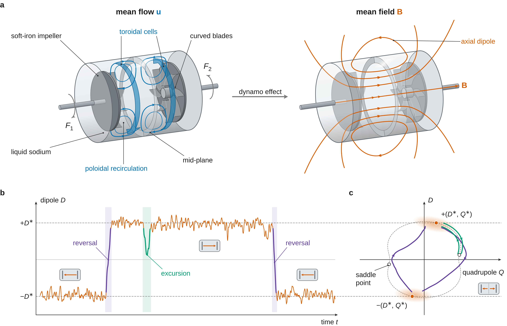
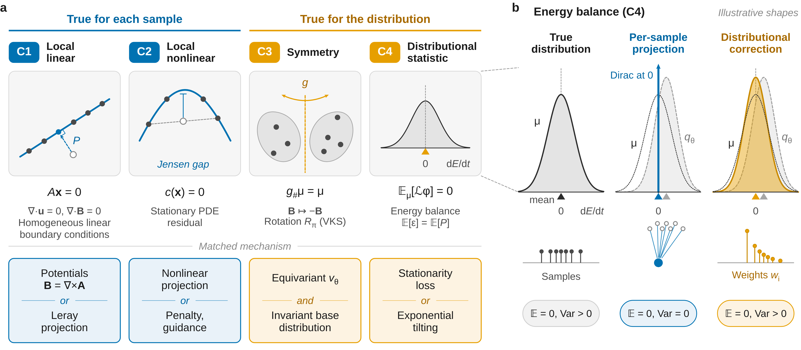
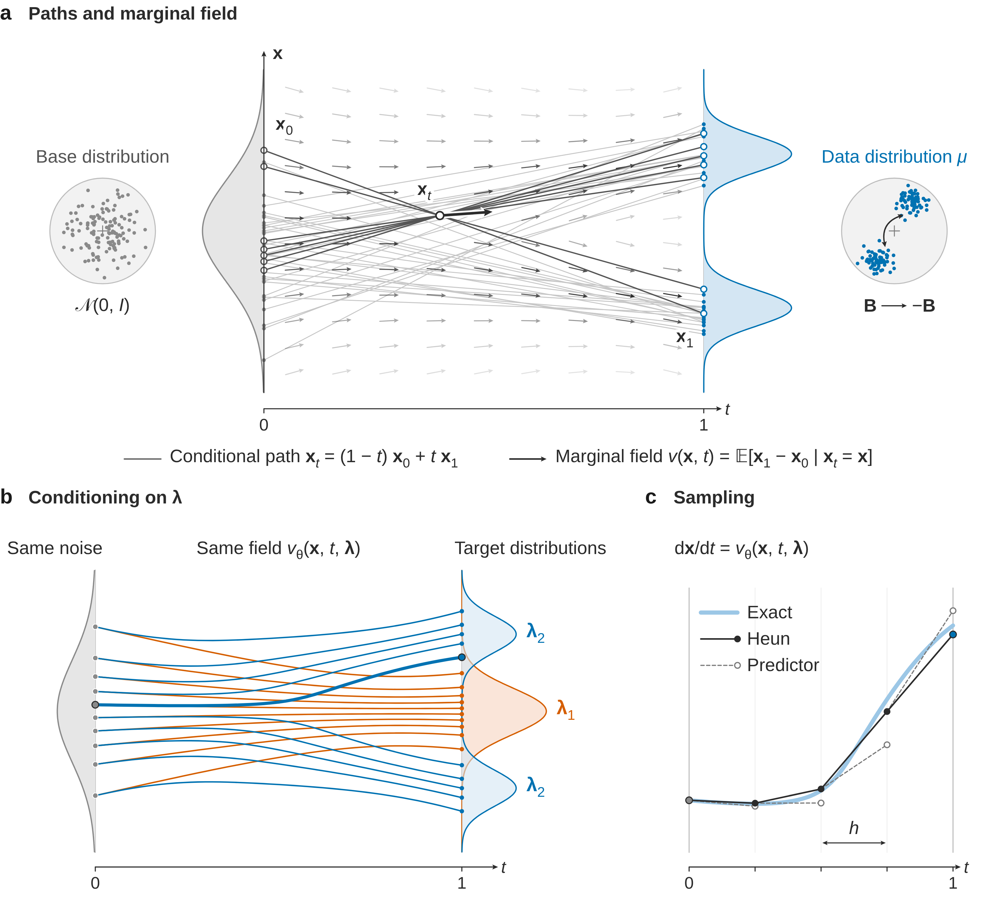
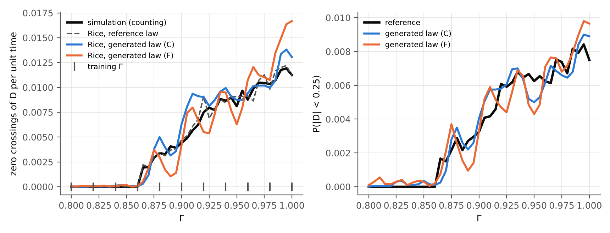
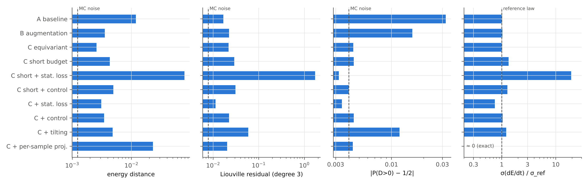
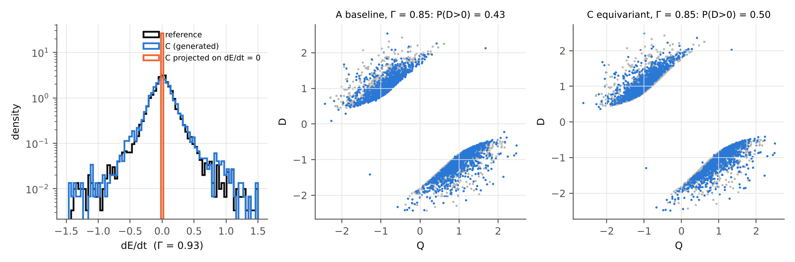
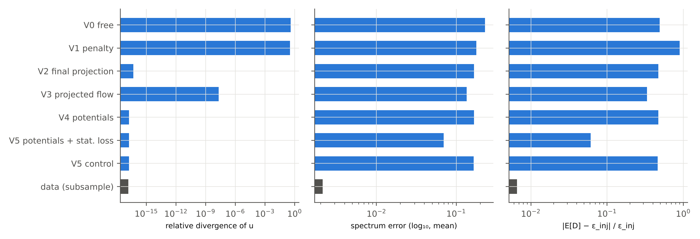
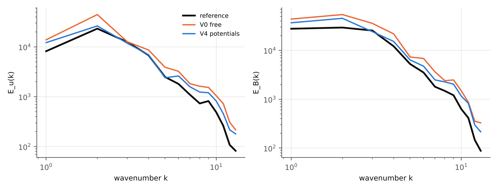
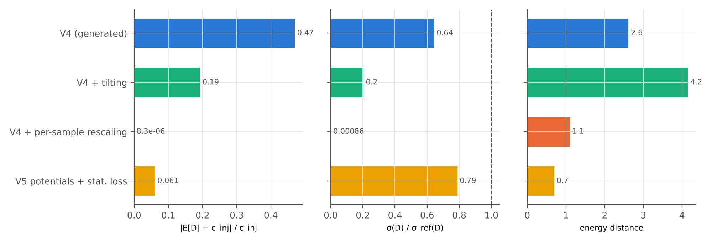
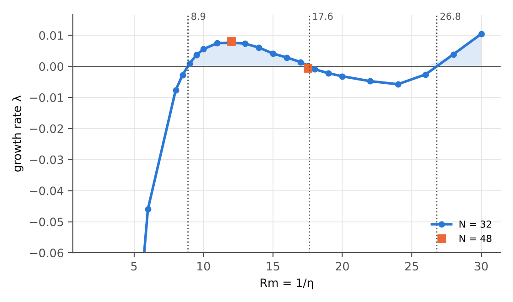

Physics-constrained conditional generative models for parametric MHD fields
M2 internship report (prospective) · ANR MilaDy project · CEREA–LISN
Internship fact sheet
| Item | Content |
|---|---|
| Title of the offer | Physics-Constrained Generative AI Modelling of Parametric Dynamical Systems (with potential PhD position), end-of-studies internship 2027 (Master 2 or final year of engineering school). |
| Framework | ANR project MilaDy, “Modélisation par apprentissage automatique des dynamos turbulentes” (machine-learning modelling of turbulent dynamos), ANR-25-CE51-0077 (committee CE51, starting January 2026, 48 months). Coordination: Caroline Nore (LISN). Partners: LISN, Lagrange laboratory (Observatoire de la Côte d’Azur), CEREA (École nationale des ponts et chaussées). |
| Location | CEREA, École nationale des ponts et chaussées (Institut Polytechnique de Paris), Champs-sur-Marne; the offer mentions possible remote work of up to one or two days per week. |
| Supervision | Sibo Cheng (ENPC, CEREA) and Didier Lucor (LISN, Université Paris-Saclay), in collaboration with Caroline Nore (LISN) and Yannick Ponty (Observatoire de la Côte d’Azur, CNRS), within the MilaDy consortium. |
| Period | Five to six months starting in spring 2027, according to the offer. |
| Deliverables expected by the offer | “A comparative study of physics-constrained generative modelling strategies for parameter-dependent MHD fields”, a concise technical report and reproducible code integrated into the project toolbox. |
| Status of this document | Prospective. The internship has not taken place. The results come from the small-scale experiments, run on a processor (CPU), in the experiences/ folder of this site. Nothing has been reviewed or validated by the supervisors. |
Disclaimer — a report written before the internship This document is written as the final report of an internship that has not yet taken place. Its purpose is to prepare that internship: it sets out a theoretical framework, confronts it with three toy experiments, and states what is missing to move on to the project’s data.
Three statuses are distinguished throughout the text. What is measured comes exclusively from the experiments in the experiences/ folder of this site, run on a 4-core processor without a GPU, on toy models: Gissinger’s three-mode reversal model (E1), forced 2D MHD on a 32² grid (E2) and the kinematic ABC dynamo on a 32³ grid (E3). The figures are copied from the digest experiences/resultats/digest.md or from the JSON files it is built from. What is published is cited with its reference, based on bibliographic records checked against the primary sources on November 6, 2026. What is conjectured is flagged as such.
No data from the MilaDy consortium (SFEMaNS or LATU simulations) has been used. Nothing in this document has been reviewed, discussed or validated by Sibo Cheng, Didier Lucor, Caroline Nore or Yannick Ponty, and no sentence should be read as expressing their opinion.
Résumé
Le projet ANR MilaDy cherche des modèles appris des dynamos turbulentes, capables de reproduire la sensibilité du champ magnétique aux paramètres de contrôle et ses renversements de polarité. Ce rapport prospectif étudie des modèles génératifs conditionnels, entraînés par flow matching, qui produisent des instantanés de champs conditionnés par un paramètre physique, et la façon d’y faire respecter la physique.
Le cadre repose sur une taxonomie des contraintes. Les contraintes locales linéaires, comme la divergence nulle, valent pour chaque échantillon et peuvent être imposées exactement par l’architecture ou par projection. La symétrie \mathbf{B} \to -\mathbf{B} et les identités de stationnarité, dont le bilan d’énergie moyen, ne valent que pour la loi. Imposer un bilan stationnaire à chaque échantillon produit une loi étrangère à la vraie loi (Corollaire 6) ; il faut l’imposer en loi, par une perte d’entraînement ou par une inclinaison exponentielle de la loi générée.
Trois expériences sur CPU testent ces énoncés. Sur le modèle à trois modes de Gissinger conditionné par son forçage \Gamma (E1), on compare symétrie imposée, contraintes en loi et contrainte par échantillon, et l’on prédit la fréquence des renversements par la formule de Rice à partir de la seule loi générée. Le champ de vitesse équivariant garde la loi symétrique à toutes les valeurs de \Gamma, alors que l’augmentation des données ne la symétrise qu’aux valeurs d’entraînement ; il divise la distance d’énergie aux valeurs de test par 4,6. La projection de chaque échantillon sur \mathrm{d}E/\mathrm{d}t = 0 la multiplie par 9. La formule de Rice retrouve la fréquence des passages de D par zéro avec une erreur relative cumulée de 14 % pour \Gamma \ge 0{,}89 (jusqu’à 65 % en un point) et de 42 % au voisinage du seuil, où le générateur lisse le saut de la loi. Sur ce banc, la perte de stationnarité divise par deux les résidus de stationnarité d’un bon modèle aux valeurs de test de \Gamma, mais elle resserre la loi de \mathrm{d}E/\mathrm{d}t et échoue sur un modèle biaisé. Sur la MHD 2D forcée conditionnée par la diffusivité magnétique \eta (E2), la génération libre laisse une divergence relative de 0,41, alors que les potentiels et les projections l’annulent à la précision machine. Une perte de stationnarité en loi, imposée à toute valeur de \eta, y compris sans données, ramène la distance d’énergie moyenne aux \eta de test de 2,58 à 0,70 et les erreurs sur les énergies cinétique et magnétique de 26 % et 37 % à 7 % et 6 %, alors qu’un témoin sans cette perte ne gagne rien. L’inclinaison exponentielle a posteriori réduit le résidu du bilan mais effondre la taille effective d’échantillon (0,29 en moyenne), et le recalage de chaque échantillon annule la variance de la dissipation. Une dynamo cinématique ABC (E3) valide un banc d’essai 3D : seuils mesurés 8,87, 17,6 et 26,8, en accord avec les valeurs publiées, et divergence de l’ordre de 10^{-16}.
Les modèles restent faibles : leurs erreurs de spectre (0,07 à 0,23 en \log_{10}) dépassent nettement celles de deux échantillons de données (0,002 à 0,011). Le passage aux données SFEMaNS et LATU du consortium est discuté en conclusion.
Abstract
The ANR project MilaDy seeks machine-learned models of turbulent dynamos that reproduce the sensitivity of the magnetic field to control parameters and its polarity reversals. This prospective report studies conditional generative models trained by flow matching, which produce snapshots of fields conditioned on a physical parameter, and how to make them respect physics.
The framework rests on a taxonomy of constraints. Local linear constraints, such as zero divergence, hold for every sample and can be enforced exactly by the architecture or by projection. The symmetry \mathbf{B} \to -\mathbf{B} and the stationarity identities, including the mean energy balance, hold for the law only. Enforcing a stationary balance on each sample yields a law that is singular with respect to the true one (Corollary 6); it must be enforced in law, through a training loss or through an exponential tilting of the generated law.
Three CPU experiments test these statements. On Gissinger’s three-mode reversal model conditioned on its forcing \Gamma (E1), we compare enforced symmetry, constraints in law and per-sample constraints, and we predict the reversal frequency with Rice’s formula from the generated law alone. The equivariant velocity field keeps the law symmetric at every value of \Gamma, whereas data augmentation symmetrizes it only at training values; it divides the energy distance at test values by 4.6. Projecting each sample onto \mathrm{d}E/\mathrm{d}t = 0 multiplies it by 9. Rice’s formula recovers the frequency of zero crossings of D with a cumulative relative error of 14% for \Gamma \ge 0.89 (up to 65% at a single value) and of 42% near the threshold, where the generator smooths the jump of the law. On this test bench, the stationarity loss halves the stationarity residuals of a good model at test values of \Gamma, but it narrows the law of \mathrm{d}E/\mathrm{d}t and fails on a biased model. On forced 2D MHD conditioned on the magnetic diffusivity \eta (E2), free generation leaves a relative divergence of 0.41, whereas potentials and projections cancel it to machine precision. A stationarity loss in law, imposed at every value of \eta, including values without data, lowers the mean energy distance at test values of \eta from 2.58 to 0.70 and the errors on kinetic and magnetic energies from 26% and 37% to 7% and 6%, while a control run without this loss gains nothing. A posteriori exponential tilting reduces the balance residual but collapses the effective sample size (0.29 on average), and per-sample rescaling cancels the variance of the dissipation. A kinematic ABC dynamo (E3) validates a 3D test bench: measured thresholds 8.87, 17.6 and 26.8, in agreement with published values, and divergence of order 10^{-16}.
The models remain weak: their spectral errors (0.07 to 0.23 in \log_{10}) clearly exceed those of two data samples (0.002 to 0.011). The move to the consortium’s SFEMaNS and LATU data is discussed in the conclusion.
1. Introduction
Context
The dynamo effect is the amplification and maintenance of a magnetic field by the flow of an electrically conducting fluid, against ohmic dissipation. It explains the magnetic field of the Earth and that of stars. It is hard to reproduce in the laboratory: according to the summary of the MilaDy project, only three liquid-sodium experiments, including the one in Cadarache, have achieved a dynamo, and the DRESDYN experiment, under way in Germany, seeks to achieve one with a precessing cylinder.
Numerical simulation of dynamos is expensive, because it couples the Navier–Stokes equations and the induction equation in turbulent regimes. According to the internship offer, it produces “large 3D datasets that are difficult to store, interpret and reuse” (our translation) for modelling and data assimilation. The MilaDy project aims to derive learned reduced models from them; its summary also mentions learning-based data assimilation, made more accessible by the TorchDA platform (Cheng et al. 2025).
Two properties make these data hard to learn. The first is sensitivity to parameters. The dynamo onset threshold depends on the magnetic Reynolds number Rm, but also on the materials and the boundary conditions: the VKS experiment only worked with soft-iron impellers (Monchaux et al. 2007), and, in the simulations of Nore et al. (2018), the threshold goes from Rm_c = 90 \pm 5 to 130 \pm 10 when the “pseudo-vacuum” condition is replaced by the vacuum condition, at Re = 1.5\cdot 10^3 and \mu_r = 50. The second is the existence of abrupt transitions, including polarity reversals of the field, observed in VKS (Berhanu et al. 2007) and reproduced numerically by Bousquet et al. (2026). The first objective of the project is precisely about these reversals, with reduced models able to identify their phases: precursor, reversal and rebound.
The proposed internship explores conditional generative models, based on diffusion or flow matching, that generate physical fields conditioned on the parameters of the system and that respect constraints derived from the equations and the boundary conditions. According to the offer, these methods will first be evaluated on simple PDE test benches, with possible applications to turbulent dynamo flows.
Research questions
The internship offer defines three objectives and three work packages. We reformulate them as five research questions, labeled P1 to P5, which the report answers section by section.
| Reformulated question | Wording of the offer | Where the report answers it | |
|---|---|---|---|
| P1 | Parametric conditioning. Learn a family of laws \mu_{\boldsymbol\lambda} and generate at values of \boldsymbol\lambda never seen, including near a threshold. | “Encode variations across control parameters (e.g., Reynolds number, magnetic Reynolds number, material properties…)” | Framework, Proposition 9, protocol, E1, E2 |
| P2 | Exact local constraints. Enforce zero divergence and the boundary conditions, through the architecture, the loss or the sampling, and measure what each choice costs. | “Respect key physical constraints, including energy balance and divergence-free conditions”; “through model design, training losses, or sampling procedures” | Taxonomy, Propositions 1 to 3, E2, E3 |
| P3 | Energy balance. State what “respecting the energy balance” means for a snapshot generator, and enforce it. | “energy balance” | Propositions 5 and 7, Corollary 6, E1, E2 |
| P4 | Evaluation. Choose statistical and physical metrics that genuinely discriminate between models. | “energy spectra, helicity, divergence control, and topology preservation” | Metrics, experiments, discussion |
| P5 | Toward 3D dynamos. Prepare the generation of 3D fields usable by reduced models or data assimilation, and the capture of reversals and thresholds. | “Enable robust generation of 3D fields that can serve as input for reduced-order models or data assimilation frameworks”; context: “abrupt reversals of the magnetic field polarity” | Propositions 4, 8 and 9, E1, E3, discussion |
Contributions
This report mostly assembles known results. What is already published is cited and not claimed:
- the equivalence between the invariance of a measure and the identities \mathbb{E}_\mu[\mathcal{L}\varphi] = 0 on a core of test functions (Echeverría 1982; Ethier & Kurtz 1986), and the generator approach to Stein discrepancies (Barbour 1988, 1990; Gorham & Mackey 2015; Gorham et al. 2019; Liu, Lee & Jordan 2016);
- the weak form of the stationary Fokker–Planck equation used as the loss of a sample generator, in the Weak Generative Sampler (Cai et al. 2026), with a min-max antecedent (Zang et al. 2020);
- learning from the invariant measure (Yang et al. 2023; Botvinick-Greenhouse, Martin & Yang 2023; Jiang et al. 2023; Schiff et al. 2024; Chen et al. 2026);
- the I-projection and the exponential tilting of a pre-trained generator under moment constraints (Csiszár 1975; Jaynes 1957; Pitera & Chodera 2012; Khalifa, Elsahar & Dymetman 2021; Mun 2026), and the tilting of a flow matching model by a weak-form PDE residual (Tauberschmidt et al. 2026);
- zero divergence in generative models: stream function (Wang et al. 2026), Leray projection (Genuist et al. 2026; Li, Buzzicotti et al. 2026; Li, Zhang et al. 2026), divergence-free networks (Richter-Powell, Lipman & Chen 2022);
- the transmission of a symmetry by an equivariant flow (Proposition 4), a classical result for equivariant normalizing flows;
- Propositions 2 and 3, elementary consequences of the definitions, probably known in other forms.
What this work claims is stated with caution: to our knowledge, after a literature search closed on November 6, 2026, no publication contains the following points.
- Using the stationarity identities of a field PDE (balances of energy, cross helicity and \langle a^2\rangle in MHD) as constraints in law on a parametric conditional generative model, enforceable at parameter values without data (fine-tuning in E1, loss in law in E2). Unlike the external moments of Khalifa et al. (2021) or Mun (2026), these identities require no target value: they hold for every invariant measure of the dynamics.
- Stating the inconsistency of a per-sample constraint on a stationary balance (Corollary 6) and measuring it (E1 and E2).
- Applying Rice’s formula to a snapshot generator to predict the frequency of reversals without time integration (Proposition 8). We found no prior work.
- Showing the complementarity of symmetry and stationarity: the stationarity identities do not fix the relative weights of two symmetric ergodic components, and equivariance is necessary (consequence of Proposition 4, tested in E1).
- A technical point: the naive estimator of a stationarity loss, the square of a mini-batch mean, has expectation (\mathbb{E}g)^2 + \mathrm{Var}(g)/n and therefore penalizes the spread of the law; the product of the means of two independent half-batches removes this bias. The problem appeared while developing E1, on its quick version.
- A lower bound on the error of a generator that is regular in \boldsymbol\lambda near a jump of the law (Proposition 9), applied to the reversal threshold and the dynamo threshold.
Outline of the report
Section 2 reviews the state of the art: dynamos, model reduction, generative models, hard constraints and constraints in law. Section 3 sets out the framework, the taxonomy of constraints and nine proven statements. Section 4 describes exactly the methods and the protocol of the experiments, Section 5 their results, and Section 6 answers the research questions P1 to P5 and discusses the validity of the conclusions. Section 7 concludes and opens toward the PhD. The appendices give the reproduction commands, the hyperparameters and a glossary.
2. State of the art
This section gathers what is published and useful for the internship. All the figures cited come from the referenced articles, re-read on their primary source; none comes from our experiments.
Laboratory dynamos and numerical dynamos
The magnetic Reynolds number Rm = UL/\eta compares induction to the diffusion of the field; a dynamo appears only above a threshold Rm_c. Liquid metals have a very small magnetic Prandtl number, Pm = \nu/\eta = 0.82\cdot10^{-5} for sodium at 120 °C (Nore et al. 2018), so that the kinetic Reynolds number Re = Rm/Pm reaches several million at the threshold: the flow is fully turbulent when the magnetic field appears.
Three liquid-sodium experiments have achieved a self-sustained dynamo. In Riga, a Ponomarenko-type helical flow allowed the first detection of a self-excited magnetic eigenmode, in November 1999: at 2150 rpm and 205 °C, the mode grows at the rate p_2 = 0.0315 \pm 0.0009 s⁻¹ and oscillates at f_2 = 1.326 Hz (Gailitis et al. 2000; history in Gailitis et al. 2008). In Karlsruhe, a module of 52 vortex generators realizes the two-scale dynamo of Roberts and Busse; the first successful run dates from December 1999 (Rädler & Brandenburg 2003), and the saturated field is a stationary dipole that exhibits two quasi-equivalent states (Stieglitz & Müller 2001; Müller et al. 2008). In Cadarache, the von Kármán Sodium (VKS) experiment achieved a dynamo in a strongly turbulent flow, between two counter-rotating impellers, with soft-iron impellers, whereas no dynamo appeared with stainless-steel impellers (Monchaux et al. 2007).
The published thresholds for VKS depend on the definition of Rm and cannot be compared directly. With an impeller efficiency factor K \approx 0.6, Monchaux et al. (2007) find Rm_c \approx 31; with a definition without this factor, Nore et al. (2018) report an experimental interval 52 \le Rm_c \le 71; Miralles et al. (2013) use yet another definition. A generative model conditioned on “Rm” will therefore have to fix its convention.
Direct numerical simulation of VKS with the impellers represented was carried out with the SFEMaNS code, which combines a Fourier decomposition in azimuth and Lagrange finite elements in the meridian plane (Guermond et al. 2007, 2009): the threshold decreases when the magnetic permeability of the impellers increases, and the field is an essentially axisymmetric axial dipole, as in the experiment (Nore et al. 2016). Nore et al. (2018) quantify the sensitivity to boundary conditions: at Re = 1.5\cdot10^3 and \mu_r = 50, Rm_c = 90 \pm 5 with the condition \mathbf{H}\times\mathbf{n} = 0 (“pseudo-vacuum”), against 130 \pm 10 with the vacuum condition, that is, about 40% more; their extrapolation Rm_c \approx 70 at large Re falls within the experimental interval. The consortium’s second solver, LATU, is a Fourier pseudo-spectral code in which the impellers and walls are represented by penalization, in a periodic box (3\pi)^3 with 384^3 points (Kreuzahler et al. 2017).
For modelling, these works say two things. The relevant control parameters are not limited to Re and Rm: the permeability \mu_r and the electromagnetic conditions shift the threshold as much as they do. And the simulation data do not live on a regular Cartesian grid: in SFEMaNS, they are azimuthal Fourier modes carried by an unstructured finite-element mesh.
Reversals and low-dimensional models
Berhanu et al. (2007) observed the first \mathbf{B} \to -\mathbf{B} reversals in the laboratory, in VKS, when the two impellers rotate at different frequencies. At F_1 = 16 Hz and F_2 = 22 Hz, the mean durations of the two polarities are \langle T_+\rangle = 120 s and \langle T_-\rangle = 50 s, and a reversal lasts \tau \approx 5 s, compared with an ohmic diffusion time of about 0.4 s; excursions, in which the field drops and then returns to the same polarity, are also observed.
Pétrélis & Fauve (2008) explain these dynamics by the coupling of a dipolar mode D and a quadrupolar mode Q. The invariance of the equations under \mathbf{B} \to -\mathbf{B} imposes a normal form for the complex amplitude A = D + iQ, which reduces to a phase equation \dot\theta = \mu_i - \rho\sin 2\theta. A saddle-node bifurcation at \mu_i = \rho separates the stationary states from periodic reversals; just below this threshold, turbulent noise triggers random reversals. Pétrélis et al. (2009) apply this mechanism to reversals of the Earth’s field.
Gissinger (2012) proposes a deterministic three-mode model, which serves as test bench E1:
\dot Q = \mu Q - VD, \qquad \dot D = -\nu D + VQ, \qquad \dot V = \Gamma - V + QD .
Here V is a velocity mode that breaks the equatorial symmetry, forced by \Gamma, and the term QD represents the Lorentz force. The system is invariant under (Q, D, V) \to (-Q, -D, V), the image of \mathbf{B} \to -\mathbf{B}. For \nu = 0.1 and \Gamma = 0.9, the two symmetric attractors merge through a crisis at \mu_c \approx 0.11928; at \mu = 0.119, the reversals are chaotic, with a Lyapunov exponent \lambda \simeq 0.1, and at \mu = 0.12 the chaos remains confined around a single fixed point. The law of waiting times between reversals is Poissonian at long times, and the density of D is bimodal, with a very low probability at 0 (Gissinger 2012). The same model, with the roles of D and Q exchanged, appears in Gissinger, Dormy & Fauve (2010), based on simulations in a sphere. An attractor-merging crisis (Grebogi, Ott & Yorke 1983) comes with an intermittency whose mean residence time diverges as the threshold is approached (Grebogi et al. 1987); Gissinger (2012) observes a mean waiting time \tau \sim (\mu - \mu_c)^{-\gamma} with \gamma \simeq 1/2, noting that it is “difficult to conclude”, so sensitive is the result to \mu_c.
Bousquet et al. (2026) obtained reversals in simulations of VKS, with both of the consortium’s solvers. For their reference simulation (Re = 1594, Rm = 531, forcing asymmetry (F_1 - F_2)/(F_1 + F_2) = 0.058, \mu_r = 16 in the impellers), the reversal follows a five-step mechanism: dipole, weakening near the fast impeller, quadrupolar state, weakening near the slow impeller, reversed dipole. A proper orthogonal decomposition (POD) on 2000 snapshots brings out four dominant axisymmetric modes, a dipole, a quadrupole and two velocity modes; a reduced Galerkin model, DQVU, identified by constrained sparse regression with PySINDy, reproduces the asymmetric bimodal law of the velocity mode V, which the three-mode DQV model does not. The data are not public; they are available from the authors upon reasonable request.

These models set the target. A generator of 3D dynamo fields should reproduce the joint law of the dominant modes (bimodality, asymmetry, rarity of passages through D = 0) and, if possible, the statistics of reversals. Gissinger’s model is simple enough for the true law to be known to any desired accuracy, and rich enough to have a reversal threshold, a symmetry and deterministic chaos.
Model reduction by learning
Learned reduced models seek a low-dimensional representation in which the dynamics become simple. Fukami & Taira (2023), the main reference of the offer, compress the flow around a NACA 0012 airfoil at Re = 100, subjected to extreme vortex gusts, into three latent variables, with an autoencoder whose loss also contains the prediction of lift (\beta = 0.05); principal component analysis fails to detect the vortex in this case. Solera-Rico et al. (2024) combine a \beta-VAE variational autoencoder and a transformer: at Re = 100, with \beta = 0.05 and 20 latent variables, the \beta-VAE captures 89.8% of the energy on the training data, against 64.4% for 20 POD modes, and 69 POD modes are needed to match it; the full reduced model retains 78.1% of the energy at one convective time and 64.6% at ten. Eivazi et al. (2022) report 87.36% of the energy with 5 latent variables, against 32.41% with 5 POD modes, on a turbulent urban flow.
On the MilaDy side, Bousquet, Nore & Lucor (2025) compare autoencoders and variational autoencoders on Navier–Stokes fields (oscillating cylinder, parametric study, von Kármán flow). They relate the organization of the latent space to the POD modes and analyze the equivariance relations between physical and latent symmetries, which are better preserved by variational autoencoders; increasing the regularization of the latter degrades the reconstruction. Bousquet et al. (2024) analyzed by POD large-eddy simulations of the von Kármán flow at Re > 10^4 and confirmed numerically a metastable state that breaks the R_\pi symmetry.
One remark connects these works to E2. For a field that is statistically homogeneous in a periodic direction, the POD modes are the Fourier modes of that direction (a classical result, see Holmes, Lumley & Berkooz 1996, and Section 4). A truncated Fourier basis is therefore the optimal linear latent space in the POD sense for the homogeneous turbulence of E2; the nonlinear autoencoders of Fukami, Solera-Rico or Bousquet will become necessary as soon as homogeneity is lost, as in VKS.
Diffusion, flow matching and generation of physical fields
Diffusion models learn to invert a progressive noising of the data: DDPM (Ho, Jain & Abbeel 2020), formulation through stochastic differential equations and the probability flow equation (Song et al. 2021), the design choices of EDM (Karras et al. 2022), classifier-free guidance for conditioning (Ho & Salimans 2022). Flow matching (Lipman et al. 2023) directly trains the velocity field of an ordinary differential equation that transports Gaussian noise to the data, by regression on conditional paths; the linear path corresponds to the rectified flow of Liu, Gong & Liu (2023), and stochastic interpolants unify flows and diffusions (Albergo & Vanden-Eijnden 2023; Albergo, Boffi & Vanden-Eijnden 2025). Tong et al. (2024) generalize the base law and the coupling. These ideas have been extended to function spaces (Kerrigan, Migliorini & Smyth 2024; Lim et al. 2025).
FunDiff (Wang et al. 2026), the main reference of the offer, combines a functional autoencoder, whose decoder can be queried at any point, and a latent diffusion transformer trained by rectified flow. The constraints in it are of three kinds. Zero divergence is enforced by the architecture: the decoder outputs a stream function \psi, with u = \partial_y\psi, v = -\partial_x\psi, and the predicted divergence is described as “negligible”, without a numerical value in the text. Periodicity and reflection symmetries are enforced by construction. The PDE residual is added as a soft loss. On linear elasticity, the relative L^2 error is 5.12% at 256\times256 from 32\times32 observations with 10% noise.
PIDM (Bastek, Sun & Kochmann 2025), another reference of the offer, treats the PDE residual as a virtual zero observation, evaluated on the estimate \mathbf{x}_0^\ast of the diffusion model, and adds a term \|\mathcal{R}(\mathbf{x}_0^\ast)\|^2 to the loss. The authors identify the Jensen gap: \mathcal{R}(\mathbb{E}[\mathbf{x}_0\mid\mathbf{x}_t]) \neq \mathbb{E}[\mathcal{R}(\mathbf{x}_0)\mid\mathbf{x}_t], so that the penalty on the mean estimate conflicts with the data loss; a two-step sampling estimate reduces this conflict, at the cost of a 69% training overhead (23% for the mean estimate). In topology optimization, the mean absolute error of the residual goes from 1.86\cdot10^{-3} to 1.24\cdot10^{-3}.
Other works generate or reconstruct flows. DiffusionPDE (Huang et al. 2024) guides sampling with the observations and the PDE residual, the latter only after 80% of the steps. Shu, Li & Barati Farimani (2023) and CoCoGen (Jacobsen, Zhuang & Duraisamy 2025) add gradients of the residual during or at the end of sampling. TurbDiff (Lienen et al. 2024) generates 3D turbulent states without an initial state, in about 20 s per sample on GPU against about 602 s for the solver, without an explicit incompressibility constraint. Kohl, Chen & Thuerey (2026) condition an autoregressive diffusion on the Reynolds number and test outside the training range. CoNFiLD (Du et al. 2024) combines neural fields and latent diffusion on 3D geometries. GenCast (Price et al. 2025) outperforms operational ensemble forecasting on 97.2% of 1320 targets, without an explicit physical constraint. The closest to our problem is the work of Galletti et al. (2026), a preprint, which generates by latent flow matching statistically stationary states of gyrokinetic turbulence conditioned on dimensionless parameters, to warm-start a solver; no physical constraint is mentioned in it. On the CEREA side, Zhuang, Cheng & Duraisamy (2025) reconstruct global fields from sparse observations with a cross-attention diffusion model. Finally, the review by Biferale & Buzzicotti (2026), a preprint, argues for validating generative models of turbulence on energy transfers, structure functions and conservation laws, rather than on pointwise errors.
Guidance at sampling time
Guidance modifies the sampling of an already trained model. DPS (Chung et al. 2023) adds the gradient of a likelihood evaluated on the Tweedie estimate, an approximation whose error is again a Jensen gap. Universal guidance (Bansal et al. 2024), cited by the offer, extends this idea to any differentiable function: “forward” guidance through the gradient of a loss evaluated on the estimate \hat{\mathbf{z}}_0, “backward” guidance that optimizes a correction \Delta\mathbf{z}_0 by a few descent steps, and repetition of each step with re-noising. The authors specify that the hyperparameters must be tuned for each guidance network. D-Flow (Ben-Hamu et al. 2024) instead optimizes the initial noise by differentiating through the whole flow, which is expensive. These methods enforce soft constraints and act sample by sample; we do not use them in the experiments, but they are the reference against which to compare the mechanisms in law.
Hard constraints
A constraint is said to be hard when it is satisfied by construction or to machine precision. Richter-Powell, Lipman & Chen (2022) build networks that are divergence-free by construction from differential forms, universal on the torus, at a cost quadratic in the dimension. For convex sets, projection after each Langevin step guarantees feasibility (Christopher, Baek & Fioretto 2024), at the cost of an overhead that can be very high when the projection is an optimization problem (682.40 s against 13.79 s per sample in one of their tasks). ECI (Cheng et al. 2025) enforces linear or value constraints without gradients, through extrapolation, correction and interpolation at each step, in 0.065 s per sample against 28.774 s for D-Flow. PCFM (Utkarsh et al. 2025) handles nonlinear constraints through a Gauss–Newton projection at each step and an exact final projection, which accounts for 1 to 3% of the total time.
For the zero divergence of incompressible flows, three works from 2026 are directly relevant. Genuist et al. (2026), a preprint not peer-reviewed, compare six ways of enforcing incompressibility in an autoregressive diffusion (unconstrained baseline, projection onto the manifold, Leray projection at the output of the denoiser, PINN-type soft penalty, a posteriori projection, progressive projection) on decaying 2D turbulence with Ekman friction. The soft penalty “performs poorly across all metrics” in distribution and in rollout; but on the out-of-distribution Taylor–Green case, it is the one that obtains the best squared error (4.53\cdot10^{-4} against 1.49\cdot10^{-3} for the baseline), with a nonzero divergence (1.84\cdot10^{-2}). The authors conclude that no strategy dominates: strict constraints are better near the distribution and at short horizons, soft constraints sometimes preferable in long rollouts and out of distribution. PCDM (Li, Buzzicotti, Bonaccorso & Biferale 2026, preprint) applies the Fourier projection I - \mathbf{k}\mathbf{k}^\top/|\mathbf{k}|^2 to the clean estimate of the denoiser, on 3D rotating turbulence at 64^3: the divergence is zero to machine precision and training is about five times shorter than that of the baseline (12 days against 56 on 4 A100 GPUs). Project and Generate (Li, Zhang et al. 2026, preprint) builds a divergence-free Gaussian reference measure, so that the flow matching paths stay in the constrained space; the divergence remains of order 10^{-7}, whereas unconstrained flow matching diverges numerically in long rollouts.
For the magnetic field, da Silva et al. (2025, preprint) generate the spherical harmonic coefficients of a coronal potential field, which enforces \nabla\cdot\mathbf{B} = 0 through the representation; their evaluation is qualitative.
The following table summarizes where each cited method acts and whether the constraint is hard or soft; the costs are those reported by the authors.
| Method | Where the constraint acts | Constraint | Hard or soft | Reported cost |
|---|---|---|---|---|
| FunDiff, stream function | architecture (decoder) | \nabla\cdot\mathbf{u} = 0 in 2D | hard | not reported |
| PIDM | training loss | PDE residual | soft | +23% (mean estimate) or +69% (sampling estimate) training time |
| DPS, DiffusionPDE | guidance at sampling time | observations and residual | soft | DPS: about 95 s per image in 1000 evaluations |
| Universal guidance | forward and backward guidance, repetitions | any differentiable function | soft | several forward and backward passes per step |
| Divergence-free networks | architecture | zero divergence | hard | quadratic in the dimension |
| PCDM; Genuist et al., variant D | Leray projection of the denoiser estimate | \nabla\cdot\mathbf{u} = 0 | hard | one Fourier transform per step; PCDM: training about 5 times shorter |
| Genuist et al., variant L | PINN-type loss | \nabla\cdot\mathbf{u} = 0 | soft | nonzero residual divergence |
| PDM | projection after each Langevin step | convex set | hard | from 26.89 s against 18.51 s to 682.40 s against 13.79 s per sample depending on the task |
| ECI | correction at each step, without gradients | linear and value constraints | hard | 0.065 s per sample, against 28.774 s for D-Flow |
| PCFM | Gauss–Newton projection and final projection | nonlinear constraints | hard | final projection: 1 to 3% of the total time |
| D-Flow | optimization of the initial noise | any differentiable function | soft | 28.774 s per sample |
| da Silva et al. | representation (spherical harmonics) | potential field, \nabla\cdot\mathbf{B} = 0 | hard | no overhead |
Constraints in law and invariant measures
A chaotic dynamics in a statistically stationary state imposes nothing on an isolated snapshot, but it imposes identities on the law of the snapshots. The classical criterion states that a measure \mu is invariant for a Markov process with generator \mathcal{L} if and only if \int \mathcal{L}f\,\mathrm{d}\mu = 0 for every f in a core of the generator; necessity is general, sufficiency requires assumptions (Echeverría 1982; Ethier & Kurtz 1986). The generator approach underlies Stein discrepancies (Barbour 1988, 1990; Gorham & Mackey 2015; Gorham et al. 2019; Liu, Lee & Jordan 2016), which test a sample against a target known through its score; here, on the contrary, the target is unknown and it is the physical generator that is known.
The closest prior work to our stationarity losses is the Weak Generative Sampler (Cai, Cao, Huang & Zhou 2026): a generator G_\theta is trained to minimize \mathbb{E}_\varphi\big(\mathbb{E}_z[\mathcal{L}^\ast\varphi(G_\theta(z))]\big)^2, with random Gaussian test functions, to sample the invariant law of stochastic differential equations up to dimension 100; weak adversarial networks (Zang et al. 2020) are its min-max antecedent. Other works learn a dynamics or an emulator from the invariant measure: optimal transport (Yang et al. 2023), optimization under a stationary Fokker–Planck constraint (Botvinick-Greenhouse, Martin & Yang 2023), chosen statistics or contrastive learning (Jiang et al. 2023), regularization by the MMD distance to the invariant measure in DySLIM (Schiff et al. 2024), whose authors note that invariant measures may not be unique, and score matching of the invariant measure (Chen et al. 2026). Wu et al. (2020) impose the covariance of the data on an adversarial generator of Rayleigh–Bénard convection, and Guan et al. (2023) a global conservation of enstrophy transfer in subgrid-scale closures.
The I-projection gives the law closest to a given law, in the Kullback–Leibler sense, under moment constraints; it is an exponential tilting (Csiszár 1975; maximum entropy principle of Jaynes 1957). It has been applied to simulated molecular ensembles (Pitera & Chodera 2012) and to pre-trained text generators (Khalifa, Elsahar & Dymetman 2021). Mun (2026, preprint) seeks “the exponentially tilted high-resolution distribution that minimizes KL divergence from the biased baseline, subject to moment constraints derived from low-resolution simulations”, carried out at inference in a diffusion model; Khalafi, Ding & Ribeiro (2024) train diffusions under law constraints by duality. Tauberschmidt et al. (2026) fine-tune a flow matching model toward the tilted law p_r \propto e^{\lambda r}p with a reward built on a weak-form PDE residual; this residual is computed on each sample, because the stationary PDE must be satisfied field by field.
Two caveats come from ergodic theory. For a dissipative system, the physical measure (SRB measure) is in general singular with respect to the Lebesgue measure, so that the Liouville equation has no solution with a density and only its weak form makes sense; and the selection of this measure as a zero-noise limit is established only in the Axiom A setting, with Young (2002) specifying that there is “no general result” beyond it.
Generative models for MHD
The works closest to our subject remain far from dynamos. Kacmaz, Huerta & Haas (2025) combine a physics-informed neural operator (PINO) and a conditional diffusion for resistive incompressible 2D MHD, at Pm = 1 and Re from 100 to 10,000: at Re = 1000, the relative L^2 error goes from 0.2548 to 0.1033; the divergence of \mathbf{B} is guaranteed only by the solver, which uses a vector potential, and not by the generative model, and no helicity is evaluated. Martin et al. (2025) generate test-particle trajectories in 3D MHD turbulence; da Silva et al. (2025) coronal potential fields; The Well dataset contains isothermal compressible 3D MHD turbulence, of the interstellar-medium type, which is not a simulation of a laboratory dynamo (Ohana et al. 2024).
To our knowledge, no generative model based on diffusion or flow matching has been published on dynamo simulations (geodynamo, VKS, DRESDYN or 3D turbulent dynamo): searches in the arXiv API and on the web, repeated on November 6, 2026, did not contradict this, but an absence cannot be proven.
Evaluation metrics
The offer asks for the generated fields to be evaluated by their energy spectra, their helicity, divergence control and topology preservation. Public benchmarks mostly propose deterministic errors: squared error normalized by the variance (VRMSE) and error normalized per spectral band in The Well (Ohana et al. 2024), errors per low, middle and high Fourier band, and error on a conserved quantity, in PDEBench (Takamoto et al. 2022). For samples of a law, these pointwise errors are dominated by the intrinsic variance and are not suitable. Generative works rather use distances between laws: Wasserstein distances between turbulent kinetic energy spectra and between field values in TurbDiff (Lienen et al. 2024), one-point distances and the CRPS score in GenCFD (Raonić et al. 2026), MMD (Gretton et al. 2012) or the energy distance, which equals twice the square of the MMD for the distance-induced kernel (Sejdinovic et al. 2013).
For the magnetic helicity H_M = \langle\mathbf{A}\cdot\mathbf{B}\rangle, the gauge matters: there is no absolute measure of the helicity of a subvolume that is not bounded by a magnetic surface, and a relative helicity is then needed (Berger & Field 1984). For topology, persistent homology provides diagrams that are stable under perturbation (Edelsbrunner, Letscher & Zomorodian 2002; Cohen-Steiner, Edelsbrunner & Harer 2007), already applied to MHD simulations of the interstellar medium with dynamo action (Makarenko et al. 2018); magnetic null points and the skeleton of the field are located by dedicated methods (Haynes & Parnell 2007, 2010). None of these tools has, to our knowledge, been used to evaluate generated MHD fields.
Gaps
The state of the art leaves six gaps that structure this internship.
- No generative model of a dynamo. The closest MHD work is in 2D, a configuration where a self-sustained dynamo is ruled out by Zel’dovich’s anti-dynamo theorem (1957, recalled by Tobias 2021), and its generator does not enforce \nabla\cdot\mathbf{B} = 0.
- No joint hard constraint on \nabla\cdot\mathbf{u} and \nabla\cdot\mathbf{B} in 3D. The building blocks exist separately: 3D Leray projection (PCDM), divergence-free networks, stream function in 2D (FunDiff), potential field. The vector potential, the 3D generalization of the stream function, requires a choice of gauge.
- No treatment of bounded domains. The Leray projection in Fourier assumes periodicity, whereas VKS and DRESDYN are walled cylinders, with permeability jumps and a matching to the external field.
- No MHD metrics. No work found evaluates the magnetic or cross helicity, the magnetic energy balances or the topology of the field lines of generated fields.
- No conditioning on (Re, Rm) and no threshold crossing. No work conditions on both Reynolds numbers at once, or studies the crossing of the dynamo threshold or of the reversal threshold by a generative model.
- No systematic comparison on coupled PDEs, and no constraint in law for fields. The most direct comparison (Genuist et al. 2026) concerns divergence alone in 2D hydrodynamics and concludes that no strategy dominates; stationarity constraints in law have only been used for low-dimensional systems (at most 100 for the Weak Generative Sampler).
Key takeaways — state of the art
- Laboratory and numerical dynamos are as sensitive to materials and boundary conditions as to Re and Rm; their data (SFEMaNS, LATU) are not on a regular grid.
- Reversals have low-dimensional models (the normal form of Pétrélis and Fauve, Gissinger’s three-mode model, the DQVU model of Bousquet et al.) that provide test benches with a known truth.
- Zero divergence can be enforced exactly in a generative model through potentials or projection; no strategy dominates in all regimes (Genuist et al. 2026, preprint).
- Constraints in law (weak form of Fokker–Planck, invariant measures, I-projection) have been published for low-dimensional systems or external moments, not for field PDEs in a parametric conditional generator.
- To our knowledge, no generative model has been published on dynamo simulations.
3. Formulation
This section sets out the mathematical framework, classifies the physical constraints and proves nine statements that guide the experiments. The propositions follow the numbering of the theoretical note shared by the report and the PhD proposal (Propositions 1 to 9, including Corollary 6); the other boxes are numbered by chapter. The notation is that of the site: \mathbf{x} \in \mathbb{R}^D is a discretized field, t \in [0, 1] the time of the generative flow (it is not a physical time), and v_\theta the velocity field of the flow, not to be confused with the physical velocity \mathbf{u}.
Framework
Definition 3.1 — Parametric family of stationary laws Let \Lambda \subset \mathbb{R}^p be the set of control parameters \boldsymbol\lambda (for example Re, Rm, \mu_r, or the forcing \Gamma of Gissinger’s model). For each \boldsymbol\lambda, the discretized state evolves according to
\mathrm{d}\mathbf{x} = F_{\boldsymbol\lambda}(\mathbf{x})\,\mathrm{d}t + \Sigma\,\mathrm{d}W_t ,
with \Sigma = 0 for a deterministic dynamics. The generator of the dynamics acts on test functions \varphi by
\mathcal{L}_{\boldsymbol\lambda}\varphi = F_{\boldsymbol\lambda}\cdot\nabla\varphi + \tfrac12\,\Sigma\Sigma^\top : \nabla^2\varphi .
The data are snapshots of a statistically stationary state. Their law \mu_{\boldsymbol\lambda} is an invariant measure of the dynamics, estimated by time averaging along long trajectories.
Definition 3.2 — Conditional generative model by flow matching A network v_\theta(\mathbf{z}, t, \boldsymbol\lambda) defines, for each \boldsymbol\lambda, the flow \Phi^{\boldsymbol\lambda}_t of the equation \dot{\mathbf{z}} = v_\theta(\mathbf{z}, t, \boldsymbol\lambda), and the generated law q_\theta(\cdot\mid\boldsymbol\lambda) = (\Phi^{\boldsymbol\lambda}_1)_\#\,\mathcal{N}(0, I). It is trained with the flow matching loss on the linear path \mathbf{x}_t = (1-t)\mathbf{x}_0 + t\,\mathbf{x}_1:
\mathcal{J}(v) = \mathbb{E}\,\big\|\,v(\mathbf{x}_t, t, \boldsymbol\lambda) - (\mathbf{x}_1 - \mathbf{x}_0)\,\big\|^2 ,
where t \sim \mathcal{U}[0, 1], \boldsymbol\lambda follows the law of the training parameters, \mathbf{x}_1 \sim \mu_{\boldsymbol\lambda} and \mathbf{x}_0 \sim \mathcal{N}(0, I) is independent of \mathbf{x}_1. The minimizer is
v^\star(\mathbf{x}, t, \boldsymbol\lambda) = \mathbb{E}\big[\mathbf{x}_1 - \mathbf{x}_0 \,\big|\, \mathbf{x}_t = \mathbf{x}, \boldsymbol\lambda\big].
The minimizer is justified in one line: for every field v, \mathcal{J}(v) = \mathcal{J}(v^\star) + \mathbb{E}\|v(\mathbf{x}_t, t, \boldsymbol\lambda) - v^\star(\mathbf{x}_t, t, \boldsymbol\lambda)\|^2, because the cross term \mathbb{E}\big[(v - v^\star)\cdot(v^\star - (\mathbf{x}_1 - \mathbf{x}_0))\big] vanishes by conditioning on (\mathbf{x}_t, t, \boldsymbol\lambda). The network therefore learns a conditional expectation by simple regression, without ever computing it; Lipman et al. (2023) show that the flow of v^\star indeed transports \mathcal{N}(0, I) onto \mu_{\boldsymbol\lambda}.
Figure 2 summarizes the framework that this report argues for: each class of constraint is handled at the stage where it is true.
![Diagram in five panels. a: trajectories of a flow that transports a Gaussian to a law with two symmetric bumps, with an operator S that exchanges the bumps. b: a decoder receives latent tokens and produces maps of potentials whose contour lines are the field lines. c: VKS-type cylinder with two impellers, streamlines on one side and dipolar field lines on the other. d: histograms of the dissipation, the raw law shifted and the tilted law recentered, with a crossed-out spike at zero for the per-sample projection. e: three downstream uses, reduced models, data assimilation and Rice's formula.](../../figures/cadre/figure/out/cadre-en.png)
Taxonomy of constraints
Not all “physical constraints” have the same status. Some are true for every admissible field; others are true only for the law of the fields. The following taxonomy, which organizes the whole report, separates four classes and associates with each the mechanism that acts where the constraint is true.

Definition 3.3 — Four classes of constraints
| Class | Form | Examples in MHD | True for | Suitable mechanism |
|---|---|---|---|---|
| C1 — local linear | \mathbf{x} \in S, with S = \ker A a closed subspace | \nabla\cdot\mathbf{u} = 0, \nabla\cdot\mathbf{B} = 0, homogeneous linear boundary conditions | each sample | architecture (potentials) or projection |
| C2 — local nonlinear | c(\mathbf{x}) = 0 | stationary equation (Darcy in PIDM), algebraic relation | each sample, if no time derivative is involved | nonlinear projection (PCFM, ECI), penalty or guidance |
| C3 — symmetry | g_\#\mu_{\boldsymbol\lambda} = \mu_{\boldsymbol\lambda} for g \in G | \mathbf{B} \to -\mathbf{B}; rotation R_\pi of VKS; (Q, D, V) \to (-Q, -D, V) | the law | equivariance of the velocity field |
| C4 — statistical (stationarity) | \mathbb{E}_{\mu_{\boldsymbol\lambda}}[\mathcal{L}_{\boldsymbol\lambda}\varphi] = 0 for \varphi \in \Phi | mean energy balance \langle\varepsilon\rangle = \langle P\rangle; balances of cross helicity and of \langle a^2\rangle | the law only | loss in law during training; exponential tilting at sampling time |
Remark 3.4 — A snapshot does not “satisfy” an evolution equation For a snapshot of an unsteady PDE, the residual \partial_t\mathbf{x} - F(\mathbf{x}) cannot be computed, since the time derivative is not in the snapshot: every state is the initial state of a solution. The only per-sample constraints that the physical model provides are those that do not involve time, such as zero divergence, boundary conditions or diagnostic elliptic equations (the pressure, for example). In particular, the energy balance \mathrm{d}E/\mathrm{d}t = P - \varepsilon is an identity, whose right-hand side is computed on the snapshot; it is not a constraint. The constraint is \mathbb{E}[P - \varepsilon] = 0, and it bears on the law.
Per-sample constraints: Propositions 1 to 3
Proposition 1 — Linear constraint by construction If the model generates \mathbf{z} according to any law and then returns \mathbf{x} = \mathcal{C}(\mathbf{z}), with a decoder \mathcal{C} such that \mathrm{Im}\,\mathcal{C} \subset S (for example \mathbf{u} = \nabla^\perp\psi, \mathbf{B} = \nabla\times\mathbf{A}), then the generated law satisfies q(S) = 1, whatever the law of \mathbf{z}, hence whatever the quality of the training.
Proof. We have q(S) = q_{\mathbf{z}}(\mathcal{C}^{-1}(S)), and \mathcal{C}^{-1}(S) is the whole latent space since the image of \mathcal{C} is contained in S; hence q(S) = 1. ∎
The proposition is trivial; all the interest lies in the choice of \mathcal{C}. In 2D, \mathbf{u} = \nabla^\perp\psi = (\partial_y\psi, -\partial_x\psi) satisfies \nabla\cdot\mathbf{u} = \partial_x\partial_y\psi - \partial_y\partial_x\psi = 0 for every twice-differentiable function \psi; this is the choice of FunDiff and of our variant V4. In 3D, \mathbf{B} = \nabla\times\mathbf{A} works for any \mathbf{A}, but \mathbf{A} is defined only up to a gradient, and a generative model of potentials must fix the gauge so that the law of \mathbf{A} is determined by the physics.
Remark 3.5 — Bounded domains In a bounded domain, the decoder must also respect the boundary conditions. For an impermeable wall in 2D, \psi must be constant on the wall. For the vector potential in 3D, Amrouche & Seloula (2011) give the two canonical choices on a smooth bounded domain: if \mathbf{B} is divergence-free and has zero flux through each connected component of the boundary, there exists a unique \boldsymbol\psi such that \mathbf{B} = \nabla\times\boldsymbol\psi, \nabla\cdot\boldsymbol\psi = 0 and \boldsymbol\psi\cdot\mathbf{n} = 0 on the boundary (with flux conditions through cuts if the domain is not simply connected); if moreover \mathbf{B}\cdot\mathbf{n} = 0 on the boundary, one can impose \boldsymbol\psi\times\mathbf{n} = 0. Matching to an external potential field, as in SFEMaNS, additionally requires generating or computing this external field.
The following proposition explains why several different mechanisms aim at the same target, and where the residual divergence of a model that enforces nothing comes from. Like Proposition 3, it is an elementary consequence of the definitions, probably known in other forms; we prove it because what follows relies on it.
Proposition 2 — Optimal flow when the data live in a subspace Let S \subset \mathbb{R}^D be a subspace, P the orthogonal projector onto S, and assume \mu(S) = 1. With \mathbf{x}_0 \sim \mathcal{N}(0, I) independent of \mathbf{x}_1 \sim \mu, the optimal field reads, for t \in [0, 1),
v^\star(\mathbf{x}, t) = m(P\mathbf{x}, t) - \frac{(I-P)\,\mathbf{x}}{1-t}, \qquad m(\mathbf{y}, t) = \mathbb{E}\big[\mathbf{x}_1 - P\mathbf{x}_0 \,\big|\, P\mathbf{x}_t = \mathbf{y}\big] \in S .
Four consequences follow.
With the exact v^\star, the orthogonal component of the sampler satisfies (I-P)\mathbf{x}(t) = (1-t)\,(I-P)\mathbf{x}(0): the final sample is exactly in S.
In the limit of perfect training, free generation, final projection, projected flow and generation through potentials produce the same law \mu. The differences observed between these mechanisms come from approximation error and inductive bias, not from the target.
If the network does not reproduce the singularity at t = 1, for example if, along a trajectory, (I-P)\,v_\theta = -\kappa(t)\,(I-P)\mathbf{x} + \mathbf{r}(t) with 0 \le \kappa(t) \le K and \|\mathbf{r}(t)\| \le \rho, then \|(I-P)\mathbf{x}(1)\| \ge e^{-K}\,\|(I-P)\mathbf{x}(0)\| - \rho. The residual divergence of a free model is therefore of order one as long as the network does not represent a contraction rate that diverges as t \to 1.
The term -(I-P)\mathbf{x}/(1-t) is stiff near t = 1: an explicit scheme with fixed step h resolves it poorly over the last steps, where h/(1-t) is of order one.
Proof. Decomposition. The noise \mathbf{x}_0 is isotropic Gaussian, so P\mathbf{x}_0 and (I-P)\mathbf{x}_0 are uncorrelated Gaussian vectors, hence independent. Since \mathbf{x}_1 \in S almost surely, P\mathbf{x}_t = (1-t)P\mathbf{x}_0 + t\,\mathbf{x}_1 and (I-P)\mathbf{x}_t = (1-t)(I-P)\mathbf{x}_0. The variable (I-P)\mathbf{x}_t is therefore independent of the triple (P\mathbf{x}_t, \mathbf{x}_1, P\mathbf{x}_0). We write the target \mathbf{x}_1 - \mathbf{x}_0 = (\mathbf{x}_1 - P\mathbf{x}_0) - (I-P)\mathbf{x}_0 and condition on \mathbf{x}_t, that is, on the pair (P\mathbf{x}_t, (I-P)\mathbf{x}_t). For the first term, independence gives \mathbb{E}[\mathbf{x}_1 - P\mathbf{x}_0 \mid P\mathbf{x}_t, (I-P)\mathbf{x}_t] = \mathbb{E}[\mathbf{x}_1 - P\mathbf{x}_0 \mid P\mathbf{x}_t] = m(P\mathbf{x}_t, t), which belongs to S because \mathbf{x}_1 - P\mathbf{x}_0 \in S and the conditional expectation commutes with the linear map I - P. For the second, (I-P)\mathbf{x}_0 = (I-P)\mathbf{x}_t/(1-t) is a function of (I-P)\mathbf{x}_t when t < 1, hence equal to its own conditional expectation.
(a) The component \mathbf{y} = (I-P)\mathbf{x} satisfies \dot{\mathbf{y}} = -\mathbf{y}/(1-t), whose solution is \mathbf{y}(t) = (1-t)\,\mathbf{y}(0), zero at t = 1. The component P\mathbf{x} satisfies the equation \dot{\mathbf{w}} = m(\mathbf{w}, t), which involves only P\mathbf{x}.
(b) The flow of v^\star transports \mathcal{N}(0, I) onto \mu (Lipman et al. 2023). The final projection does not change the law, because P is the identity on S, which carries \mu. For the projected flow, P\,v^\star(\mathbf{x}, t) = m(P\mathbf{x}, t) depends only on P\mathbf{x}: by projecting at each step, \mathbf{w} = P\mathbf{x} follows exactly the same equation, with the same initial condition P\mathbf{x}(0), and arrives at the same point as the free trajectory, whose final orthogonal component is zero by (a). Finally, if \mathcal{C} is a linear bijection from a coefficient space onto S (such as \hat\psi_{\mathbf{k}} \mapsto i\,\mathbf{k}^\perp\hat\psi_{\mathbf{k}} for \mathbf{k} \neq 0), the target of flow matching in potentials is the law (\mathcal{C}^{-1})_\#\mu, which \mathcal{C} maps back onto \mu.
(c) Along a trajectory, \mathbf{y} = (I-P)\mathbf{x} satisfies the linear equation \dot{\mathbf{y}} = -\kappa(t)\,\mathbf{y} + \mathbf{r}(t), hence \mathbf{y}(1) = e^{-\int_0^1\kappa}\,\mathbf{y}(0) + \int_0^1 e^{-\int_s^1\kappa}\,\mathbf{r}(s)\,\mathrm{d}s. The first term has norm at least e^{-K}\|\mathbf{y}(0)\|, the second a norm at most \rho, and the triangle inequality concludes.
(d) On the orthogonal component, the exact field has Lipschitz constant 1/(1-t); an explicit scheme with step h is accurate only if h/(1-t) is small, which fails over the last steps. ∎
Remark 3.6 — A bounded error leaves no divergence; a missing contraction does One might think that the final orthogonal component of a free model equals the error of the network at the final time. The computation says otherwise. If the error is added to the exact field, (I-P)v_\theta = -(I-P)\mathbf{x}/(1-t) + \mathbf{r}(t) with \|\mathbf{r}\| \le \rho, the solution reads \mathbf{y}(t) = (1-t)\big[\mathbf{y}(0) + \int_0^t \mathbf{r}(s)/(1-s)\,\mathrm{d}s\big], whose second term is bounded by \rho\,(1-t)\ln\frac{1}{1-t}, which tends to 0: the contraction erases the error. What leaves a finite divergence is the inability of a bounded network to represent the rate 1/(1-t) (point (c)), combined with the finite step of the integrator (point (d)). The residual divergence measured in E2 for free generation should therefore be read as a failure to represent the stiff term, not as a small uniform error.
An explicit example shows the two components of the optimal field. Take D = 2, S the line spanned by \mathbf{e}_1 and Gaussian data \mathbf{x}_1 = \xi\,\mathbf{e}_1 with \xi \sim \mathcal{N}(0, \sigma^2). Denote by x_{0,1} the first coordinate of the noise. The component P\mathbf{x}_t = \big((1-t)\,x_{0,1} + t\,\xi\big)\mathbf{e}_1 has as coordinate a Gaussian of variance (1-t)^2 + t^2\sigma^2, whose covariance with \xi - x_{0,1} equals t\sigma^2 - (1-t). Gaussian conditioning gives
v^\star(\mathbf{y}, t) = \frac{t\sigma^2 - (1-t)}{(1-t)^2 + t^2\sigma^2}\,y_1\,\mathbf{e}_1 \;-\; \frac{y_2}{1-t}\,\mathbf{e}_2 , \qquad \mathbf{y} = y_1\mathbf{e}_1 + y_2\mathbf{e}_2 .
The first term, bounded, dilates or contracts the law along S to go from variance 1 to variance \sigma^2; the second, which diverges as t \to 1, brings the orthogonal component back to zero. A network that learns the first term well may very well learn the second poorly, and this is what the residual divergence of free generation measures in E2.
Proposition 3 — Penalty on the end-of-path prediction: unbiased for a linear constraint, biased otherwise The end-of-path prediction \hat{\mathbf{x}}_1 = \mathbf{x}_t + (1-t)\,v(\mathbf{x}_t, t) equals \mathbb{E}[\mathbf{x}_1\mid\mathbf{x}_t] when v = v^\star. If A is linear and A\mathbf{x}_1 = 0 almost surely, the penalty \mathbb{E}\|A\hat{\mathbf{x}}_1\|^2 vanishes at v^\star: added to the flow matching loss, it does not move the optimum. For a nonlinear constraint c, in general c(\mathbb{E}[\mathbf{x}_1\mid\mathbf{x}_t]) \neq \mathbb{E}[c(\mathbf{x}_1)\mid\mathbf{x}_t] = 0: the penalty does not vanish at v^\star and biases the optimum. This is the Jensen gap discussed by Bastek, Sun & Kochmann (2025).
Proof. On the linear path, \mathbf{x}_t + (1-t)(\mathbf{x}_1 - \mathbf{x}_0) = (1-t)\mathbf{x}_0 + t\,\mathbf{x}_1 + (1-t)\mathbf{x}_1 - (1-t)\mathbf{x}_0 = \mathbf{x}_1. Taking the conditional expectation given \mathbf{x}_t, and since v^\star(\mathbf{x}_t, t) = \mathbb{E}[\mathbf{x}_1 - \mathbf{x}_0\mid\mathbf{x}_t], we obtain \hat{\mathbf{x}}_1 = \mathbb{E}[\mathbf{x}_1\mid\mathbf{x}_t]. If A is linear, A\hat{\mathbf{x}}_1 = \mathbb{E}[A\mathbf{x}_1\mid\mathbf{x}_t] = 0 almost surely, so the penalty, which is nonnegative, vanishes at v^\star; since v^\star also minimizes \mathcal{J}, it minimizes the sum. For a nonlinear constraint, one example suffices: in dimension 1, c(x) = x^2 - 1 and \mu = \tfrac12(\delta_{-1} + \delta_{1}); by symmetry, \mathbb{E}[\mathbf{x}_1\mid\mathbf{x}_t = 0] = 0, so c(\hat{\mathbf{x}}_1) = -1 at \mathbf{x}_t = 0, and, by continuity, \hat{\mathbf{x}}_1 sweeps the whole interval (-1, 1) as \mathbf{x}_t ranges over \mathbb{R}. The penalty \mathbb{E}[c(\hat{\mathbf{x}}_1)^2] is therefore strictly positive at v^\star, and its derivative in a direction \delta v localized where 0 < \hat{\mathbf{x}}_1 < 1 equals 2(1-t)\,\mathbb{E}[c(\hat{\mathbf{x}}_1)\,c'(\hat{\mathbf{x}}_1)\,\delta v] \neq 0, whereas the gradient of \mathcal{J} vanishes at v^\star: the optimum of the sum is moved. ∎
Symmetry: Proposition 4
Proposition 4 — Exact symmetry through equivariance Let G be a finite group acting on \mathbb{R}^D by linear isometries. If the velocity field satisfies v(g\mathbf{x}, t, \boldsymbol\lambda) = g\,v(\mathbf{x}, t, \boldsymbol\lambda) for all g, \mathbf{x}, t, \boldsymbol\lambda, and if the base law \gamma is G-invariant (as is \mathcal{N}(0, I)), then the generated law q(\cdot\mid\boldsymbol\lambda) is G-invariant for every \boldsymbol\lambda, including at values with no data. The symmetrization v_{\mathrm{sym}} = \frac{1}{|G|}\sum_{g\in G} g^{-1}\,v(g\,\cdot) is equivariant, and if the laws \mu_{\boldsymbol\lambda} are G-invariant, the population flow matching loss satisfies \mathcal{J}(v_{\mathrm{sym}}) \le \mathcal{J}(v).
Proof. Invariance. Let \Phi_t be the flow of v at fixed \boldsymbol\lambda. The curve t \mapsto g\,\Phi_t(\mathbf{z}) satisfies \frac{\mathrm{d}}{\mathrm{d}t}\,g\Phi_t(\mathbf{z}) = g\,v(\Phi_t(\mathbf{z}), t) = v(g\Phi_t(\mathbf{z}), t), with initial value g\mathbf{z}; it is therefore the solution starting from g\mathbf{z}, and uniqueness of solutions gives g\,\Phi_t(\mathbf{z}) = \Phi_t(g\mathbf{z}). Then g_\#q = (g\circ\Phi_1)_\#\gamma = (\Phi_1\circ g)_\#\gamma = (\Phi_1)_\#(g_\#\gamma) = (\Phi_1)_\#\gamma = q.
Equivariance of the symmetrization. For h \in G, v_{\mathrm{sym}}(h\mathbf{x}) = \frac{1}{|G|}\sum_g g^{-1}v(gh\mathbf{x}) = h\,\frac{1}{|G|}\sum_g (gh)^{-1}v(gh\mathbf{x}) = h\,v_{\mathrm{sym}}(\mathbf{x}), by reindexing the sum with g' = gh.
Loss. Write (T_g v)(\mathbf{x}) = g^{-1}v(g\mathbf{x}). Since g is an isometry, \mathcal{J}(T_g v) = \mathbb{E}\|v(g\mathbf{x}_t) - g(\mathbf{x}_1 - \mathbf{x}_0)\|^2. Now (g\mathbf{x}_0, g\mathbf{x}_1) has the same law as (\mathbf{x}_0, \mathbf{x}_1), since both laws are invariant and the variables are independent; hence \mathcal{J}(T_g v) = \mathcal{J}(v). The loss is convex in v (quadratic), and Jensen’s inequality gives \mathcal{J}(v_{\mathrm{sym}}) = \mathcal{J}\big(\frac{1}{|G|}\sum_g T_g v\big) \le \frac{1}{|G|}\sum_g\mathcal{J}(T_g v) = \mathcal{J}(v). ∎
This result is classical for equivariant normalizing flows; we state it because it interacts with stationarity in the following way.
Remark 3.7 — The stationarity identities do not fix the weights of the symmetric components The set of invariant measures of a dynamics is convex; its extreme points are the ergodic measures. Below the reversal threshold, Gissinger’s dynamics has two symmetric ergodic measures \mu_+ (polarity D > 0) and \mu_- = S_\#\mu_+, and every combination p\,\mu_+ + (1-p)\,\mu_- is invariant: \mathbb{E}_{p\mu_+ + (1-p)\mu_-}[\mathcal{L}\varphi] = p\cdot0 + (1-p)\cdot 0 = 0 for every test function. The stationarity identities, however many there are, therefore cannot fix p. Yet the training data, made of a finite number of trajectories each of which stays on its polarity, generally give p \neq 1/2. The symmetry must be enforced separately, through Proposition 4; this is the purpose of the comparison of variants A, B and C in E1.
Stationarity: Proposition 5, Corollary 6 and Proposition 7
Proposition 5 — Stationarity identities If \mu is invariant for the dynamics with generator \mathcal{L}, then \mathbb{E}_\mu[\mathcal{L}\varphi] = 0 for every smooth function \varphi with controlled growth. This is the weak form of the Liouville equation (\Sigma = 0) or of the stationary Fokker–Planck equation \nabla\cdot(\mu F) = \tfrac12\nabla^2 : (\Sigma\Sigma^\top\mu). The mean energy balance is the case \varphi = E.
Proof. Deterministic case. Let \mathbf{x}(0) \sim \mu and \mathbf{x}(t) the corresponding solution. By the chain rule, \varphi(\mathbf{x}(t)) - \varphi(\mathbf{x}(0)) = \int_0^t \mathcal{L}\varphi(\mathbf{x}(s))\,\mathrm{d}s. Since \mu is invariant, \mathbf{x}(s) \sim \mu for every s; taking the expectation and exchanging expectation and integral (Fubini, allowed by the controlled growth), the left-hand side is zero and the right-hand side equals t\,\mathbb{E}_\mu[\mathcal{L}\varphi].
Stochastic case. Itô’s formula gives \varphi(\mathbf{x}(t)) - \varphi(\mathbf{x}(0)) = \int_0^t \mathcal{L}\varphi(\mathbf{x}(s))\,\mathrm{d}s + \int_0^t \nabla\varphi(\mathbf{x}(s))\cdot\Sigma\,\mathrm{d}W_s; the stochastic integral is a martingale with zero expectation, and we conclude in the same way. ∎
Example 3.8 — The identities used in E1 and E2 Gissinger’s model (E1). With F = (\mu Q - VD,\ -\nu D + VQ,\ \Gamma - V + QD), the choice \varphi = Q gives \mathbb{E}[\mu Q - VD] = 0, the choice \varphi = V gives \mathbb{E}[V] = \Gamma + \mathbb{E}[QD], and the energy \varphi = \tfrac12(Q^2 + D^2 + V^2) gives \mathbb{E}[\mu Q^2 - \nu D^2 + \Gamma V - V^2 + QDV] = 0. E1 uses the nine monomials of degree at most 2 as test functions, and keeps the ten monomials of degree 3 for control.
Forced 2D MHD (E2). The domain is periodic, \mathbf{u} = \nabla^\perp\psi, \mathbf{B} = \nabla^\perp a, \omega = -\Delta\psi, j = -\Delta a, with a linear friction \alpha and two random forcings, white in time and independent, one on \omega, the other on a. The nonlinear terms do not contribute to the balances of the energy E = \tfrac12\langle|\mathbf{u}|^2 + |\mathbf{B}|^2\rangle, of the cross helicity H_C = \langle\mathbf{u}\cdot\mathbf{B}\rangle and of \langle a^2\rangle, which are the quadratic invariants of ideal 2D MHD (Krstulovic, Brachet & Pouquet 2011). With the dissipation \mathcal{D}(\mathbf{x}) = \nu\langle\omega^2\rangle + \eta\langle j^2\rangle + \alpha\langle|\mathbf{u}|^2\rangle + \alpha\langle|\mathbf{B}|^2\rangle, a computation done for this report (integrations by parts, Itô’s formula) gives three identities:
\mathbb{E}_\mu[\mathcal{D}] = \varepsilon_{\mathrm{inj}}, \qquad \mathbb{E}_\mu\big[(\nu + \eta)\langle\omega j\rangle + 2\alpha H_C\big] = 0, \qquad \mathbb{E}_\mu\big[\eta\langle|\mathbf{B}|^2\rangle + \alpha\langle a^2\rangle\big] = \varepsilon_{a^2}.
The constants \varepsilon_{\mathrm{inj}} and \varepsilon_{a^2} are the Itô injection rates of the forcings: since E and \langle a^2\rangle are quadratic, the term \tfrac12\Sigma\Sigma^\top : \nabla^2\varphi does not depend on the state. For H_C, this term is zero, because the two forcings are independent. None of these identities holds for an isolated snapshot: \mathcal{D}(\mathbf{x}) fluctuates from one snapshot to another.
Enforcing such an identity on each sample would be a category error, which the following corollary makes precise.
Corollary 6 — A per-sample constraint on a stationary balance is inconsistent If the law of the variable \mathcal{L}\varphi(\mathbf{x}) under \mu puts no mass at 0 (this is the case if it has a density, a generic situation as soon as \mathrm{Var}_\mu(\mathcal{L}\varphi) > 0), the set \{\mathcal{L}\varphi = 0\} is \mu-negligible. Every law concentrated on this set is singular with respect to \mu, so that its Kullback–Leibler divergence to \mu is infinite. If moreover \mathcal{L}\varphi is L-Lipschitz on a domain that carries the laws under consideration, every law \nu concentrated on \{\mathcal{L}\varphi = 0\} satisfies
W_1(\nu, \mu) \ \ge\ \frac{\mathbb{E}_\mu|\mathcal{L}\varphi|}{L} \ >\ 0 .
In particular, projecting each sample onto \{\mathcal{L}\varphi = 0\} leaves an error that does not vanish, even with a perfect generator.
Proof. By assumption, Y = \mathcal{L}\varphi(\mathbf{x}) satisfies \mu(\{\mathcal{L}\varphi = 0\}) = \mathbb{P}(Y = 0) = 0; in particular Y is not almost surely zero, so \mathbb{E}_\mu|\mathcal{L}\varphi| > 0. A law \nu that gives mass 1 to this set is not absolutely continuous with respect to \mu, and \mathrm{KL}(\nu\,\|\,\mu) = +\infty by definition. For the bound, let (\mathbf{X}, \mathbf{Y}) be a coupling of \nu and \mu. Since \mathcal{L}\varphi(\mathbf{X}) = 0 almost surely, \mathbb{E}|\mathcal{L}\varphi(\mathbf{Y})| = \mathbb{E}|\mathcal{L}\varphi(\mathbf{Y}) - \mathcal{L}\varphi(\mathbf{X})| \le L\,\mathbb{E}\|\mathbf{X} - \mathbf{Y}\|; taking the infimum over couplings, W_1(\nu, \mu) \ge \mathbb{E}_\mu|\mathcal{L}\varphi|/L. A perfect generator followed by the projection produces a law of this type. ∎
The identities must therefore be enforced in law. Two routes exist: modify the generated law afterwards through an exponential tilting, or modify the training.
Proposition 7 — I-projection and exponential tilting Let q be a law and \mathbf{g} a vector of functions such that Z(\boldsymbol\beta) = \mathbb{E}_q[e^{\boldsymbol\beta\cdot\mathbf{g}}] is finite. Among the laws \nu \ll q such that \mathbb{E}_\nu[\mathbf{g}] = \mathbf{c}, the one closest to q in the sense of \mathrm{KL}(\nu\,\|\,q) is the tilted law
\nu^\star = \frac{e^{\boldsymbol\beta^\star\cdot\mathbf{g}}}{Z(\boldsymbol\beta^\star)}\,q ,
where \boldsymbol\beta^\star minimizes the convex dual \Psi(\boldsymbol\beta) = \log Z(\boldsymbol\beta) - \boldsymbol\beta\cdot\mathbf{c}, when this minimum is attained. The notion of I-projection is due to Csiszár (1975); the proof below is self-contained. On a sample \mathbf{x}_1, \dots, \mathbf{x}_N from q, the tilted law is represented by the self-normalized weights w_i \propto e^{\boldsymbol\beta\cdot\mathbf{g}(\mathbf{x}_i)}, whose effective sample size equals \mathrm{ESS} = 1/\sum_i w_i^2. A reweighting does not create mass: the support of \nu^\star is that of q.
Proof. The gradient of \log Z is \nabla\log Z(\boldsymbol\beta) = \mathbb{E}_{\nu_{\boldsymbol\beta}}[\mathbf{g}], where \nu_{\boldsymbol\beta} = e^{\boldsymbol\beta\cdot\mathbf{g}}q/Z(\boldsymbol\beta), and its Hessian is \mathrm{Cov}_{\nu_{\boldsymbol\beta}}(\mathbf{g}) \succeq 0: \Psi is convex, and its minimizer satisfies \mathbb{E}_{\nu^\star}[\mathbf{g}] = \mathbf{c}. Let \nu \ll q with \mathbb{E}_\nu[\mathbf{g}] = \mathbf{c}. Since \nu^\star has a strictly positive density with respect to q, \nu \ll \nu^\star, and \log\frac{\mathrm{d}\nu}{\mathrm{d}q} = \log\frac{\mathrm{d}\nu}{\mathrm{d}\nu^\star} + \boldsymbol\beta^\star\cdot\mathbf{g} - \log Z(\boldsymbol\beta^\star). Integrating against \nu,
\mathrm{KL}(\nu\,\|\,q) = \mathrm{KL}(\nu\,\|\,\nu^\star) + \boldsymbol\beta^\star\cdot\mathbf{c} - \log Z(\boldsymbol\beta^\star) .
Applied to \nu = \nu^\star, this identity gives \mathrm{KL}(\nu^\star\,\|\,q) = \boldsymbol\beta^\star\cdot\mathbf{c} - \log Z(\boldsymbol\beta^\star), hence the Pythagorean identity \mathrm{KL}(\nu\,\|\,q) = \mathrm{KL}(\nu\,\|\,\nu^\star) + \mathrm{KL}(\nu^\star\,\|\,q) \ge \mathrm{KL}(\nu^\star\,\|\,q), with equality if and only if \nu = \nu^\star. The empirical version applies the same computation to the empirical law q_N = \frac1N\sum_i\delta_{\mathbf{x}_i}, and \nu^\star \ll q shows that the support cannot grow. ∎
The proof above assumes the existence of \boldsymbol\beta^\star, which requires \mathbf{c} to be inside the convex hull of the values of \mathbf{g} under q. It also points to the practical limit of the method: if q misses a region where \mu puts mass, for example the “bridge” |D| \approx 0 of Gissinger’s model near the reversal threshold, the weights concentrate on a few samples and the ESS collapses. Hence the second route, which acts during training.
Definition 3.9 — Stationarity loss For test functions \varphi_1, \dots, \varphi_K and scales s_k > 0, the stationarity loss at parameter \boldsymbol\lambda is
\mathcal{S}_{\boldsymbol\lambda}(\theta) = \sum_{k=1}^K \left(\frac{\mathbb{E}_{q_\theta(\cdot\mid\boldsymbol\lambda)}\big[\mathcal{L}_{\boldsymbol\lambda}\varphi_k\big]}{s_k}\right)^2 .
It is evaluated by differentiable sampling (the flow equation is integrated in a few steps while keeping the computational graph) and added, with a weight \beta, to the flow matching loss. Since it uses no data, it can also be enforced at values of \boldsymbol\lambda without data, drawn between the training values.
The stationarity loss vanishes for every invariant measure; it therefore does not replace the fit to the data, it complements it. Section 4 explains why its estimator must be built with care. The interactive diagram below compares, on a scalar variable, the per-sample projection and the exponential tilting.
Reversals and thresholds: Propositions 8 and 9
A snapshot generator does not produce trajectories. It can nevertheless predict a dynamical quantity, the frequency of zero crossings of the dipole, if the field F is known.
Proposition 8 — Rice’s formula: the frequency of reversals from the law Let D(t) = \ell(\mathbf{x}(t)) be a linear observable (the dipole moment) of a stationary process with law \mu, with trajectories of class C^1, such that the joint law of (D, \dot D) has a continuous density p(u, \dot u). The mean number of zero crossings of D per unit time equals
\nu_0 = \int |\dot u|\,p(0, \dot u)\,\mathrm{d}\dot u = \lim_{h\to0}\frac{1}{2h}\,\mathbb{E}_\mu\big[\,|\ell(F(\mathbf{x}))|\,\mathbf{1}_{|\ell(\mathbf{x})| < h}\big]
(Kac 1943; Rice 1944, 1945). This quantity depends only on the stationary law and on F: a snapshot generator predicts the frequency of reversals without integrating in time. The window estimator with width h has a bias of order O(h^2) and a variance of order O(1/(Nh)) for N independent samples.
Proof. Counting formula. Consider a trajectory D of class C^1 on [0, T], whose zeros t_1, \dots, t_n are transverse (\dot D(t_i) \neq 0) and interior. For h small enough, the set \{t : |D(t)| < h\} is the disjoint union of n intervals around the t_i, on each of which D is strictly monotone; the change of variable u = D(t) gives \int |\dot D(t)|\,\mathbf{1}_{|D(t)| < h}\,\mathrm{d}t = 2h on each. Hence n = \lim_{h\to0}\frac{1}{2h}\int_0^T|\dot D|\,\mathbf{1}_{|D|<h}\,\mathrm{d}t.
Expectation. Since \mathbf{x}(t) \sim \mu for every t and \dot D = \ell(\dot{\mathbf{x}}) = \ell(F(\mathbf{x})) by linearity of \ell, the expectation of the integral equals T\,\mathbb{E}_\mu\big[|\ell(F(\mathbf{x}))|\,\mathbf{1}_{|\ell(\mathbf{x})|<h}\big]. Exchanging the limit and the expectation, justified under Rice’s regularity assumptions, gives \nu_0 = \mathbb{E}[n]/T; with the density, \frac{1}{2h}\mathbb{E}\big[|\dot D|\mathbf{1}_{|D|<h}\big] = \frac{1}{2h}\int_{-h}^{h} f(u)\,\mathrm{d}u with f(u) = \int|\dot u|\,p(u, \dot u)\,\mathrm{d}\dot u, which tends to f(0).
Bias and variance. If f is of class C^2, \frac{1}{2h}\int_{-h}^{h}f = f(0) + f''(0)\,h^2/6 + o(h^2). The variance of the empirical mean of |\dot D|\,\mathbf{1}_{|D|<h}/(2h) over N independent samples is at most \mathbb{E}[\dot D^2\,\mathbf{1}_{|D|<h}]/(4h^2N) = O(h)/(4h^2N) = O(1/(Nh)). ∎
In MHD, the dipole moment is a linear functional of \mathbf{B}, and \dot D = \ell\big(\nabla\times(\mathbf{u}\times\mathbf{B}) + \eta\Delta\mathbf{B}\big) is computed on a generated snapshot (\mathbf{u}, \mathbf{B}). The formula has three limits. F must be known. It counts all zero crossings, including excursions and “chattering” around zero, and not only clear-cut reversals. It does not give the law of waiting times, which requires the dynamics. Finally, for a deterministic chaotic dynamics such as that of E1, the assumption of a continuous density of (D, \dot D) is not guaranteed, since the physical measure can be singular; one then works with a finite window h.
Example 3.10 — Check on a Gaussian process For a centered stationary Gaussian process D, with variance \sigma^2, whose derivative \dot D has variance \sigma'^2, D and \dot D are independent at the same instant (because \frac{\mathrm{d}}{\mathrm{d}t}\mathbb{E}[D^2] = 2\,\mathbb{E}[D\dot D] = 0), and the joint density equals p(0, \dot u) = \frac{1}{2\pi\sigma\sigma'}\,e^{-\dot u^2/(2\sigma'^2)}. The formula gives
\nu_0 = \frac{1}{2\pi\sigma\sigma'}\int_{\mathbb{R}}|\dot u|\,e^{-\dot u^2/(2\sigma'^2)}\,\mathrm{d}\dot u = \frac{1}{2\pi\sigma\sigma'}\cdot 2\sigma'^2 = \frac{\sigma'}{\pi\sigma},
the classical Rice formula. For D(t) = \cos(\omega t + \phi) with a uniform phase, \sigma'/\sigma = \omega and the formula predicts \omega/\pi crossings per unit time, that is, two per period, which is exact. This process is not Gaussian, and the pair (D, \dot D) does not even have a density, since it lives on an ellipse; the direct computation of \mathbb{E}\big[|\dot D|\,\mathbf{1}_{|D|<h}\big]/(2h) nevertheless gives the same result as h \to 0. This is the spirit of the window estimator used for the deterministic dynamics of E1.
The last proposition states what a generator that is regular in \boldsymbol\lambda cannot do.
Proposition 9 — Lower bound on the error near a jump of the law Assume that \mathbf{z} \mapsto v_\theta(\mathbf{z}, t, \lambda) is Lipschitz with constant L_x and \lambda \mapsto v_\theta(\mathbf{z}, t, \lambda) is Lipschitz with constant L_\lambda, uniformly. Then
W_1(q_\lambda, q_{\lambda'}) \le L_\lambda\,\frac{e^{L_x} - 1}{L_x}\,|\lambda - \lambda'| =: K\,|\lambda - \lambda'| .
If the true family jumps at \lambda_c, in the sense that J_\delta = W_1(\mu_{\lambda_c - \delta}, \mu_{\lambda_c + \delta}) tends to J > 0 as \delta \to 0 (subcritical bifurcation, multistability), then for every \delta > 0,
\max_{\lambda \in \{\lambda_c - \delta,\ \lambda_c + \delta\}} W_1(q_\lambda, \mu_\lambda) \ \ge\ \frac{J_\delta - 2K\delta}{2} .
A generator that is regular in \lambda therefore makes an error of at least J/2 near the jump, unless it has a large constant K or is conditioned on the state (hysteresis).
Proof. For the same initial condition \mathbf{z}, the gap \Delta(t) = \|\Phi^\lambda_t(\mathbf{z}) - \Phi^{\lambda'}_t(\mathbf{z})\| satisfies, almost everywhere, \dot\Delta \le \|v_\theta(\Phi^\lambda_t, t, \lambda) - v_\theta(\Phi^{\lambda'}_t, t, \lambda)\| + \|v_\theta(\Phi^{\lambda'}_t, t, \lambda) - v_\theta(\Phi^{\lambda'}_t, t, \lambda')\| \le L_x\Delta + L_\lambda|\lambda - \lambda'|, with \Delta(0) = 0. Grönwall’s lemma gives \Delta(1) \le L_\lambda|\lambda - \lambda'|\,(e^{L_x} - 1)/L_x. The coupling (\Phi^\lambda_1(\mathbf{z}), \Phi^{\lambda'}_1(\mathbf{z})) with \mathbf{z} \sim \mathcal{N}(0, I) bounds W_1(q_\lambda, q_{\lambda'}) by \mathbb{E}\,\Delta(1), hence the first inequality. For the second, with \lambda_{1,2} = \lambda_c \mp \delta, the triangle inequality gives J_\delta \le W_1(\mu_{\lambda_1}, q_{\lambda_1}) + W_1(q_{\lambda_1}, q_{\lambda_2}) + W_1(q_{\lambda_2}, \mu_{\lambda_2}) \le 2\max_i W_1(q_{\lambda_i}, \mu_{\lambda_i}) + 2K\delta. ∎
For a supercritical bifurcation, such as a dynamo with a continuous threshold whose amplitude grows like \sqrt{Rm - Rm_c}, the law varies continuously, but with an infinite slope at the threshold: the same difficulty arises in an attenuated form. In E1, the situation is intermediate. For a given trajectory, the law jumps at the reversal threshold: below the threshold, it is \mu_+ or \mu_- depending on the initial polarity; above it, it visits both. The symmetrized law, the one the generator must learn, should on the contrary vary continuously, but the mass of the “bridge” |D| \approx 0 and the frequency of zero crossings are born at the threshold with a steep slope. It is this birth that the fine grid of E1 must resolve.
Scope and limits of the statements
Remark 3.11 — Necessary, not sufficient The stationarity identities are necessary, not sufficient: every invariant measure satisfies them, including those carried by an unstable fixed point or by an unstable periodic orbit. A stationarity loss alone could therefore converge to a non-physical measure; the fit to the data must be kept, which all our variants do (the flow matching loss remains in the total loss). The selection of the physical measure by a zero-noise limit is guaranteed only in the Axiom A setting (Young 2002). Finally, the physical measure of a dissipative system is in general singular, which justifies the weak form, through test functions, rather than an equation on a density.
Key takeaways — formulation
- A constraint must be enforced where it is true: C1 and C2 on each sample, C3 and C4 on the law (Definition 3.3).
- A linear constraint can be enforced exactly by construction (Proposition 1); all exact mechanisms target the same law, and the divergence of a free model comes from a contraction in 1/(1-t) that the network does not represent (Proposition 2).
- A penalty on the end-of-path prediction is unbiased for a linear constraint, biased otherwise (Proposition 3).
- An equivariant velocity field gives an exactly symmetric law at every parameter (Proposition 4); the stationarity identities do not fix the weights of the symmetric components (Remark 3.7).
- Every invariant measure satisfies \mathbb{E}_\mu[\mathcal{L}\varphi] = 0 (Proposition 5); enforcing \mathcal{L}\varphi = 0 on each sample produces a law singular with respect to the true one (Corollary 6); exponential tilting does not create mass (Proposition 7).
- Rice’s formula connects the stationary law to the frequency of reversals (Proposition 8); a generator that is regular in \lambda makes an error of at least half the jump near a discontinuous transition (Proposition 9).
4. Methods
This section describes exactly what the scripts in the experiences/ folder do (common.py, e1_gissinger.py, mhd2d.py, e2_donnees.py, e2_mhd2d.py, e3_abc.py). The values of all hyperparameters are gathered in the appendix.
Conditional flow matching
All models are conditional flow matchings on the linear path (Definition 3.2). At each iteration, we draw a batch of data \mathbf{x}_1 with their parameter, a noise \mathbf{x}_0 \sim \mathcal{N}(0, I) and a time t \sim \mathcal{U}[0, 1] for each example, then minimize the mean squared error between v_\theta(\mathbf{x}_t, t, c) and \mathbf{x}_1 - \mathbf{x}_0.
The physical parameter is mapped to a scalar c \in [0, 1]: c = (\Gamma - 0.78)/0.24 in E1, and c = (\ln\eta - \ln 3.5\cdot10^{-3})/(\ln 2.6\cdot10^{-2} - \ln 3.5\cdot10^{-3}) in E2. The time t and the parameter c are embedded with Fourier features: for s \in [0, 1], the vector (\sin 2\pi f_j s, \cos 2\pi f_j s)_{j \le 16} completed by s, with 16 frequencies f_j spaced geometrically from 1 to 30 for t and from 1 to 8 for c. The network is a multilayer perceptron with four hidden layers and SiLU activations, of width 256 in E1 and 1024 in E2, which receives the concatenation of the state, the embedding of t and that of c.
The optimizer is AdamW, with a one-cycle learning rate schedule (warm-up over the first 5 percent of the iterations, peak at 2\cdot10^{-3} in E1 and 10^{-3} in E2) and gradient-norm clipping at 1. To sample, we integrate \dot{\mathbf{x}} = v_\theta(\mathbf{x}, t, c) from t = 0 to t = 1 with Heun’s scheme in 50 equal steps, h = 0.02:
\tilde{\mathbf{x}} = \mathbf{x}_n + h\,v_\theta(\mathbf{x}_n, t_n, c), \qquad \mathbf{x}_{n+1} = \mathbf{x}_n + \tfrac{h}{2}\big[v_\theta(\mathbf{x}_n, t_n, c) + v_\theta(\tilde{\mathbf{x}}, t_{n+1}, c)\big],
that is, 100 network evaluations per sample. The offer leaves the choice between diffusion and flow matching. We chose flow matching on the linear path for three reasons. The sampler is a deterministic ordinary differential equation, which can be integrated in a few steps and differentiated: this is what the stationarity loss, evaluated by differentiable sampling, requires. The end-of-path prediction \hat{\mathbf{x}}_1 = \mathbf{x}_t + (1-t)\,v_\theta and the decomposition of Proposition 2 take a simple form. Finally, it is the choice of FunDiff, the main reference of the offer, which trains its latent model by rectified flow. A diffusion sampled through its probability flow equation (Song et al. 2021) would lead to the same statements, with other coefficients.
Figure 4 and the interactive diagram that follows it illustrate these three steps on a low-dimensional example where the optimal field is known exactly.

Symmetrization
In E1, the symmetry S = \mathrm{diag}(-1, -1, 1), which maps (Q, D, V) to (-Q, -D, V), is enforced in two ways. Variant B augments the data: each example in the batch is replaced by its image under S with probability 1/2, which makes the target law symmetric without constraining the network. Variant C symmetrizes the network:
v_{\mathrm{sym}}(\mathbf{x}, t, c) = \tfrac12\big[v(\mathbf{x}, t, c) + S\,v(S\mathbf{x}, t, c)\big],
which is equivariant by construction (Proposition 4, with G = \{I, S\}). For the normalization of the data to commute with S, Q and D are centered at 0 and not at their empirical mean, only V being centered at its mean; each coordinate is then divided by its standard deviation. The base law \mathcal{N}(0, I) is invariant under S.
Spectral representation: Fourier basis and POD
In E2, the fields are represented by their Fourier coefficients. This choice is not merely convenient: in homogeneous turbulence, it is the POD basis.
Example 4.1 — In homogeneous turbulence, the POD modes are the Fourier modes The POD of a zero-mean random field f looks for the eigenfunctions of its covariance operator, \int K(\mathbf{x}, \mathbf{x}')\,\phi(\mathbf{x}')\,\mathrm{d}\mathbf{x}' = \sigma\,\phi(\mathbf{x}) with K(\mathbf{x}, \mathbf{x}') = \mathbb{E}[f(\mathbf{x})f(\mathbf{x}')]. If the field is statistically homogeneous on a periodic domain, K(\mathbf{x}, \mathbf{x}') = R(\mathbf{x} - \mathbf{x}') and the operator is a convolution. Now \int R(\mathbf{x} - \mathbf{x}')\,e^{i\mathbf{k}\cdot\mathbf{x}'}\,\mathrm{d}\mathbf{x}' = \hat R(\mathbf{k})\,e^{i\mathbf{k}\cdot\mathbf{x}}: the Fourier modes are eigenfunctions, with eigenvalues \hat R(\mathbf{k}), that is, the spectrum. The POD modes are therefore the Fourier modes, ranked by energy (a classical result; see Holmes, Lumley & Berkooz 1996). If the field is isotropic, the eigenvalues are degenerate on each shell where |\mathbf{k}| is constant, and the POD basis is then defined only up to a rotation within each shell.
The grid has 32^2 points; with two-thirds dealiasing, only the coefficients such that |k_x|, |k_y| \le 10 are nonzero. Since the fields are real, we keep only one representative of each pair \pm\mathbf{k} (k_x > 0, or k_x = 0 and k_y > 0), that is, 220 independent modes, whose real and imaginary parts are separated. A sample is therefore a vector of dimension 880 when generating the potentials (\hat\psi_{\mathbf{k}}, \hat a_{\mathbf{k}}), and of dimension 1760 when generating the components (\hat u_x, \hat u_y, \hat B_x, \hat B_y). Each coordinate is divided by its standard deviation over the training data. The perceptron knows nothing of the geometry: it has no spatial inductive bias.
Five mechanisms for zero divergence
E2 compares five ways of obtaining \nabla\cdot\mathbf{u} = \nabla\cdot\mathbf{B} = 0 with the same network and the same budget of 6000 iterations.
| Variant | What is generated | What enforces the constraint | Class of mechanism |
|---|---|---|---|
| V0 free | (\hat u_x, \hat u_y, \hat B_x, \hat B_y) | nothing | no constraint |
| V1 penalty | same | penalty with weight 10 on the ratio \delta(\hat{\mathbf{x}}_1) defined below, with \hat{\mathbf{x}}_1 = \mathbf{x}_t + (1-t)\,v_\theta | soft, loss (Proposition 3) |
| V2 final projection | same (model V0 reused) | Leray projection of the final samples | hard, after sampling |
| V3 projected flow | same | noise projected during training and sampling, projection after each Heun substep | hard, at each step |
| V4 potentials | (\hat\psi, \hat a), dimension 880 | \hat{\mathbf{u}} = (ik_y\hat\psi, -ik_x\hat\psi), \hat{\mathbf{B}} = (ik_y\hat a, -ik_x\hat a) | hard, architecture (Proposition 1) |
The Leray projection acts mode by mode, \hat{\mathbf{u}}_{\mathbf{k}} \mapsto \big(I - \mathbf{k}\mathbf{k}^\top/|\mathbf{k}|^2\big)\hat{\mathbf{u}}_{\mathbf{k}}, and likewise for \mathbf{B}. In V3, the noise \mathbf{x}_0 is projected during training as well, so that the network only learns the field m of Proposition 2, within the subspace; V3 works in single precision, which sets its residual divergence at the rounding level. The penalty of V1 bears on the following ratio, the square of a relative divergence in which \mathbf{u} and \mathbf{B} are lumped together:
\delta(\mathbf{x}) = \frac{\sum_{\mathbf{k}} |\mathbf{k}\cdot\hat{\mathbf{u}}_{\mathbf{k}}|^2 + |\mathbf{k}\cdot\hat{\mathbf{B}}_{\mathbf{k}}|^2}{\sum_{\mathbf{k}} |\mathbf{k}|^2\big(|\hat{\mathbf{u}}_{\mathbf{k}}|^2 + |\hat{\mathbf{B}}_{\mathbf{k}}|^2\big)},
averaged over the batch. The penalty vanishes at v^\star, as Proposition 3 requires, but it is normalized: it can be reduced by decreasing the numerator, or by inflating the denominator, that is, the solenoidal part. The following interactive diagram shows the Leray projection on a periodic 2D field.
Stationarity loss and unbiased estimator
The stationarity loss (Definition 3.9) contains the square of an expectation, which must be estimated on a mini-batch. The naive estimator is biased, and its bias pushes precisely in the wrong direction.
Example 4.2 — The square of a mean penalizes the variance Let g_1, \dots, g_n be independent draws of g = \mathcal{L}\varphi(\mathbf{x}), \mathbf{x} \sim q_\theta, and \bar g their mean. Then
\mathbb{E}\big[\bar g^{\,2}\big] = \mathrm{Var}(\bar g) + (\mathbb{E}\bar g)^2 = (\mathbb{E}g)^2 + \frac{\mathrm{Var}(g)}{n} .
Minimizing \bar g^{\,2} therefore also amounts to minimizing the variance of \mathcal{L}\varphi under the generated law, that is, to bringing each sample closer to the set \{\mathcal{L}\varphi = 0\}: this is the per-sample constraint that Corollary 6 rules out. If the batch is split into two independent halves with means \bar g_a and \bar g_b,
\mathbb{E}\big[\bar g_a\,\bar g_b\big] = \mathbb{E}[\bar g_a]\,\mathbb{E}[\bar g_b] = (\mathbb{E}g)^2 ,
and the gradient is also unbiased: \mathbb{E}\big[\bar g_b\nabla_\theta\bar g_a + \bar g_a\nabla_\theta\bar g_b\big] = 2\,\mathbb{E}g\,\nabla_\theta\mathbb{E}g = \nabla_\theta(\mathbb{E}g)^2, since the samples are differentiable images of independent noises. The product can be negative on a given batch; only its expectation matters for stochastic gradient descent.
In E1, each fine-tuning iteration draws 8 values of \Gamma uniformly in [0.80 ; 1.00], hence also between the training values, and generates 128 samples per value with a differentiable 8-step Heun scheme. For each of the 9 monomials of degree at most 2, we compute the product of the means of \mathcal{L}\varphi_k/s_k over the two halves of 64 samples, where s_k is the standard deviation of \mathcal{L}\varphi_k over the training data, then average over the monomials and the values of \Gamma. The weight is \beta = 20, over 800 iterations, with Adam at rate 5\cdot10^{-4}; the flow matching loss on the data remains in the total loss.
In E2, a single identity is enforced, the energy balance. Each iteration draws 4 values of \eta uniformly on a logarithmic scale in [3.5\cdot10^{-3} ; 2.6\cdot10^{-2}], generates 64 samples per value in 8 differentiable Heun steps, computes the mean dissipation of each half of 32 samples, then the product of the relative residuals (\bar{\mathcal{D}} - \varepsilon_{\mathrm{inj}})/\varepsilon_{\mathrm{inj}} of the two halves. The weight is \beta = 50, over 600 iterations starting from model V4, with Adam at rate 2\cdot10^{-4}. The control run repeats exactly the same fine-tuning with \beta = 0: it separates the effect of the loss from that of the additional iterations.
One implementation limitation should be noted: the loss is enforced on a differentiable 8-step sampler, whereas the evaluation uses 50 steps. We assume that the two samplers produce close laws. In E1, we checked this a posteriori on the fine-tunings starting from a good model: the ratio \sigma(\mathrm{d}E/\mathrm{d}t)/\sigma_{\mathrm{ref}} is 0.77 with 8 steps against 0.82 with 50 steps for seed 0 of F on C, 0.74 against 0.78 for its seed 1, and 0.99 against 1.03 for seed 0 of F on C short. The assumption fails for seed 1 of C short, which diverged: 60 with 8 steps against 36 with 50 steps (see the results of E1).
Regularized exponential tilting
A posteriori tilting applies Proposition 7 to a cloud of generated samples. The constraint functions \mathbf{g} are standardized, \tilde{\mathbf{g}} = (\mathbf{g} - \mathbf{c})/\mathrm{sd}(\mathbf{g}), and the weights w_i \propto e^{\boldsymbol\beta\cdot\tilde{\mathbf{g}}_i} are obtained by minimizing the regularized dual
\Phi(\boldsymbol\beta) = \log\Big(\frac1N\sum_{i=1}^N e^{\boldsymbol\beta\cdot\tilde{\mathbf{g}}_i}\Big) + \frac{\rho}{2N}\,\boldsymbol\beta^\top\hat C\,\boldsymbol\beta ,
where \hat C is the empirical correlation matrix of \tilde{\mathbf{g}} and \rho = 1, with a damped Newton method with line search. At the optimum, \sum_i w_i\tilde{\mathbf{g}}_i = -(\rho/N)\,\hat C\boldsymbol\beta: the constraint is enforced only up to the Monte Carlo error. This dual is that of the problem \min_w \mathrm{KL}(w\,\|\,\text{uniform}) + \frac{N}{2\rho}\,\mathbf{r}^\top\hat C^{-1}\mathbf{r}, where \mathbf{r} = \sum_i w_i\tilde{\mathbf{g}}_i: a maximum entropy problem with relaxed constraints, which avoids overfitting sampling noise.
To avoid evaluating the tilting on the samples used to tune it, the generated samples are split into two halves: \boldsymbol\beta is tuned on half a, then applied to half b, which is resampled systematically according to the weights. The comparison is made with the unweighted half b (“base”), of the same size. We report \mathrm{ESS}/N = 1/(N\sum_i w_i^2) on half b. In E1, \mathbf{g} contains the 9 terms \mathcal{L}\varphi_k of degree at most 2; in E2, the three identities of Example 3.8.
Per-sample constraints
To measure Corollary 6, each experiment also contains a balance constraint enforced sample by sample. In E1 (variant E), each sample of model C is projected onto the surface \{\mathrm{d}E/\mathrm{d}t = 0\} by 20 minimal-displacement Newton iterations, \mathbf{y} \leftarrow \mathbf{y} - r(\mathbf{y})\,\nabla r(\mathbf{y})/\|\nabla r(\mathbf{y})\|^2 with r = \mathrm{d}E/\mathrm{d}t and a gradient by centered differences. In E2 (“rescaling”), each sample of model V4 is split into large scales (|\mathbf{k}| \le 3) and small scales (|\mathbf{k}| > 3), and the small scales are multiplied by the factor s = \sqrt{\max\big(0, (\varepsilon_{\mathrm{inj}} - \mathcal{D}_{\text{large}})/\mathcal{D}_{\text{small}}\big)}. Since \mathcal{D} is a quadratic form that is diagonal in Fourier space, this gives \mathcal{D}(\mathbf{x}) = \varepsilon_{\mathrm{inj}} exactly, except when the large scales already dissipate more than \varepsilon_{\mathrm{inj}}.
Rice estimator
In E1, the frequency of zero crossings of D is estimated on a cloud of samples, without temporal order, through Proposition 8 with a window h = 0.2:
\hat\nu_0 = \frac{1}{N}\sum_{i=1}^N \frac{|\dot D_i|\,\mathbf{1}_{|D_i| < h}}{2h}, \qquad \dot D_i = -\nu D_i + V_i Q_i .
It is applied to the law generated by the model and to the reference law, and both are compared with direct counting in the simulations, which counts the sign changes of D between two successive integration steps, per unit time, after the transient.
Metrics
The metrics compare laws: a generated field has no associated “true” field, and pointwise errors make no sense.
Energy distance. For two laws P and Q and independent variables X, X' \sim P, Y, Y' \sim Q,
\mathcal{E}(P, Q) = 2\,\mathbb{E}\|X - Y\| - \mathbb{E}\|X - X'\| - \mathbb{E}\|Y - Y'\| ,
which is zero if and only if P = Q (Székely & Rizzo 2013); it is twice the square of the MMD for the distance-induced kernel (Sejdinovic et al. 2013). We estimate it with all pairs of two subsamples, diagonal included, which gives a small positive floor even for two samples from the same law; this floor is measured (see the protocol). In E1, it bears on the normalized state (Q, D, V), with 3000 points per law; in E2, on 21 descriptors per sample (base-10 logarithms of the energies of \mathbf{u} and \mathbf{B} in the shells |\mathbf{k}| = 1 to 10, and 10\,H_C), standardized by the reference, with up to 1000 points.
The floor of the estimator can be computed. With n points from each law and the diagonal included, the mean of the within-sample distances equals \frac{n-1}{n} times the unbiased estimator of \mathbb{E}\|X - X'\|; the expectation of the estimator is therefore \mathcal{E}(P, Q) + \big(\mathbb{E}\|X - X'\| + \mathbb{E}\|Y - Y'\|\big)/n, strictly positive even when P = Q. This 1/n bias adds to the sampling fluctuations; this is why we always compare the models with the floor measured at equal size rather than with zero.
Sliced Wasserstein (E1). SW_1(P, Q) is the mean, over 256 random directions \boldsymbol\theta on the sphere, of the distance W_1 between the projected laws \boldsymbol\theta^\top_\#P and \boldsymbol\theta^\top_\#Q, computed in dimension 1 by sorting (Rabin et al. 2012; Bonneel et al. 2015).
Normalized Liouville residuals (E1). For each monomial \varphi_k, r_k = |\mathbb{E}_q[\mathcal{L}\varphi_k]|/\mathrm{sd}_{\mathrm{ref}}(\mathcal{L}\varphi_k), averaged over the 9 monomials of degree at most 2, which are enforced by variants D and F, and over the 10 monomials of degree 3, which are enforced by no variant and serve as control identities.
Quantities specific to E1. Standard deviation \sigma(\mathrm{d}E/\mathrm{d}t), asymmetry |\mathbb{P}(D > 0) - 1/2|, bridge mass \mathbb{P}(|D| < 0.25), and error of the Rice frequency with respect to counting in the simulations.
Quantities specific to E2.
- Relative divergence, per sample then averaged: \delta_{\mathbf{u}} = \big(\langle(\nabla\cdot\mathbf{u})^2\rangle/\langle|\nabla\mathbf{u}|^2\rangle\big)^{1/2}, computed in Fourier space with the same discrete operator (i\mathbf{k}) as the projection, and likewise for \mathbf{B}.
- Spectrum error: mean energies per shell E_u(k) and E_B(k), k = \mathrm{arrondi}(|\mathbf{k}|) (where “arrondi” denotes rounding to the nearest integer) from 1 to 10, then \tfrac12 the mean over k of |\log_{10}(\bar E^{\mathrm{gen}}_u(k)/\bar E^{\mathrm{ref}}_u(k))|, plus the same quantity for \mathbf{B}.
- Relative errors on the mean energies, |\langle E_u\rangle_{\mathrm{gen}}/\langle E_u\rangle_{\mathrm{ref}} - 1| and likewise for E_B.
- Residuals of the three balances of Example 3.8: |\mathbb{E}_q[\mathcal{D}] - \varepsilon_{\mathrm{inj}}|/\varepsilon_{\mathrm{inj}} for the energy, |\mathbb{E}_q[(\nu+\eta)\langle\omega j\rangle + 2\alpha H_C]|/\mathrm{sd}_{\mathrm{ref}} for the cross helicity, |\mathbb{E}_q[\eta\langle|\mathbf{B}|^2\rangle + \alpha\langle a^2\rangle] - \varepsilon_{a^2}|/\varepsilon_{a^2} for \langle a^2\rangle.
- Ratio \sigma(\mathcal{D})/\sigma_{\mathrm{ref}}(\mathcal{D}) of the standard deviations of the dissipation, which detects the collapse of the law predicted by Corollary 6.
The internship offer also asks for topology metrics. We computed none; the discussion comes back to this.
Protocol
Unseen test parameters. The test values of the parameter are interleaved between the training values and have never been seen: in E1, \Gamma \in \{0.81 ; 0.83 ; \dots ; 0.99\} between the training values \{0.80 ; 0.82 ; \dots ; 1.00\}; in E2, each test \eta is a training value multiplied by 2^{1/4}, at the geometric midpoint of two successive training values. The tests therefore bear on interpolation in the parameter, never on extrapolation.
Seeds. In E1, each variant is trained with two seeds (0 and 1), and the metrics are averaged over the seeds; three seeds were planned, but the computing time on a shared processor forced us to drop one. In E2, each variant is trained with a single seed, which is a limitation. The training and reference data are simulated with distinct seeds.
Noise floors. A metric between two finite samples is never zero. To read it, we also compute it between a subsample of the data, of the same size as the generated samples, and the reference. In E1, the subsample is drawn from the reference itself, which makes this floor optimistic, since the two samples overlap. In E2, at the training values of \eta, a subsample of 1000 training snapshots is compared with the reference, which comes from an independent simulation: this is the honest floor. At the test values of \eta, there is no simulation other than the reference, and a subsample of 1000 of its 1200 snapshots is compared with the whole reference: this floor, made of two overlapping samples, is optimistic.
Aggregation. The tables give the mean of the metrics over the test values, then over the training values, of the parameter; for the balance residuals, the mean is taken over the absolute values.
Computing resources
All computations ran on an Intel Xeon processor at 2.30 GHz, with 4 cores, without a GPU, with two execution threads per PyTorch computation. For E2, excluding data generation, training took 1200 s for V0, 1059 s for V1, 424 s for V3 and 305 s for V4, fine-tuning 460 s for V5 and 79 s for its control run, and generation 4.5 to 19 ms per sample; the complete experiment took 4023 s, that is, about 67 minutes. E3 took 1366 s, that is, about 23 minutes. For E1, the training times are given with its results; the last run of the script, which also trained or fine-tuned six models before evaluating all the variants, took 3350 s, that is, about 56 minutes, including about a quarter of an hour for the evaluation alone. These durations depend on the dimension (1760 for V0, V1 and V3 against 880 for V4) and on the machine load; they are only orders of magnitude.
Key takeaways — methods
- All models are conditional flow matchings on the linear path, with a perceptron and Heun’s scheme in 50 steps; the physical parameter enters through a Fourier embedding.
- In E2, the truncated Fourier basis is the POD basis of homogeneous turbulence; five zero-divergence mechanisms share the same network and the same budget.
- The stationarity loss is estimated by the product of the means of two half-batches: the square of a mean would penalize the variance of the law, that is, it would enforce the per-sample constraint.
- The exponential tilting is regularized and validated on a half of the samples that was not used to tune it.
- The metrics compare laws and are read against a noise floor measured at equal sample size; the test values of the parameter are interleaved between the training values.
5. Experiments and results
The three experiments go from the simplest to the closest to dynamos. E1 tests symmetry, stationarity and Rice’s formula on a three-dimensional system whose true law is known. E2 tests local constraints and balances on 2D MHD fields of dimension 880 to 1760. E3 validates a 3D test bench for what comes next. All the figures in this section are measured in this repository; they are copied from experiences/resultats/digest.md or from the corresponding JSON files, with the decimal comma of the French original replaced by a decimal point.
E1 — Gissinger’s reversal model
Question
Can a flow matching conditioned on the forcing \Gamma learn the stationary law of Gissinger’s model on both sides of the reversal threshold, including at values of \Gamma never seen? Five sub-questions follow from Section 3:
- should the symmetry (Q, D, V) \to (-Q, -D, V) be enforced, and by what means (Proposition 4 and Remark 3.7)?
- does a stationarity loss enforced at values of \Gamma without data improve the law, compared with a control run that performs the same iterations without this loss (Definition 3.9)?
- does a posteriori exponential tilting improve the law, and does its effective sample size hold up near the threshold (Proposition 7)?
- does projecting each sample onto \mathrm{d}E/\mathrm{d}t = 0 degrade the law as Corollary 6 predicts?
- does Rice’s formula applied to the generated law recover the frequency of zero crossings of D, and how close to the threshold (Propositions 8 and 9)?
Setup
The model is that of Gissinger (2012), in its convention (\mu on Q), with \mu = 0.119 and \nu = 0.1; the control parameter is \Gamma \in [0.80 ; 1.00]. According to Gissinger (2012), the point (\mu, \nu, \Gamma) = (0.119 ; 0.1 ; 0.9) lies in the regime of chaotic reversals, and it is by varying \mu at \Gamma = 0.9 that the article locates the merging crisis of the two symmetric attractors. By varying \Gamma at fixed \mu, we expect to cross the same crisis; its position in our grid, and the side on which reversals disappear, are results of the experiment.
Data. The trajectories are integrated with fourth-order Runge–Kutta with a step \Delta t = 0.01, from Gaussian initial conditions with standard deviation 0.8 (with V \ge 0). A transient of 300 time units is removed, then 3000 time units are kept, with one snapshot every 2 units, that is, 1500 snapshots per trajectory. The training data comprise 16 trajectories for each of the 11 values \Gamma \in \{0.80 ; 0.82 ; \dots ; 1.00\}, that is, 24,000 snapshots per value. The reference comprises 32 independent trajectories at each of the 21 training and test values, supplemented by their images under S, which makes it exactly symmetric. A fine grid of 41 values, with step 0.005, is used to track the threshold (16 trajectories per value, symmetrized). The zero crossings of D are counted during integration.
Variants. All use the same perceptron (width 256, four hidden layers).
| Variant | Description |
|---|---|
| A — baseline | conditional flow matching, 12,000 iterations |
| B — augmentation | A, with each example replaced by its image under S with probability 1/2 |
| C — equivariant | symmetrized field v_{\mathrm{sym}}, 12,000 iterations |
| C short | C with a budget reduced to 1200 iterations: a deliberately biased model |
| D — tilting | exponential tilting (9 identities, regularized) of A, C and C short, tuned on one half of the samples, applied to the other |
| E — projection | each sample of C projected onto \mathrm{d}E/\mathrm{d}t = 0 (per-sample constraint) |
| F — stationarity loss | fine-tuning of C and C short with the stationarity loss (\beta = 20, 800 iterations, \Gamma drawn over the whole interval) |
| F0 — control | same fine-tuning with \beta = 0 |
Each variant is trained with two seeds. For each seed and each value of \Gamma, 10,000 samples are generated with Heun’s scheme in 50 steps. On the fine grid, models C and F of seed 0 generate 20,000 samples per value, so that the Rice estimator has enough points in the window |D| < 0.2.
Reading the figures
The three figures below are produced by experiences/figures.py from the complete results of E1.



The following interactive diagram integrates Gissinger’s model in the browser. One can vary \Gamma, apply the symmetry to the current state, count the zero crossings of D and compare this count with the Rice estimator computed on the visited states alone, without their temporal order.
Predictions of the theory
Before the results, here is what Section 3 predicts, in the form of hypotheses that the measurements must confirm or refute.
- Symmetry. Below the threshold, the training data are not exactly symmetric, since each trajectory stays on its polarity; variant A can therefore inherit this asymmetry, augmentation B correct it on average, and variant C cancel it exactly (Proposition 4). The stationarity identities cannot correct it (Remark 3.7): tilting A should not reduce its asymmetry.
- Stationarity. On the deliberately biased model C short, the stationarity loss should reduce the enforced Liouville residuals (degree at most 2) and, if it truly improves the law, also the control residuals (degree 3) and the energy distance; the control run F0 separates this effect from that of the additional iterations.
- Tilting. It should reduce the enforced residuals at low cost where the model is already close to the reference, and see its ESS collapse where the model misses a region, in particular the bridge |D| \approx 0 near the threshold (Proposition 7).
- Per-sample projection. It cancels \sigma(\mathrm{d}E/\mathrm{d}t) by construction; Corollary 6 predicts that it degrades the energy distance compared with the model C it corrects.
- Rice’s formula. Applied to the reference, it should reproduce direct counting up to the window bias; applied to a model, it inherits the model’s error on the bridge, which should be largest just above the threshold (Proposition 9).
Results
Table 1 copies the results digest; Table 2 comes from the JSON file of E1. Unless otherwise stated, each figure is a mean over the two seeds (0 and 1) and over the ten test values of \Gamma, never seen. The plan called for three seeds; it was reduced to two, for lack of computing time on a shared processor. The “reference” row gives the noise floors: a subsample of 10,000 points of the reference for the energy distance and the Liouville residuals; for the asymmetry, the expectation of \lvert\hat p - \tfrac12\rvert for an exactly symmetric law, \sqrt{2/\pi}\cdot\tfrac12/\sqrt n \approx 0.0040 with n = 10\,000; for the Rice frequency, the gap between the formula applied to the reference and counting in the simulations. The D variants are evaluated on half b of the samples: the three “half b” rows are their comparison baselines, of the same size.
Table 1 — E1, test values of \Gamma (means over the ten values and the two seeds).
| Variant | energy dist. | SW_1 | \lvert\mathbb{P}(D>0) - \tfrac12\rvert | Liouville deg. \le 2 | Liouville deg. 3 | \sigma(\mathrm{d}E/\mathrm{d}t)/\sigma_{\mathrm{ref}} | Rice err. | ESS/N |
|---|---|---|---|---|---|---|---|---|
| A baseline | 0.0118 | 0.0644 | 0.0322 | 0.0326 | 0.0167 | 1.02 | 0.00125 | – |
| B augmentation | 0.00356 | 0.0423 | 0.0157 | 0.0440 | 0.0223 | 1.03 | 0.00108 | – |
| C equivariant | 0.00257 | 0.0333 | 0.00439 | 0.0265 | 0.0217 | 1.02 | 0.00106 | – |
| C short | 0.00430 | 0.0460 | 0.00444 | 0.0322 | 0.0292 | 1.34 | 0.00316 | – |
| F: C + stationarity loss | 0.00310 | 0.0451 | 0.00344 | 0.0136 | 0.0113 | 0.75 | 0.00110 | – |
| F0: C + control | 0.00345 | 0.0402 | 0.00443 | 0.0324 | 0.0224 | 1.04 | 0.00083 | – |
| F: C short + stationarity loss | 0.0785 | 0.224 | 0.00320 | 0.456 | 1.72 | 19.2 | 0.00608 | – |
| F0: C short + control | 0.00494 | 0.0514 | 0.00399 | 0.0430 | 0.0309 | 1.28 | 0.00136 | – |
| D: A + tilting | 0.0879 | 0.109 | 0.0499 | 0.151 | 0.147 | 1.05 | 0.00083 | 0.91 |
| D: C + tilting | 0.00483 | 0.0503 | 0.0119 | 0.0448 | 0.0586 | 1.20 | 0.00155 | 0.85 |
| D: C short + tilting | 1.54 | 0.510 | 0.0689 | 3.41 | 6.83 | 2.43 | 0.00368 | 0.62 |
| half b of A | 0.0124 | 0.0663 | 0.0328 | 0.0328 | 0.0178 | 1.02 | 0.00098 | – |
| half b of C | 0.00295 | 0.0362 | 0.00803 | 0.0278 | 0.0238 | 1.01 | 0.00089 | – |
| half b of C short | 0.00457 | 0.0471 | 0.00805 | 0.0337 | 0.0325 | 1.26 | 0.00193 | – |
| E: C + per-sample projection | 0.0231 | 0.107 | 0.00434 | 0.0359 | 0.0204 | 1.1\cdot10^{-16} | 0.00260 | – |
| reference (floors) | 0.00123 | – | 0.0040 | 0.0083 | 0.0078 | 1 | 0.00036 | – |
Table 2 — Asymmetry \lvert\mathbb{P}(D>0) - \tfrac12\rvert of the generated laws below the threshold and just above it (mean of the two seeds; the training values are in bold, with the proportion \mathbb{P}(D>0) of their data).
| \Gamma | \mathbb{P}(D>0) of the data | A baseline | B augmentation | C equivariant |
|---|---|---|---|---|
| 0.80 | 0.375 | 0.123 | 0.0043 | 0.0044 |
| 0.81 | – | 0.0873 | 0.0203 | 0.0043 |
| 0.82 | 0.4375 | 0.0608 | 0.0036 | 0.0044 |
| 0.83 | – | 0.0284 | 0.0130 | 0.0047 |
| 0.84 | 0.4995 | 0.0030 | 0.0049 | 0.0043 |
| 0.85 | – | 0.0825 | 0.0246 | 0.0047 |
| 0.86 | 0.3125 | 0.183 | 0.0040 | 0.0047 |
| 0.87 | – | 0.0854 | 0.0111 | 0.0047 |
| 0.88 | 0.515 | 0.0181 | 0.0028 | 0.0044 |
Critical reading
The reversal threshold. In the reference and fine-grid simulations, no zero crossing of D occurs up to \Gamma = 0.86; there are some from \Gamma = 0.865 on (0.00194 per unit time), then their frequency increases up to about 0.011 at \Gamma = 1. The threshold therefore lies between 0.86 and 0.865, between two training values (0.86 and 0.88). Below the threshold, each trajectory stays on its polarity, up to a transient: at \Gamma = 0.84, one training trajectory spends 0.7% of its time in D < 0 at the start of the retained window, hence the proportion of 0.4995 in Table 2. The 16 training trajectories are in general not evenly split between the two polarities: the proportion of D > 0 is 0.375 at \Gamma = 0.80 (6 trajectories out of 16) and 0.3125 at \Gamma = 0.86 (5 out of 16) (Table 2).
Symmetry is the most effective ingredient, and only equivariance guarantees it away from the data. Model A inherits the asymmetry of its data: its asymmetry is 0.183 at \Gamma = 0.86, where that of the data is 0.1875, and it spills over onto the neighboring unseen values (0.0825 at 0.85, and still 0.0854 at 0.87, above the threshold, where the true law is symmetric). Augmentation B makes the law symmetric at the training values (0.0028 to 0.0063 over the eleven training values, close to the floor of 0.0040), but not between them: 0.0203 at 0.81, 0.0246 at 0.85. Augmentation enforces symmetry only where there are data; between two values of \Gamma, the network interpolates freely. The equivariant model C stays at the floor at every value (0.0037 to 0.0048), as Proposition 4 guarantees. On the whole law, the energy distance at the test values goes from 0.0118 (A) to 0.00356 (B) and then 0.00257 (C), about twice the floor (0.00123). One fact confirms Remark 3.7: the control Liouville residual (degree 3) of A, the most asymmetric model, is the lowest of the three (0.0167 against 0.0223 and 0.0217). The stationarity identities do not see the relative weights of the two polarities; no stationarity constraint can replace equivariance.
On a good model, the stationarity loss halves the residuals at the test values, including those it does not enforce. On model C, at the test values of \Gamma, fine-tuning F brings the residual of the enforced identities (degree at most 2) from 0.0324 for the control run down to 0.0136, and that of the control identities (degree 3), which are not enforced, from 0.0224 to 0.0113, 1.5 times the floor (0.0078). The control run, which performs the same 800 iterations without the loss, gains nothing. At the training values, the gain is smaller (0.0139 against 0.0227 for the control run, and 0.0109 against 0.0136 for the control identities), and the residuals remain above those of the starting model C (0.0108 and 0.0095): the 800 fine-tuning iterations, with or without the loss, move the model away from its optimum at the seen values. The identities enforced at values of \Gamma without data therefore carry over to test functions that were not used. The energy distance, for its part, hardly moves (0.00310 against 0.00345, within the spread between seeds, of order 0.001). And the loss has a cost that we had not anticipated: the ratio \sigma(\mathrm{d}E/\mathrm{d}t)/\sigma_{\mathrm{ref}} drops from 1.04 to 0.75. The law narrows in the direction of \mathrm{d}E/\mathrm{d}t, which resembles, in attenuated form, the effect of a per-sample constraint. This is not the gap between the 8 steps of the loss and the 50 steps of the evaluation: on seed 0, the ratio is 0.77 with 8 steps and 0.82 with 50; on seed 1, 0.74 and 0.78. Our explanation, which remains a hypothesis, is as follows. The identities of degree at most 2 constrain only the mean of \mathrm{d}E/\mathrm{d}t, which is a combination of \mathcal{L}Q^2, \mathcal{L}D^2 and \mathcal{L}V^2, not its spread. With \beta = 20, the loss dominates the flow matching and can move the law in directions that these nine identities do not see. The stationarity identities are a necessary condition for invariance (Proposition 5); in finite number, they do not characterize the law.
On the deliberately biased model, the same loss fails. This is the most important negative result of E1, and it contrasts with E2, where the gain was largest where the base model was worst. On C short, seed 1 diverged: samples reach |x| \approx 18, and the mean ratio \sigma(\mathrm{d}E/\mathrm{d}t)/\sigma_{\mathrm{ref}} rises to 19.2. Seed 0 did not diverge, and it corrects the excess spread of C short; but, on a recomputation with 4000 samples per value, its energy distance and its degree-3 control residual are worse than those of its control run (0.0196 against 0.0140, and 0.118 against 0.046). Two fine-tunings out of two are therefore unusable. We do not yet know why; two leads are to be tested. First, the loss is enforced through a differentiable 8-step sampler, on a poorly learned velocity field whose trajectories are stiffer. Second, nothing anchors the fine-tuned model to its starting point, apart from the flow matching on the data. A proximity term, such as a Kullback–Leibler divergence to the starting model or a trust region, and a gradual ramp-up of \beta are the simplest corrections.
A posteriori tilting improves no law. On half b, which was not used to tune the coefficients, tilting degrades almost all the metrics compared with its baseline of the same size (the only exception: the Rice error of A decreases slightly, from 0.00098 to 0.00083): for C, the energy distance goes from 0.00295 to 0.00483, and the degree-3 control residual from 0.0238 to 0.0586; for C short, the law collapses (distance 1.54, ESS/N 0.62). For A, tilting does not correct the asymmetry, as Remark 3.7 predicts: it even makes it worse (0.0499 against 0.0328). This is not an implementation flaw. We checked that the tilting does cancel the residuals on half a where it is tuned; it is the transfer to half b that fails. It fails where a few samples receive a large weight: at \Gamma = 0.85, for C and on seed 0, the ESS/N of half b drops to 0.67, one sample weighs 33 times the mean weight, and the enforced residual doubles instead of decreasing (on average over the two seeds: ESS/N of 0.82, residual multiplied by 1.5). The terms \mathcal{L}\varphi are polynomials of degree 3 in the state: their heavy tails make the exponential weights unstable from one half to the other. Where the ESS stays close to 1, the gain is small, because model C is already close to the floor for the enforced identities (0.0278 for half b, against 0.0124 for a reference subsample of 5000 points). This is consistent with E2: exponential tilting does not create mass; where the model is already good, it brings only a small gain, and here none.
The per-sample projection destroys the law, as Corollary 6 predicts. Variant E cancels \mathrm{d}E/\mathrm{d}t on each sample: \sigma(\mathrm{d}E/\mathrm{d}t) falls to 4\cdot10^{-17}, and Figure 7 shows all the mass concentrated at zero. The energy distance is multiplied by 9 compared with the model C it corrects (0.0231 against 0.00257), SW_1 by 3 (0.107 against 0.0333), and the error of the Rice frequency by 2.4 (0.00260 against 0.00106). Enforcing on each sample an identity that holds only on average makes the law singular with respect to the true law.
Rice’s formula recovers the frequency of crossings from the generated law alone. Applied to the reference law, without any temporal order, it reproduces the counting with a relative error (cumulative error \sum\lvert\text{Rice} - \text{count}\rvert / \sum \text{count} over the range considered) of 4% near the threshold (0.865 \le \Gamma \le 0.885) and 6% above (\Gamma \ge 0.89). This is the numerical validation of Proposition 8 on a deterministic dynamics, where its density assumption is not guaranteed. Applied to the law generated by C (seed 0, 20,000 samples per value), it gives a relative error of 14% for \Gamma \ge 0.89. This is a cumulative error, not a bound: pointwise, the mean error is 17%, and it reaches 65% at \Gamma = 0.905 and 0.91 (0.00937 against 0.00567 at 0.91). Near the threshold, the error rises to 42%, and Figure 5 shows that it is structured, as Proposition 9 predicts: the model predicts 0.00030 crossings per unit time at \Gamma = 0.865, against 0.00194 in the simulations, then it overshoots the true frequency at 0.875 and 0.88 (0.00500 against 0.00340 at 0.88). The generator, regular in \Gamma, smooths the jump of the law: it delays its onset by about 0.005 to 0.01, then overshoots the true frequency. Below the threshold, it produces spurious crossings, at most 2\cdot10^{-4} per unit time, that is, about a tenth of the frequency just above the threshold and 2% of that at \Gamma = 1. Model F does slightly better near the threshold (32%), but worse above it (23%), with a marked dip between 0.885 and 0.895 (0.00105 against 0.00406 at 0.89).
Computational cost. The training times vary a lot from one model to another, because the processor was shared with other computations: from 146 to 366 s for A, from 720 to 756 s for B, from 221 to 282 s for C, from 51 to 555 s for C short, about 330 s for each fine-tuning F and 15 s for each control run. The last run of the script, which also trained or fine-tuned six models (B seed 1, C seeds 0 and 1, F on C seeds 0 and 1, control run F0 on C seed 0) before evaluating all the variants, took 3350 s; the evaluation alone took about a quarter of an hour. Equivariance doubles the cost of a network evaluation: generation takes about 0.5 s per thousand samples for C, against 0.25 s for A.
Key takeaways — E1
- The reversal threshold lies between \Gamma = 0.86 and 0.865; below the threshold, the training data are asymmetric, and model A inherits this asymmetry (up to 0.18).
- Augmentation symmetrizes the law at the training values only; equivariance symmetrizes it everywhere (asymmetry at the floor, 0.004) and gives the best law (energy distance 0.0026, against 0.0118 for A).
- The stationarity identities do not see the asymmetry: among A, B and C, the most asymmetric model (A) has the smallest control residual.
- Stationarity loss: enforced and control residuals halved at the test values on the good model C, but spread of \mathrm{d}E/\mathrm{d}t reduced by a quarter; failure on the biased model (one seed diverges, the other degrades).
- A posteriori tilting: no improvement of the law; per-sample projection: energy distance multiplied by 9 (Corollary 6).
- Rice’s formula: 4 to 6% cumulative error on the reference law; on the generated law, 14% for \Gamma \ge 0.89 (up to 65% at a single value) and 42% near the threshold, where the generator smooths the jump (Proposition 9).
Caveats
Five caveats apply to E1. There are only two seeds per variant: differences of a few tens of percent between neighboring variants (B and C, F and F0 on the energy distance) are within the spread between seeds, and only differences by a factor of 2 or more should be retained. Gissinger’s model is a three-dimensional toy model: a law generator in dimension 3 is an easy problem, and success here says nothing about the millions of degrees of freedom of a 3D VKS field. The dynamics is deterministic, so that the density assumption of Proposition 8 is not guaranteed and the Rice estimator depends on the window h = 0.2. The reference is symmetrized by construction: it represents the symmetric physical law, not the law of a particular trajectory below the threshold. Finally, the threshold itself is known only to the resolution of the fine grid and of the integration durations, since the residence time in each polarity diverges as the crisis is approached.
E2 — forced 2D MHD
Question
We want to generate coupled 2D MHD fields (\mathbf{u}, \mathbf{B}) conditioned on the magnetic diffusivity \eta, including at values never seen. Three questions arise. Among the five mechanisms of Section 4, which ones give an exactly zero divergence, and, for equal zero divergence, which ones give the best law (Propositions 1 to 3)? Does a stationarity loss in law, enforced at values of \eta without data, improve the law compared with a control run (Definition 3.9)? What are a posteriori exponential tilting and the rescaling of each sample onto the energy balance worth (Proposition 7 and Corollary 6)?
Setup
Equations. The domain is [0, 2\pi)^2, periodic. The unknowns are the vorticity \omega and the magnetic potential a, with \mathbf{u} = \nabla^\perp\psi, \omega = -\Delta\psi, \mathbf{B} = \nabla^\perp a and j = -\Delta a:
\partial_t\omega + \mathbf{u}\cdot\nabla\omega = \mathbf{B}\cdot\nabla j + \nu\Delta\omega - \alpha\omega + f_\omega, \qquad \partial_t a + \mathbf{u}\cdot\nabla a = \eta\Delta a - \alpha a + f_a .
The forcings f_\omega and f_a are independent noises, white in time, supported on the shell 2 \le |\mathbf{k}| \le 3, and the linear friction \alpha = 0.02 removes energy from the large scales. The solver is pseudo-spectral on a 32^2 grid, dealiased with the two-thirds rule, with a fourth-order integrating-factor Runge–Kutta scheme for the deterministic part and an Euler–Maruyama step for the forcing, with time step \Delta t = 0.01. By construction, \nabla\cdot\mathbf{u} = \nabla\cdot\mathbf{B} = 0 in the data.
Parameters. The viscosity is \nu = 8\cdot10^{-3}. The Itô injection rates, estimated over 400 noise draws, are \varepsilon_u = 0.04479 and \varepsilon_b = 0.04476 for the energy, hence \varepsilon_{\mathrm{inj}} = \varepsilon_u + \varepsilon_b, and \varepsilon_{a^2} = 0.00726 for \tfrac12\langle a^2\rangle. The six training values of \eta form a geometric sequence with ratio \sqrt2, from 0.004 to 0.02263, that is, Pm = \nu/\eta from 2 to about 0.35; the five test values are 0.00476, 0.00673, 0.00951, 0.01345 and 0.01903.
Samples. For each \eta, 16 independent realizations are integrated; after a transient of 30 time units, one snapshot is kept per time unit. The training data comprise 2400 snapshots per training value (150 per realization). The reference, simulated with other seeds, comprises 1200 snapshots per value, training and test alike (75 per realization). Successive snapshots of the same realization are correlated.
Models. The five variants V0 to V4 of Section 4, then V5 and its control run (fine-tunings of V4), use the same perceptron of width 1024, trained for 6000 iterations on batches of 256. 1000 samples are generated per value of \eta. The “in law” part applies to V4 the exponential tilting on the three identities of Example 3.8 and the per-sample rescaling onto the energy balance.
This test bench is not a dynamo: in 2D, Zel’dovich’s theorem forbids it, and the magnetic field is sustained here by the forcing f_a. E2 tests the generation of coupled MHD fields, with their exact constraints and their balances, not the dynamo effect.
Results
The following four tables copy the results digest. The first two concern the test values of \eta, never seen; the next two the training values. The last three rows of each table (“in law”) compare, on the same half of the samples of V4, the unweighted base, the exponential tilting and the per-sample rescaling. The “data” row is the noise floor described in the protocol; at the test values, it is optimistic.
Table 3 — Test values of \eta: local constraints, spectrum and energies (means over the five values).
| Variant | rel. div. \mathbf{u} | rel. div. \mathbf{B} | spectrum err. | err. E_u | err. E_B |
|---|---|---|---|---|---|
| V0 free | 0.408 | 0.408 | 0.23 | 0.464 | 0.562 |
| V1 penalty | 0.34 | 0.162 | 0.18 | 0.0995 | 1.68 |
| V2 final projection | 5.05\cdot10^{-17} | 5.00\cdot10^{-17} | 0.168 | 0.222 | 0.337 |
| V3 projected flow | 2.03\cdot10^{-8} | 2.03\cdot10^{-8} | 0.135 | 0.0922 | 0.236 |
| V4 potentials | 1.78\cdot10^{-17} | 1.68\cdot10^{-17} | 0.168 | 0.261 | 0.369 |
| V5 potentials + stationarity loss | 1.74\cdot10^{-17} | 1.62\cdot10^{-17} | 0.0696 | 0.0668 | 0.0621 |
| V5 control | 1.78\cdot10^{-17} | 1.67\cdot10^{-17} | 0.165 | 0.252 | 0.355 |
| data (subsample) | 1.52\cdot10^{-17} | 0 | 0.00212 | 0.00261 | 0.00248 |
| in law: base (V4, half b) | 1.78\cdot10^{-17} | 1.69\cdot10^{-17} | 0.168 | 0.268 | 0.36 |
| in law: tilting (V4, half b) | 1.76\cdot10^{-17} | 1.59\cdot10^{-17} | 0.143 | 0.098 | 0.115 |
| in law: rescaling (V4, half b) | 2.75\cdot10^{-17} | 2.71\cdot10^{-17} | 0.0804 | 0.113 | 0.188 |
Table 4 — Test values of \eta: balances and law (means over the five values).
| Variant | energy residual | H_C residual | \langle a^2\rangle residual | \sigma(\mathcal{D})/\sigma_{\mathrm{ref}} | energy dist. |
|---|---|---|---|---|---|
| V0 free | 0.491 | 0.0182 | 0.543 | 0.68 | 4.31 |
| V1 penalty | 0.895 | 0.00798 | 1.35 | 1.21 | 5.86 |
| V2 final projection | 0.469 | 0.0172 | 0.421 | 0.677 | 2.61 |
| V3 projected flow | 0.335 | 0.00595 | 0.322 | 0.565 | 1.85 |
| V4 potentials | 0.472 | 0.0169 | 0.443 | 0.672 | 2.58 |
| V5 potentials + stationarity loss | 0.0611 | 0.0237 | 0.0612 | 0.788 | 0.699 |
| V5 control | 0.462 | 0.0143 | 0.43 | 0.663 | 2.52 |
| data (subsample) | 0.00661 | 0.0782 | 0.0265 | 0.998 | 0.00178 |
| in law: base (V4, half b) | 0.47 | 0.0272 | 0.438 | 0.644 | 2.62 |
| in law: tilting (V4, half b) | 0.193 | 0.388 | 0.143 | 0.204 | 4.15 |
| in law: rescaling (V4, half b) | 8.27\cdot10^{-6} | 0.015 | 0.299 | 8.64\cdot10^{-4} | 1.1 |
Table 5 — Training values of \eta: local constraints, spectrum and energies (means over the six values).
| Variant | rel. div. \mathbf{u} | rel. div. \mathbf{B} | spectrum err. | err. E_u | err. E_B |
|---|---|---|---|---|---|
| V0 free | 0.459 | 0.459 | 0.15 | 0.205 | 0.3 |
| V1 penalty | 0.312 | 0.14 | 0.177 | 0.0242 | 1.61 |
| V2 final projection | 5.46\cdot10^{-17} | 5.42\cdot10^{-17} | 0.096 | 0.0526 | 0.105 |
| V3 projected flow | 1.94\cdot10^{-8} | 1.95\cdot10^{-8} | 0.109 | 0.118 | 0.153 |
| V4 potentials | 1.70\cdot10^{-17} | 1.58\cdot10^{-17} | 0.0925 | 0.0374 | 0.114 |
| V5 potentials + stationarity loss | 1.69\cdot10^{-17} | 1.60\cdot10^{-17} | 0.0826 | 0.0543 | 0.0814 |
| V5 control | 1.70\cdot10^{-17} | 1.59\cdot10^{-17} | 0.0955 | 0.0487 | 0.121 |
| data (subsample) | 1.50\cdot10^{-17} | 0 | 0.0114 | 0.0226 | 0.0164 |
| in law: base (V4, half b) | 1.70\cdot10^{-17} | 1.59\cdot10^{-17} | 0.0931 | 0.0406 | 0.115 |
| in law: tilting (V4, half b) | 1.74\cdot10^{-17} | 1.63\cdot10^{-17} | 0.0878 | 0.149 | 0.0843 |
| in law: rescaling (V4, half b) | 2.85\cdot10^{-17} | 2.81\cdot10^{-17} | 0.0472 | 0.0688 | 0.0515 |
Table 6 — Training values of \eta: balances and law (means over the six values).
| Variant | energy residual | H_C residual | \langle a^2\rangle residual | \sigma(\mathcal{D})/\sigma_{\mathrm{ref}} | energy dist. |
|---|---|---|---|---|---|
| V0 free | 0.146 | 0.031 | 0.288 | 0.573 | 2.35 |
| V1 penalty | 0.857 | 0.0147 | 1.28 | 1.07 | 5.57 |
| V2 final projection | 0.135 | 0.03 | 0.184 | 0.57 | 1.09 |
| V3 projected flow | 0.172 | 0.0187 | 0.203 | 0.612 | 1.12 |
| V4 potentials | 0.174 | 0.0289 | 0.17 | 0.666 | 1.03 |
| V5 potentials + stationarity loss | 0.0708 | 0.0299 | 0.0884 | 0.568 | 0.863 |
| V5 control | 0.185 | 0.0292 | 0.179 | 0.653 | 1.11 |
| data (subsample) | 0.0112 | 0.0251 | 0.0125 | 1.01 | 0.0304 |
| in law: base (V4, half b) | 0.175 | 0.0365 | 0.171 | 0.674 | 1.03 |
| in law: tilting (V4, half b) | 0.0253 | 0.133 | 0.0324 | 0.396 | 1.59 |
| in law: rescaling (V4, half b) | 2.07\cdot10^{-16} | 0.0294 | 0.116 | 1.40\cdot10^{-15} | 0.422 |
The effective sample size of the tilting, \mathrm{ESS}/N, is 0.287 on average over the eleven values of \eta.
The means hide a strong dependence on \eta. The following table, taken from the JSON file of E2, gives for each value the energy distance of V4, of the control run and of V5, the signed residual of the energy balance, (\mathbb{E}_q[\mathcal{D}] - \varepsilon_{\mathrm{inj}})/\varepsilon_{\mathrm{inj}}, of V4 and of V5, and the effective sample size of the tilting applied to V4.
Table 7 — Detail by value of \eta (E2).
| \eta | Pm | set | dist. V4 | dist. control | dist. V5 | residual V4 | residual V5 | ESS/N |
|---|---|---|---|---|---|---|---|---|
| 0.00400 | 2 | training | 0.364 | 0.352 | 0.41 | −0.101 | −0.0525 | 0.0758 |
| 0.00476 | 1.68 | test | 0.184 | 0.178 | 0.186 | 0.00022 | −0.0171 | 0.99 |
| 0.00566 | 1.41 | training | 0.191 | 0.174 | 0.234 | −0.0594 | −0.0698 | 0.526 |
| 0.00673 | 1.19 | test | 0.337 | 0.311 | 0.0972 | 0.142 | 0.014 | 0.116 |
| 0.00800 | 1 | training | 0.0838 | 0.0863 | 0.115 | −0.0104 | −0.048 | 0.892 |
| 0.00951 | 0.841 | test | 1.03 | 0.961 | 0.203 | 0.297 | 0.0465 | 0.00215 |
| 0.01131 | 0.707 | training | 0.166 | 0.208 | 0.242 | 0.071 | −0.00408 | 0.507 |
| 0.01345 | 0.595 | test | 3.63 | 3.51 | 0.792 | 0.699 | 0.0851 | 0.002 |
| 0.01600 | 0.5 | training | 1.38 | 1.55 | 1.07 | 0.246 | 0.0119 | 0.0469 |
| 0.01903 | 0.42 | test | 7.74 | 7.63 | 2.22 | 1.22 | 0.143 | 0.002 |
| 0.02263 | 0.354 | training | 3.97 | 4.3 | 3.11 | 0.558 | 0.239 | 0.002 |



Critical reading
Free generation does not find the subspace. Without a constraint, V0 leaves a relative divergence of 0.408 for \mathbf{u} as for \mathbf{B} at the test values (0.459 at the training values). Point (c) of Proposition 2 gives the simplest interpretation: a bounded perceptron does not represent the contraction in 1/(1-t) that would bring the orthogonal noise back to zero, and the 50-step scheme does not resolve it either (Remark 3.6). This divergence is not a small defect: it comes with large errors on the energies (46% on E_u and 56% on E_B; at \eta = 0.00951, Figure 9 shows an excess of energy at almost all scales) and with the largest energy distance after that of V1 (4.31).
The soft penalty reduces the divergence little and strongly degrades the magnetic energy. V1 brings the relative divergence down to 0.34 for \mathbf{u} and 0.162 for \mathbf{B}, far from zero. Its relative error on E_B is 1.68 at the test values: a relative error greater than 1 can only come from an excess, so that the generated mean magnetic energy is on average 2.68 times that of the reference; according to the JSON, it exceeds twice the reference at each of the five test values. Our interpretation, which remains a hypothesis, is that the normalized penalty of Section 4 can be reduced by inflating the solenoidal part of the field, which appears in the denominator, rather than by removing the divergent part: the penalty is unbiased at v^\star (Proposition 3), but an imperfect network finds another way to satisfy it. V1 also has the worst balance residuals (0.895 for the energy, 1.35 for \langle a^2\rangle) and the worst energy distance (5.86). This finding agrees with that of Genuist et al. (2026) in distribution, without contradicting their out-of-distribution nuance, which our interpolation protocol does not test.
Final projection, projected flow and potentials give zero divergence to machine precision. The relative divergences are about 5\cdot10^{-17} for V2 and 1.7\cdot10^{-17} for V4, at the level of double-precision rounding, and 2.03\cdot10^{-8} for V3, at the level of the single-precision rounding in which the projected flow is computed. For the linear constraint C1, the question of exactness is therefore settled by any of these three mechanisms, at negligible cost.
For equal exact divergence, the differences come from the approximation error. Proposition 2 (b) says that V2, V3 and V4 target the same law. Their gaps therefore measure the approximation error and the inductive bias, not a flaw of the target. At the training values, the three are close (distances 1.09, 1.12 and 1.03). At the test values, V3 does better (1.85 against 2.61 and 2.58), with a lower spectrum error (0.135 against 0.168); with a single seed per variant, we do not regard this ordering as significant. The final projection V2 merely removes the gradient part of the samples of V0: it clearly improves the energies of V0 (error on E_u from 0.464 to 0.222), but keeps its other defects.
The stationarity loss strongly improves the law at the test values, and the control run gains nothing. At the test values of \eta, V5 brings the energy distance down to 0.699, against 2.52 for its control run and 2.58 for V4; the errors on the energies go to 6.7% and 6.2%, against 25% and 36% for the control run and 26% and 37% for V4; the spectrum error falls from 0.165 (control) to 0.0696. The control run, which performs the same 600 iterations without the loss, stays at the level of V4 on all metrics: the gain comes from the loss, not from the iterations. Two observations reinforce this result. The residual of the balance of \langle a^2\rangle, which is not enforced, goes from 0.43 (control) to 0.0612: the improvement is not limited to the enforced identity. And the ratio \sigma(\mathcal{D})/\sigma_{\mathrm{ref}} rises from 0.663 to 0.788: the loss, estimated without bias, does not crush the variance of the dissipation; quite the opposite. The detail by value of \eta (JSON file) shows where the gain is made: at \eta = 0.0190, the distance goes from 7.74 (V4) and 7.63 (control) to 2.22; at \eta = 0.0135, from 3.63 and 3.51 to 0.79; at \eta = 0.00476, where V4 is already good, there is no gain (0.184 against 0.186). The errors of V4 are concentrated at the large values of \eta, where its mean dissipation exceeds \varepsilon_{\mathrm{inj}} by 122% at \eta = 0.0190, and this is exactly where the loss acts. At the training values, the mean gain is more modest (0.863 against 1.11 and 1.03), which is expected, since the flow matching loss already ties the model to the data there; Table 7 even shows a slight cost at the small training values of \eta (0.41 against 0.364 for V4 at \eta = 0.004, 0.242 against 0.166 at \eta = 0.0113), offset at the large ones. The loss enforces only one scalar identity per value of \eta; it corrects a defect in the energy level, not the whole law.
A posteriori tilting reduces the residual but collapses the ESS and degrades the law. On half b of V4, at the test values, tilting reduces the residual of the energy balance from 0.47 to 0.193, but the energy distance goes from 2.62 to 4.15, the ratio \sigma(\mathcal{D})/\sigma_{\mathrm{ref}} falls to 0.204 and the cross-helicity residual rises from 0.0272 to 0.388. The mean ESS/N is 0.287, but this mean hides two regimes: according to the JSON, it is 0.99 at \eta = 0.00476, where V4 is already close to the reference, and 0.002 at the three largest test values, that is, about one effective sample out of 500. This is the limit of Proposition 7: a reweighting does not create mass, and it fails precisely where the model lacks it. With such degenerate weights, the resampled law reduces to a few duplicated samples, and the coefficients tuned on half a no longer transfer to half b, which probably explains the rise of the cross-helicity residual.
Per-sample rescaling sets the residual to zero by canceling the variance of the dissipation. The residual of the energy balance falls to 8.27\cdot10^{-6} at the test values, and the ratio \sigma(\mathcal{D})/\sigma_{\mathrm{ref}} to 8.64\cdot10^{-4} (1.40\cdot10^{-15} at the training values): the law of \mathcal{D} becomes a Dirac, as Corollary 6 predicts. The rescaling nevertheless improves the energy distance on the descriptors (1.1 against 2.62 for the base at the test values) and the spectrum error (0.0804 against 0.168). The most likely explanation is that the base V4 has a systematic bias on the energy of the small scales: by bringing each sample back to the right dissipation, the rescaling corrects the mean spectrum, which dominates the descriptors; the decrease of the spectrum error points in this direction. It remains worse than V5 at the test values (1.1 against 0.699), but it is better at the training values (0.422 against 0.863). The lesson concerns the metrics: a distance computed on spectra per shell does not see that the law of the dissipation is degenerate; a dedicated metric, here \sigma(\mathcal{D})/\sigma_{\mathrm{ref}}, is needed to detect it.
The cross-helicity residual does not discriminate between the models. The data subsample itself has a residual of 0.0782 at the test values (0.0251 at the training values), whereas the models lie between 0.006 and 0.024. This residual is a sample mean normalized by the standard deviation of the reference; for 1000 independent snapshots, its order of magnitude would be 1/\sqrt{1000} \approx 0.03. At the test values, the subsample overlaps five sixths of the reference of 1200 snapshots: this residual therefore mostly measures the deviation from zero of the mean of the reference itself. The most likely explanation, which we have not verified, is that successive snapshots of the same realization are correlated in time, which reduces their effective number and inflates this residual, whereas the generated samples are independent. At this sample size, the metric is dominated by sampling noise.
Limitations. The models are weak: their spectrum errors range from 0.07 to 0.23 in \log_{10} at the test values, against 0.002 to 0.011 for the data (the honest floor is that of the training values, 0.0114); even V5 remains six times above. The network is a perceptron on 880 or 1760 Fourier coefficients, without spatial inductive bias, trained for 6000 iterations on CPU, with a single seed per variant. The test bench is 2D and forced: it is not a dynamo. The test values are interpolations. The stationarity loss is enforced on an 8-step sampler, while the evaluation uses 50. Finally, no topology metric has been computed.
Key takeaways — E2
- Free generation: relative divergence of 0.41; soft penalty: 0.34 and 0.16, with a magnetic energy 2.7 times too high.
- Final projection, projected flow and potentials: zero divergence to machine precision (\sim10^{-17} in double, 2\cdot10^{-8} in single precision); for equal divergence, the gaps come from the approximation error.
- Stationarity loss in law: energy distance from 2.58 to 0.70 and energy errors from 26–37% to 6–7% at the test values, with no gain for the control run; the balance of \langle a^2\rangle, not enforced, also improves.
- A posteriori tilting: mean ESS/N of 0.29, collapsing to 0.002 where the model is poor; per-sample rescaling: variance of the dissipation canceled (\sigma/\sigma_{\mathrm{ref}} \approx 9\cdot10^{-4}).
- The models remain far from the data floor (spectrum errors of 0.07 to 0.23 against 0.002 to 0.011).
E3 — kinematic ABC dynamo
Question
Before generating 3D magnetic fields, a reliable 3D test bench is needed. E3 checks that a pseudo-spectral solver of the induction equation, written for this internship, conserves \nabla\cdot\mathbf{B} = 0 to machine precision and recovers the published dynamo windows for the ABC flow. This test bench provides 3D magnetic eigenmodes, conditioned on Rm, on which to then test generation through a vector potential.
Setup
The kinematic induction equation, with an imposed flow, reads on the periodic domain [0, 2\pi)^3
\partial_t\mathbf{B} = \nabla\times(\mathbf{u}\times\mathbf{B}) + \eta\,\Delta\mathbf{B}, \qquad \mathbf{u} = (A\sin z + C\cos y,\ B\sin x + A\cos z,\ C\sin y + B\cos x),
with A = B = C = 1 and Rm = 1/\eta, the form and convention of Bouya & Dormy (2013). The solver is pseudo-spectral on a 32^3 grid, dealiased with the two-thirds rule, with a fourth-order integrating-factor Runge–Kutta scheme for the diffusion, with time step \Delta t = 0.05, over 150 time units. The induction term is computed in curl form, i\mathbf{k}\times\widehat{(\mathbf{u}\times\mathbf{B})}, so that \mathbf{k}\cdot\hat{\mathbf{B}} stays zero at the discrete level. The initial field is random, filtered by e^{-|\mathbf{k}|^2/8}, projected onto divergence-free fields and stripped of its mean, which is exactly conserved in a periodic domain. The field is renormalized every 20 iterations; the growth rate \lambda is the slope of \ln\|\mathbf{B}\| fitted over the second half of the simulation, and \lambda_q the same slope over the last quarter, whose deviation from \lambda indicates the accuracy. We sweep 24 values of Rm from 2 to 30; the thresholds are obtained by linear interpolation between two successive values of opposite signs; two points (Rm = 12 and 17.5) are recomputed at N = 48.
Results
Table 8 — Growth rates of the 1:1:1 ABC dynamo at N = 32.
| Rm | \lambda (second half) | \lambda_q (last quarter) | relative divergence |
|---|---|---|---|
| 2 | −0.5001 | −0.5 | 3.05\cdot10^{-19} |
| 4 | −0.1511 | −0.151 | 5.06\cdot10^{-17} |
| 6 | −0.04598 | −0.04573 | 4.61\cdot10^{-17} |
| 8 | −0.007649 | −0.008009 | 8.89\cdot10^{-17} |
| 8.5 | −0.002755 | −0.003069 | 9.74\cdot10^{-17} |
| 9 | 9.61\cdot10^{-4} | 7.58\cdot10^{-4} | 8.31\cdot10^{-17} |
| 9.5 | 0.003694 | 0.003667 | 7.51\cdot10^{-17} |
| 10 | 0.00557 | 0.00578 | 8.04\cdot10^{-17} |
| 11 | 0.007483 | 0.008049 | 6.97\cdot10^{-17} |
| 12 | 0.007653 | 0.00803 | 9.28\cdot10^{-17} |
| 13 | 0.007328 | 0.008161 | 1.23\cdot10^{-16} |
| 14 | 0.006042 | 0.005958 | 9.88\cdot10^{-17} |
| 15 | 0.004152 | 0.002831 | 8.45\cdot10^{-17} |
| 16 | 0.002858 | 0.0036 | 1.21\cdot10^{-16} |
| 17 | 0.001394 | 0.002367 | 9.47\cdot10^{-17} |
| 17.5 | 2.34\cdot10^{-4} | -2.17\cdot10^{-4} | 9.56\cdot10^{-17} |
| 18 | -9.07\cdot10^{-4} | −0.002641 | 1.03\cdot10^{-16} |
| 19 | −0.002205 | −0.002479 | 1.24\cdot10^{-16} |
| 20 | −0.003185 | -9.37\cdot10^{-4} | 1.01\cdot10^{-16} |
| 22 | −0.004749 | −0.005808 | 1.52\cdot10^{-16} |
| 24 | −0.005743 | −0.004698 | 1.04\cdot10^{-16} |
| 26 | −0.002578 | -3.80\cdot10^{-4} | 1.27\cdot10^{-16} |
| 28 | 0.003897 | 0.005553 | 1.25\cdot10^{-16} |
| 30 | 0.01043 | 0.01113 | 1.35\cdot10^{-16} |
At N = 48, \lambda = 0.00812 at Rm = 12 and \lambda = -5.2\cdot10^{-4} at Rm = 17.5. The interpolated thresholds are 8.87, 17.6 and 26.8. The experiment took 1366 s.

The following interactive diagram takes up these measurements and shows a slice of the eigenmode at several values of Rm.
Critical reading
The thresholds agree with the literature. The measured thresholds, 8.87 and 17.6, bracket the first published dynamo window, 8.9 < Rm < 17.5 (Galloway & Frisch 1984, cited by Archontis, Dorch & Nordlund 2003, with Rm = 1/\eta), and the third, 26.8, corresponds to the opening of the second window “above 27”. The maximum of the growth rate in the first window is reached around Rm = 12 or 13 (0.00765 for \lambda at Rm = 12, 0.00816 for \lambda_q at Rm = 13), at the location (Rm = 12) indicated by Archontis et al. (2003) citing earlier work; the published value of this maximum could not be verified, and we do not compare with it. Comparison with Alexakis (2011) requires converting his convention, R_M = \sqrt3/\eta.
The accuracy of the thresholds is limited by the measurement of the rate. At Rm = 12, N = 48 gives 0.00812, against 0.00765 (\lambda) and 0.00803 (\lambda_q) at N = 32: the resolution is sufficient. At Rm = 17.5, the sign is not resolved: \lambda = +2.3\cdot10^{-4} and \lambda_q = -2.2\cdot10^{-4} at N = 32, \lambda = -5.2\cdot10^{-4} at N = 48. The second threshold is therefore within about 0.1 of 17.5, in agreement with the published value, but our 17.6 is no more precise than that. Between Rm = 20 and 26, \lambda and \lambda_q differ by up to 2\cdot10^{-3} (for example -2.6\cdot10^{-3} against -3.8\cdot10^{-4} at Rm = 26), so that the third threshold is known only to within about one unit. A probable cause, which we have not verified, is the oscillating character of the dominant modes (angular frequency of about 0.53 in the first window according to Bouya & Dormy 2013), which superimposes an oscillation on the growth of \ln\|\mathbf{B}\|.
An exact test validates the integrator. The ABC flow is a Beltrami field, \nabla\times\mathbf{u} = \mathbf{u}; the field \mathbf{B} = \mathbf{u} therefore satisfies \mathbf{u}\times\mathbf{B} = 0 and \Delta\mathbf{B} = -\mathbf{B}, and it is an exact eigenmode with rate -\eta = -1/Rm, so that the dominant rate satisfies \lambda \ge -1/Rm. At Rm = 2, the measured rate is -0.5001 (\lambda_q = -0.5), at the level of the exact value -0.5.
The divergence is zero to machine precision. The relative divergence stays between 3\cdot10^{-19} and 1.5\cdot10^{-16} over the whole range, thanks to the curl form: \mathbf{k}\cdot(\mathbf{k}\times\hat{\mathbf{v}}) = 0 for every \hat{\mathbf{v}}.
Role for the PhD. E3 provides an inexpensive 3D test bench (23 minutes of CPU for the whole sweep) with a control parameter, two dynamo windows and a symmetry group with 24 elements, of which the mode of the first window has all the even symmetries (Bouya & Dormy 2013). The natural next step is to generate these eigenmodes through a vector potential in the Coulomb gauge, \hat{\mathbf{A}}_{\mathbf{k}} = i\,\mathbf{k}\times\hat{\mathbf{B}}_{\mathbf{k}}/|\mathbf{k}|^2, which makes \nabla\cdot\mathbf{B} = 0 exact by construction in 3D (Proposition 1), and to condition the generation on Rm on both sides of the thresholds (Proposition 9).
Key takeaways — E3
- The 3D induction solver conserves \nabla\cdot\mathbf{B} = 0 to machine precision (relative divergence at most 1.5\cdot10^{-16}).
- The measured thresholds, 8.87, 17.6 and 26.8, agree with the published values 8.9, 17.5 and about 27; the second is resolved only to within about 0.1 and the third to within one unit.
- The test bench provides 3D magnetic eigenmodes conditioned on Rm, on which to test generation through a vector potential.
6. Discussion
Answers to the research questions
P1 — Parametric conditioning. A single model conditioned on \eta interpolates the unseen values correctly when the base model is good, and its errors concentrate where it is poor: in E2, at the large values of \eta. The stationarity loss, which can be enforced without data at any value of \eta, gave its largest gains precisely at these values (energy distance divided by 3.5 at \eta = 0.0190). This is the main benefit of a constraint that requires no target value: it “fills” the parameter space between the simulations, which will be scarce in MilaDy. Proposition 9 states what cannot be expected from a generator that is regular near a jump of the law, and E1 measures it: at the reversal threshold, the generator delays the onset of zero crossings by about 0.005 to 0.01 in \Gamma, then overshoots their true frequency, and the cumulative error of Rice’s formula goes from 14% far from the threshold to 42% near the threshold. E1 also shows that a symmetry enforced by augmentation holds only at the parameter values seen: between them, only equivariance guarantees it. Two points remain beyond the reach of this report: extrapolation outside the training range, and conditioning on several parameters at once (Re, Rm, \mu_r, forcing asymmetry).
P2 — Exact local constraints. For the linear constraint C1 in a periodic domain, the question is settled: potentials, final projection and projected flow give zero divergence to machine precision, at negligible cost, whereas free generation leaves a divergence of order one and the soft penalty reduces it little and can be circumvented. Among the exact mechanisms, Proposition 2 says that the target is the same: the choice is made on approximation quality and cost. Potentials also reduce the dimension: by half in 2D, where \psi replaces two components; in 3D periodic, a vector potential in the Coulomb gauge has only two independent components per Fourier mode, against three for an arbitrary field. Boundary conditions have not been tested: this is the main remaining work on P2 (Remark 3.5).
P3 — Energy balance. The energy balance of a stationary state is not a per-sample constraint: \mathrm{d}E/\mathrm{d}t = P - \varepsilon is an identity, and only \mathbb{E}[P - \varepsilon] = 0 is a constraint (Remark 3.4). Enforcing it on each sample produces a degenerate law (Corollary 6), which E2 measures: the rescaling cancels the variance of the dissipation. Exponential tilting respects the category, but it does not create mass and collapses where the model is poor. The stationarity loss during training, estimated without bias, is the only route that improved both the balance and the law in E2, including on an identity it did not enforce. E1 shows its limits: on a good model, it halves the residuals at the test values, enforced and non-enforced alike, but narrows the law of \mathrm{d}E/\mathrm{d}t by a quarter; on a biased model, it fails. It therefore requires an anchoring to the starting model and a tuning of its weight, and does not replace a good base model. In E1 too, the per-sample projection multiplies the energy distance by 9, and the tilting improves no law.
P4 — Evaluation. Five lessons emerge. Laws must be compared, not fields. Every metric must be read against a noise floor, measured at equal sample size. A single metric can be misleading: the energy distance on spectra per shell favored the rescaling, which only \sigma(\mathcal{D})/\sigma_{\mathrm{ref}} unmasks. A metric dominated by noise, such as the cross-helicity residual against a reference with correlated snapshots, ranks nothing. Finally, the topology requested by the offer was not measured, and the 3D magnetic helicity will require fixing a gauge, or using the relative helicity in a bounded domain (Berger & Field 1984).
P5 — Toward 3D dynamos. E3 provides a 3D test bench validated against the literature, with a control parameter and thresholds; E1 connects the generated law to a dynamical quantity, the frequency of reversals, through Rice’s formula: 4 to 6% error on the reference law, without any temporal order, and 14% cumulative error on the generated law far from the threshold (up to 65% at a single value). The generation of 3D fields itself remains to be done, and the following section states what is missing.
Summary of the mechanisms
The following table summarizes, for each mechanism studied, the class of constraint targeted, the stage at which it acts and what the experiments showed about it. The figures for E1 concern its test values of \Gamma.
| Mechanism | Class targeted | Where it acts | Exactness | Observed cost | Measured effect |
|---|---|---|---|---|---|
| Potentials (E2, V4) | C1 | architecture | exact (\sim10^{-17}) | the lowest: dimension divided by two | law at the level of the other exact mechanisms |
| Final projection (E2, V2) | C1 | after sampling | exact (\sim10^{-17}) | one projection per sample | corrects the energy of V0, keeps its other defects |
| Projected flow (E2, V3) | C1 | at each step, and during training | exact in single precision (2\cdot10^{-8}) | two projections per step | best law of the three exact mechanisms at the test values (one seed) |
| Penalty on \hat{\mathbf{x}}_1 (E2, V1) | C1 | training loss | no (0.34 and 0.16) | one divergence per example | magnetic energy 2.7 times too high |
| Equivariance (E1, C) | C3 | architecture | exact by construction | two network evaluations | asymmetry at the floor at every value of \Gamma; energy distance 0.0118 → 0.00257 (A → C) |
| Stationarity loss (E1, F; E2, V5) | C4 | training | in law, approximate | fine-tuning of 460 s in E2, about 330 s in E1 | distance 2.58 → 0.70 in E2; residuals halved but \sigma(\mathrm{d}E/\mathrm{d}t) reduced by a quarter in E1; failure on a biased model |
| Exponential tilting (E1, D; E2) | C4 | after sampling | in law, up to the Monte Carlo error | negligible | mean ESS/N 0.29 and degraded law in E2; no law improved in E1 |
| Per-sample projection or rescaling (E1, E; E2) | C4, ill-posed | after sampling | per sample | negligible | variance of the dissipation canceled in E2; energy distance multiplied by 9 in E1 |
Positioning
The following table takes up the points claimed in the introduction, with the closest prior work we found and what differs from it. It reflects a literature search closed on November 6, 2026 and does not claim to be exhaustive.
| Point claimed | Closest prior work | Difference |
|---|---|---|
| Stationarity identities of a field PDE enforced in law on a parametric conditional generator, without a target value | Weak Generative Sampler (Cai et al. 2026); Khalifa et al. (2021); Mun (2026); Tauberschmidt et al. (2026) | the first deals with stochastic differential equations of dimension at most 100, without conditioning; the next two enforce external target moments; the last enforces a stationary PDE residual on each sample |
| Inconsistency of a per-sample constraint on a stationary balance (Corollary 6), measured | Bastek et al. (2025), per-sample residual constraint for stationary PDEs; DySLIM (Schiff et al. 2024), non-uniqueness of invariant measures | no publication found states this incompatibility or measures it |
| Rice’s formula applied to a snapshot generator | Kac (1943); Rice (1944, 1945) | no application to a generative model found |
| Complementarity of symmetry and stationarity | equivariant flows; convexity of the set of invariant measures (classical results) | how they fit together for a conditional generator near a reversal threshold |
| Unbiased estimator of the stationarity loss | unbiased estimation of a squared expectation with two independent samples (classical idea) | the link between the bias of the naive estimator and the per-sample constraint |
| Error bound near a jump of the law (Proposition 9) | Grönwall’s lemma and triangle inequality (classical tools) | application to the dynamo threshold and to the reversal threshold |
Threats to validity
Internal validity. E1 uses only two seeds per variant, and one of the two diverged for the fine-tuning of C short: on this point, the conclusion rests on two cases. E2 uses only one seed per variant: differences of a few tens of percent between V2, V3 and V4 cannot be regarded as significant, whereas differences by a factor of 3 or more (V5 against V4, V1 against the others) probably are, but without a confidence interval. The noise floor at the test values of \eta is optimistic, because its two samples overlap. All variants received the same budget, without hyperparameter tuning specific to each, which may favor one or another. The stationarity loss is enforced on an 8-step sampler and evaluated on a 50-step sampler. Part of the gain of V5 could come from a simple rescaling of the global energy level; the decrease of the spectrum error and of the residual of \langle a^2\rangle, which is not enforced, argues against this reading, without ruling it out.
Construct validity. The energy distance of E2 bears on 21 descriptors: the energies per shell from 1 to 10 and the cross helicity. It ignores the phases, hence the coherent structures, and the scales |\mathbf{k}| > 10 do not exist in the representation. The spectrum error compares mean spectra. The relative divergence is computed with the exact spectral operator, which makes it trivial for the potentials: with finite-difference or finite-element data, the divergence will have to be defined with the discrete operator of the solver.
External validity. The three test benches are toy models: dimension 3 for E1, forced 2D MHD that is not a dynamo for E2, kinematic induction without feedback for E3. In E2, Pm ranges from 0.35 to 2, against about 10^{-5} for sodium, and the Reynolds numbers are modest. The domains are periodic, whereas VKS and DRESDYN are walled cylinders. The network is a perceptron on Fourier coefficients: a periodic U-Net, provided in the repository (unet.py) but not used, or a functional autoencoder will be needed in 3D. Finally, the comparison of Genuist et al. (2026) is a reminder that no strategy dominates in all regimes: our rankings hold for parameter interpolation of stationary laws, not for time rollout or extrapolation.
What is missing to move to the MilaDy data
Data access and volume. The reversal simulations of Bousquet et al. (2026) are not public; they are available from the authors, and access will go through the consortium. Each direct simulation is expensive, so that the parameter values will be few: one more argument for constraints that can be enforced without data.
Representation. The outputs of SFEMaNS are azimuthal Fourier modes carried by an unstructured finite-element mesh in the meridian plane, with permeability jumps and a matching to a scalar potential in the insulator; those of LATU are pseudo-spectral fields in a periodic box (3\pi)^3, where the cylinder and the impellers are imposed by penalization. In both cases, the Fourier basis of E2 is no longer sufficient. The candidates are a POD basis or an autoencoder (Bousquet, Nore & Lucor 2025), or a functional autoencoder in the manner of FunDiff, with a decoder that outputs potentials. In SFEMaNS, \nabla\cdot\mathbf{B} is controlled weakly by the solver, through a penalty in a negative Sobolev norm (Nore et al. 2018): the data are not exactly solenoidal for a given discrete operator, and it will be necessary to decide on which operator to enforce the constraint.
Symmetries. In VKS, the symmetry R_\pi exchanges the two impellers. When the forcing is asymmetric, R_\pi also changes the sign of the asymmetry: the useful equivariance is then v(g\mathbf{x}, t, g\cdot\boldsymbol\lambda) = g\,v(\mathbf{x}, t, \boldsymbol\lambda), which gives q(\cdot\mid g\cdot\boldsymbol\lambda) = g_\#q(\cdot\mid\boldsymbol\lambda) by the same proof as Proposition 4. This extension is immediate but has not been tested. The symmetry \mathbf{B} \to -\mathbf{B} remains exact for the MHD equations.
Stationarity identities in 3D. For the energy balance of VKS, the injected power is the work of the impeller penalization force on the fluid, and the dissipation includes viscous and ohmic losses with variable \mu_r and \sigma_r. Both can be computed on a snapshot, provided the spatial operator of the solver is available: one evaluation of the right-hand side per sample. Before using these identities as a loss, it will be necessary to check that they are satisfied by the stored snapshots, up to sampling noise; a poorly discretized identity would be a false constraint.
Reversals. Rice’s formula applies to the axial dipole moment, a linear functional of \mathbf{B}, with \dot D computed from the induction equation on the snapshot. The simulations contain few reversals, so that their observed frequency is very uncertain. A conjecture to be tested is that the Rice estimator, which uses all the snapshots close to D = 0 and not only complete crossings, has a lower variance than direct counting.
Metrics. It will be necessary to add the magnetic and cross helicities in 3D, spectra per azimuthal mode, the law of the dominant POD coefficients (including the asymmetric bimodality of the V mode of Bousquet et al. 2026), local energy transfers (Creff et al. 2024), the relations between kurtosis and skewness that characterize intermittency (Ponty, Politano & Pouquet 2025), and topology metrics.
Computing. The experiments of this report fit on a 4-core processor; 3D VKS fields will require GPUs and management of data volumes.
7. Conclusion and outlook toward the PhD
This prospective report has set out a framework for conditional generative models of MHD fields under physical constraints, and has confronted it with three small-scale experiments. Its central thesis is that a constraint must be enforced where it is true. Local linear constraints, such as zero divergence, are true for each field: they are enforced exactly, at negligible cost, through the architecture or by projection, and a soft penalty is both insufficient and open to circumvention. Symmetries and stationarity identities, including the mean energy balance, are true only for the law: they are enforced by equivariance and by a stationarity loss, estimated without bias, which also applies at parameter values without data; enforcing them sample by sample destroys the law.
On forced 2D MHD, these principles translated into measurements: zero divergence to machine precision for three mechanisms, a clearly better law at the test values of \eta with the stationarity loss (energy distance from 2.58 to 0.70) and no gain for the control run, collapse of the ESS for a posteriori tilting, degeneracy of the law for per-sample rescaling. The 3D test bench of the kinematic ABC dynamo recovers the published thresholds and conserves \nabla\cdot\mathbf{B} = 0 to machine precision. On the reversal model (E1), equivariance keeps the law symmetric at every value of the forcing, where data augmentation fails between the training values; the per-sample projection multiplies the energy distance to the reference by 9 (and SW_1 by 3); Rice’s formula predicts the frequency of reversals from the generated law alone, with a cumulative relative error of 14% for \Gamma \ge 0.89 (up to 65% at a single value) and of 42% near the threshold. E1 also shows the limits of the stationarity loss: it narrows the law of \mathrm{d}E/\mathrm{d}t and fails on a biased model. The models remain weak, on toy test benches, and nothing has yet been done on the consortium’s data.
These conclusions open onto a PhD program, whose direction is set out in the PhD proposal: move to 3D VKS fields through a decoder with potentials in a learned latent space, enforce in law the stationarity identities of MHD with penalization, condition on several parameters on both sides of the thresholds, and connect the generated law to the statistics of reversals through Rice’s formula. The immediate steps are more modest: stabilize the stationarity loss by anchoring it to the starting model, repeat E1 and E2 with more seeds, add a convolutional network and topology metrics, then test the generation of 3D eigenmodes on test bench E3, through a vector potential.
Questions to discuss with the supervisors
Several choices cannot be made without the supervisors and the consortium. We state them as open questions.
- Which simulations will be accessible during the internship (LATU, SFEMaNS, or both), for which parameter values, and in what form (full fields, azimuthal Fourier modes, POD coefficients)?
- Which control parameters have priority for conditioning: Rm, \mu_r of the impellers, forcing asymmetry, or, for DRESDYN, the ratio between precession and rotation frequencies?
- Should the generator produce full fields, averaged fields or coefficients in a reduced basis, given the downstream uses (reduced models, assimilation with TorchDA)?
- Which discrete definition of the divergence and of the energy balance should be adopted for the SFEMaNS data, where \nabla\cdot\mathbf{B} is controlled only weakly?
- Which topology metrics are judged most relevant for the project’s dynamos: persistent homology, null points, relative helicity?
- What GPU computing resources are available at CEREA or LISN?
Proposed roadmap for the internship
The following table proposes an order of work for the five to six months of the actual internship. It is a proposal to be discussed with the supervisors, not a commitment; the durations are indicative.
| Period | Work | Expected result |
|---|---|---|
| Month 1 | Redo E1 to E3 with several seeds and confidence intervals; replace the perceptron of E2 with a periodic U-Net; add topology and helicity metrics. | A reproducible comparison baseline, with significant differences. |
| Month 2 | Periodic 3D test bench: generate the eigenmodes of E3 through a vector potential in the Coulomb gauge, conditioned on Rm; test Proposition 9 on both sides of the thresholds. | An exactly solenoidal 3D generator on a case with a known truth. |
| Month 3 | With the consortium, obtain LATU or SFEMaNS snapshots; check the balance identities on these data (power injected by the impellers, viscous and ohmic dissipation) with the discrete operator of the solver. | Stationarity identities validated on the real data. |
| Months 4 and 5 | Conditional latent generator (forcing asymmetry, Rm, \mu_r) with a decoder with potentials, equivariance under \mathbf{B} \to -\mathbf{B} and R_\pi, stationarity loss; frequency of reversals through Rice’s formula. | The comparative study requested by the offer, on VKS-type fields. |
| Month 6 | Writing, integration of the code into the project toolbox. | Technical report and reproducible code. |
Appendices
Reproducibility
All the code is in the experiences/ folder of the site repository. The scripts use only Python 3, NumPy, PyTorch (CPU version) and Matplotlib, and run on an ordinary processor. The repository does not pin library versions, which is a reproducibility limitation; at the time of writing, the working environment contained Python 3.13, NumPy 2.5, PyTorch 2.15 (CPU) and Matplotlib 3.11.
The following commands, run from experiences/, reproduce the whole pipeline. The --quick option of each script runs a reduced version, useful to check the installation (from a few minutes to about twenty minutes for E1); its outputs carry the suffix _quick and are not cited in this report.
python3 e3_abc.py # E3: resultats/e3_abc.json, resultats/e3_modes.npz (≈ 23 min)
python3 e2_donnees.py # E2: snapshots in $E2_DATA (default: ./donnees_e2/)
python3 e2_mhd2d.py # E2: resultats/e2_mhd2d.json (≈ 67 min, excluding data)
python3 e1_gissinger.py # E1: resultats/e1_gissinger.json (several hours; resumes after interruption)
python3 figures.py e1 e2 e3 # plots in French and English in figures/
python3 digest.py > resultats/digest.mdThe E1 script keeps its intermediate computations in resultats/cache_e1/ and resumes where it stopped. The durations given are those measured on the 4-core processor described in Section 4. The seeds are fixed in the scripts:
| Experiment | Seeds |
|---|---|
| E1 | simulations: 1 (training), 2 (reference), 3 (fine grid); models: 0 and 1; fine-tunings: 100 + seed; generation: 1000 + seed, 5000 on the fine grid |
| E2 | data: 100 + i (training) and 200 + i (reference) for the i-th value of \eta; models V0 to V4: 0; fine-tunings V5 and control: 1; generation: 0; tilting and rescaling: resampling with seed 1 |
| E3 | initial field: 0 |
Hyperparameters
Table A.1 — Experiment E1 (Gissinger’s model).
| Item | Value |
|---|---|
| Physical model | \mu = 0.119, \nu = 0.1; training \Gamma from 0.80 to 1.00 in steps of 0.02 (11 values); test \Gamma from 0.81 to 0.99 in steps of 0.02 (10 values); fine grid with step 0.005 (41 values) |
| Simulation | Runge–Kutta 4, \Delta t = 0.01; transient 300; duration kept 3000; one snapshot every 2 time units |
| Data | 16 trajectories per \Gamma (training, fine grid); 32 trajectories per \Gamma, symmetrized (reference) |
| Normalization | Q and D centered at 0, V centered at its mean; division by the standard deviation of each coordinate; c = (\Gamma - 0.78)/0.24 |
| Network | perceptron, 4 hidden layers of width 256, SiLU; Fourier embeddings with 16 frequencies (scale 30 for t, 8 for c) |
| Training | AdamW, one-cycle rate with peak 2\cdot10^{-3}; batches of 1024; 12,000 iterations (1200 for C short); gradient clipping at 1; 2 seeds |
| Sampling | Heun, 50 steps; 10,000 samples per \Gamma and per seed; 20,000 on the fine grid (models C and F, seed 0) |
| Stationarity loss (F) | \beta = 20; 800 iterations; Adam, rate 5\cdot10^{-4}; 8 values of \Gamma per step, uniform in [0.80 ; 1.00]; 128 samples per value (2 halves of 64); differentiable Heun with 8 steps; 9 monomials of degree at most 2 |
| Tilting (D) | 9 identities; regularization \rho = 1; tuned on the first half, applied to the second; systematic resampling |
| Projection (E) | 20 Newton iterations on \mathrm{d}E/\mathrm{d}t = 0; gradient by centered differences with step 10^{-5} |
| Metrics | energy distance on 3000 points; SW_1 on 256 directions; Liouville residuals of degree at most 2 (9 monomials) and 3 (10 monomials); Rice window h = 0.2; bridge \lvert D\rvert < 0.25 |
Table A.2 — Experiment E2 (forced 2D MHD).
| Item | Value |
|---|---|
| Solver | pseudo-spectral 32^2, 2/3 dealiasing; integrating-factor Runge–Kutta 4 and Euler–Maruyama for the forcing; \Delta t = 0.01 |
| Physics | \nu = 8\cdot10^{-3}; \alpha = 0.02; white forcings on 2 \le \lvert\mathbf{k}\rvert \le 3, nominal injection 0.05 each; measured Itô injections \varepsilon_u = 0.04479, \varepsilon_b = 0.04476, \varepsilon_{a^2} = 0.00726 |
| Parameter | training \eta 0.004\cdot2^{k/2}, k = 0, \dots, 5; test \eta 0.004\cdot2^{k/2 + 1/4}, k = 0, \dots, 4; c = (\ln\eta - \ln 3.5\cdot10^{-3})/(\ln 2.6\cdot10^{-2} - \ln 3.5\cdot10^{-3}) |
| Data | 16 realizations per \eta; transient 30; one snapshot per time unit; 2400 training snapshots and 1200 reference snapshots per value |
| Representation | 220 independent Fourier modes (\lvert k_x\rvert, \lvert k_y\rvert \le 10); dimension 880 (potentials) or 1760 (components); per-coordinate standardization |
| Network | perceptron, 4 hidden layers of width 1024, SiLU; same embeddings as E1 |
| Training | AdamW, one-cycle rate with peak 10^{-3}; batches of 256; 6000 iterations; one seed |
| Penalty (V1) | weight 10 on the ratio \delta(\hat{\mathbf{x}}_1) of Section 4, averaged over the batch |
| Sampling | Heun, 50 steps; 1000 samples per \eta |
| Stationarity loss (V5) | \beta = 50 (0 for the control run); 600 iterations starting from V4; Adam, rate 2\cdot10^{-4}; 4 values of \eta per step, log-uniform in [3.5\cdot10^{-3} ; 2.6\cdot10^{-2}]; 64 samples per value (2 halves of 32); differentiable Heun with 8 steps; energy balance identity |
| In-law part | tilting on the 3 identities of Example 3.8, \rho = 1, tuned on 500 samples and applied to the other 500; rescaling of the scales \lvert\mathbf{k}\rvert > 3 |
| Metrics | energy distance on 21 descriptors (up to 1000 points); spectra on shells 1 to 10 |
Table A.3 — Experiment E3 (ABC dynamo).
| Item | Value |
|---|---|
| Flow | ABC, A = B = C = 1, domain [0, 2\pi)^3; Rm = 1/\eta |
| Solver | pseudo-spectral 32^3 (check at 48^3), 2/3 dealiasing; integrating-factor Runge–Kutta 4; \Delta t = 0.05; 150 time units |
| Initial field | random, filtered by e^{-\lvert\mathbf{k}\rvert^2/8}, projected onto solenoidal fields, zero mean |
| Growth rate | renormalization every 20 iterations; slope of \ln\lVert\mathbf{B}\rVert over the second half (\lambda) and over the last quarter (\lambda_q) |
| Sweep | 24 values of Rm from 2 to 30; thresholds by linear interpolation of sign changes |
Derivation of the balances of E2
This appendix proves the three identities of Example 3.8. The computation was done for this report; its ingredients are standard. The domain is the torus [0, 2\pi)^2, \langle\cdot\rangle is the spatial mean, \mathbf{u} = \nabla^\perp\psi = (\partial_y\psi, -\partial_x\psi), \mathbf{B} = \nabla^\perp a, \omega = -\Delta\psi and j = -\Delta a. The forcings are f_\omega = \Sigma_\omega\dot W_\omega and f_a = \Sigma_a\dot W_a, with two independent Wiener processes.
Three useful identities. For periodic functions and a divergence-free field \mathbf{v}, integration by parts gives \langle f\,\mathbf{v}\cdot\nabla g\rangle = -\langle g\,\mathbf{v}\cdot\nabla f\rangle, hence \langle g\,\mathbf{v}\cdot\nabla g\rangle = 0. Since \nabla^\perp\psi is orthogonal to \nabla\psi, we have \mathbf{u}\cdot\nabla\psi = 0 and \mathbf{B}\cdot\nabla a = 0. Finally, a direct computation gives \mathbf{u}\cdot\nabla a = -\mathbf{B}\cdot\nabla\psi.
Energy. We have \tfrac12\langle|\mathbf{u}|^2\rangle = \tfrac12\langle|\nabla\psi|^2\rangle = \tfrac12\langle\psi\,\omega\rangle, and likewise \tfrac12\langle|\mathbf{B}|^2\rangle = \tfrac12\langle a\,j\rangle. Since -\Delta is symmetric, the finite-variation part of \mathrm{d}E equals
\big\langle\psi\,(-\mathbf{u}\cdot\nabla\omega + \mathbf{B}\cdot\nabla j + \nu\Delta\omega - \alpha\omega)\big\rangle + \big\langle j\,(-\mathbf{u}\cdot\nabla a + \eta\Delta a - \alpha a)\big\rangle .
The first nonlinear term vanishes, because \langle\psi\,\mathbf{u}\cdot\nabla\omega\rangle = -\langle\omega\,\mathbf{u}\cdot\nabla\psi\rangle = 0. The two coupling terms cancel each other: \langle\psi\,\mathbf{B}\cdot\nabla j\rangle = -\langle j\,\mathbf{B}\cdot\nabla\psi\rangle and -\langle j\,\mathbf{u}\cdot\nabla a\rangle = \langle j\,\mathbf{B}\cdot\nabla\psi\rangle. The linear terms give -\nu\langle\omega^2\rangle - \alpha\langle|\mathbf{u}|^2\rangle - \eta\langle j^2\rangle - \alpha\langle|\mathbf{B}|^2\rangle = -\mathcal{D}. Since E is a quadratic form in (\omega, a), the Itô term \tfrac12\Sigma\Sigma^\top : \nabla^2 E is a constant \varepsilon_{\mathrm{inj}}; in Fourier space, E = \tfrac12\sum_{\mathbf{k}}\big(|\hat\omega_{\mathbf{k}}|^2/|\mathbf{k}|^2 + |\mathbf{k}|^2|\hat a_{\mathbf{k}}|^2\big) up to normalization, and \varepsilon_{\mathrm{inj}} is the sum, over the forced modes, of the forcing variances weighted by 1/|\mathbf{k}|^2 for \omega and by |\mathbf{k}|^2 for a. Thus \mathrm{d}E = (\varepsilon_{\mathrm{inj}} - \mathcal{D})\,\mathrm{d}t + \mathrm{d}M_t, with M a martingale, and Proposition 5 gives \mathbb{E}_\mu[\mathcal{D}] = \varepsilon_{\mathrm{inj}}.
Cross helicity. We have H_C = \langle\mathbf{u}\cdot\mathbf{B}\rangle = \langle\nabla\psi\cdot\nabla a\rangle = \langle\omega\,a\rangle. The finite-variation part of \mathrm{d}H_C equals \langle a\,\partial_t\omega\rangle + \langle\omega\,\partial_t a\rangle, with no Itô term, because the mixed second derivative of \langle\omega a\rangle multiplies the covariance of the two forcings, which is zero. The advection terms give -\langle\mathbf{u}\cdot\nabla(a\,\omega)\rangle = 0, and the Lorentz term \langle a\,\mathbf{B}\cdot\nabla j\rangle = -\langle j\,\mathbf{B}\cdot\nabla a\rangle = 0. The dissipative terms give \nu\langle a\,\Delta\omega\rangle + \eta\langle\omega\,\Delta a\rangle = -(\nu + \eta)\langle\omega j\rangle, and the friction -2\alpha H_C. Hence \mathbb{E}_\mu\big[(\nu+\eta)\langle\omega j\rangle + 2\alpha H_C\big] = 0.
Magnetic potential. For \tfrac12\langle a^2\rangle, advection gives -\langle a\,\mathbf{u}\cdot\nabla a\rangle = 0, diffusion \eta\langle a\,\Delta a\rangle = -\eta\langle|\mathbf{B}|^2\rangle, friction -\alpha\langle a^2\rangle, and the forcing a constant Itô term \varepsilon_{a^2}. Hence \mathbb{E}_\mu\big[\eta\langle|\mathbf{B}|^2\rangle + \alpha\langle a^2\rangle\big] = \varepsilon_{a^2}.
At the discrete level. With Galerkin truncation, these cancellations remain exact for the quadratic invariants (Krstulovic, Brachet & Pouquet 2011), and the two-thirds dealiasing of our solver implements this truncation. The identities are therefore perturbed only by the time discretization and by the Monte Carlo estimation of the injection rates (400 noise draws). The residual of the energy balance measured on the data, from 0.0066 to 0.011 depending on the set, is of the order of the sampling noise, which is consistent with the derivation and the implementation.
Result files
The numerical results cited in this report are in experiences/resultats/:
| File | Content |
|---|---|
digest.md |
Markdown digest generated by digest.py from the JSON files; source of Tables 1, 3 to 6 and 8 |
e2_mhd2d.json |
configuration; durations per variant; metrics per variant, per set and per value of \eta (evaluation); in-law part per value of \eta, with the ESS and the tilting coefficients (en_loi); means (resume); source of Table 7 |
e2_echantillons.npz |
eight samples per variant at \eta = 0.00951, for the figures |
e3_abc.json |
configuration; growth rate and divergence per Rm; check at N = 48; interpolated thresholds; duration |
e3_modes.npz |
magnetic eigenmodes at Rm = 8, 12, 16 and 20 |
e1_gissinger.json |
configuration; data statistics; durations; metrics per variant, per set and per value of \Gamma, mean and standard deviation across seeds (evaluation); fine grid (grille_fine); means and noise floors (resume); source of Table 2 |
e1_echantillons.npz |
4000 samples per variant (seed 0) and 8000 from the reference, at \Gamma = 0.85, 0.87, 0.90 and 0.93, in single precision, for the figures; the full file (all values of \Gamma) remains in resultats/cache_e1/, outside the repository |
Notation
| Object | Notation | Remark |
|---|---|---|
| Domain, boundary, outward normal | \Omega \subset \mathbb{R}^d, \partial\Omega, \mathbf{n} | d = 2 or 3 |
| Velocity, magnetic field | \mathbf{u}, \mathbf{B} | \mathbf{B} in Alfvén units |
| Vorticity, current density | \boldsymbol\omega = \nabla\times\mathbf{u}, \mathbf{j} = \nabla\times\mathbf{B} | in 2D: scalars \omega, j |
| Potentials | \psi and a in 2D (\mathbf{u} = \nabla^\perp\psi, \mathbf{B} = \nabla^\perp a); \mathbf{A} in 3D (\mathbf{B} = \nabla\times\mathbf{A}) | |
| Viscosity, magnetic diffusivity, friction | \nu, \eta, \alpha | |
| Dimensionless numbers | Re = UL/\nu, Rm = UL/\eta, Pm = \nu/\eta | E3: Rm = 1/\eta |
| Spatial mean, expectation | \langle\cdot\rangle, \mathbb{E} | |
| Energy, cross helicity | E = \tfrac12\langle\lvert\mathbf{u}\rvert^2 + \lvert\mathbf{B}\rvert^2\rangle, H_C = \langle\mathbf{u}\cdot\mathbf{B}\rangle | |
| Dissipation (E2), injection rate | \mathcal{D}, \varepsilon_{\mathrm{inj}}, \varepsilon_{a^2} | Example 3.8 |
| Control parameters | \boldsymbol\lambda; \Gamma (E1), \eta (E2), Rm (E3) | c \in [0, 1]: normalized parameter |
| Discrete state | \mathbf{x} \in \mathbb{R}^D | |
| Law of the data, generated law | \mu_{\boldsymbol\lambda}, q_\theta(\cdot\mid\boldsymbol\lambda) | |
| Noise, flow time, path | \mathbf{x}_0 \sim \mathcal{N}(0, I), t \in [0, 1], \mathbf{x}_t = (1-t)\mathbf{x}_0 + t\,\mathbf{x}_1 | t = 1: data |
| Velocity field of the flow | v_\theta(\mathbf{x}, t, \boldsymbol\lambda) | distinct from the physical velocity \mathbf{u} |
| Dynamics, generator | \mathrm{d}\mathbf{x} = F_{\boldsymbol\lambda}(\mathbf{x})\,\mathrm{d}t + \Sigma\,\mathrm{d}W_t, \mathcal{L}_{\boldsymbol\lambda} | Definition 3.1 |
| Projector onto a subspace | P | Proposition 2 |
| Symmetry of E1 | S = \mathrm{diag}(-1, -1, 1) | (Q, D, V) \to (-Q, -D, V) |
| Divergences between laws | \mathrm{KL}, W_1, SW_1, energy distance \mathcal{E} |
Glossary
| Term | Definition |
|---|---|
| Control run | Variant that reproduces an experiment exactly except for the element being tested, in order to isolate its effect. |
| Crisis (attractor-merging) | Abrupt change of a chaotic attractor when a parameter varies; here, two symmetric attractors merge and the dynamics starts to switch from one to the other. |
| Energy distance | Distance between two laws, 2\mathbb{E}\lVert X - Y\rVert - \mathbb{E}\lVert X - X'\rVert - \mathbb{E}\lVert Y - Y'\rVert, zero if and only if the laws are equal. |
| Equivariance | Property of a field v such that v(g\mathbf{x}) = g\,v(\mathbf{x}) for every symmetry g; it makes the generated law invariant under g. |
| ESS (effective sample size) | 1/\sum_i w_i^2 for normalized weights; number of independent samples to which a weighted sample is equivalent. |
| Flow matching | Method that trains the velocity field of a differential equation transporting Gaussian noise to the law of the data, by regression on paths drawn between noise and data. |
| I-projection | Law closest to a given law, in the sense of the Kullback–Leibler divergence, under moment constraints; it is an exponential tilting. |
| Invariant measure | Law preserved by the dynamics; the law of the snapshots of a statistically stationary state is one. |
| LATU | Fourier pseudo-spectral solver with penalization of the impellers and walls, used by the consortium for VKS. |
| Leray projection | Orthogonal projection of a vector field onto divergence-free fields; in Fourier space, I - \mathbf{k}\mathbf{k}^\top/\lvert\mathbf{k}\rvert^2. |
| Noise floor | Value of a metric between two finite samples of the same law; a metric is meaningful only above this floor. |
| Penalization | Method that represents a solid obstacle in a numerical code by a force term that imposes its velocity. |
| POD | Proper orthogonal decomposition: basis that captures as much energy as possible for a given number of modes. |
| Rice’s formula | Formula that gives the mean number of crossings of a level by a stationary process from the joint law of the process and its derivative. |
| Rm, Pm | Magnetic Reynolds number UL/\eta and magnetic Prandtl number \nu/\eta. |
| SFEMaNS | Consortium code that combines a Fourier decomposition in azimuth and finite elements in the meridian plane, for the Navier–Stokes and Maxwell equations. |
| SRB measure | “Physical” invariant measure of a chaotic dissipative system, in general singular with respect to volume. |
| Stationarity identity | Equality \mathbb{E}_\mu[\mathcal{L}\varphi] = 0, true for every invariant measure \mu and every test function \varphi; the mean energy balance is a case of it. |
| VKS | von Kármán Sodium experiment (CEA Cadarache): turbulent dynamo between two counter-rotating impellers. |
References
The references below were checked against their primary source (Crossref or arXiv API, publisher or proceedings pages) on November 6 or 7, 2026. Preprints are flagged as such.
Dynamos, reversals and MHD physics
- Alexakis, A. (2011). Searching for the fastest dynamo: Laminar ABC flows. Physical Review E 84, 026321. DOI 10.1103/PhysRevE.84.026321.
- Amrouche, C., Seloula, N. (2011). L^p-theory for vector potentials and Sobolev’s inequalities for vector fields. Comptes Rendus Mathématique 349(9–10), 529–534. DOI 10.1016/j.crma.2011.04.008.
- Archontis, V., Dorch, S. B. F., Nordlund, Å. (2003). Numerical simulations of kinematic dynamo action. Astronomy & Astrophysics 397, 393–399. DOI 10.1051/0004-6361:20021568.
- Berger, M. A., Field, G. B. (1984). The topological properties of magnetic helicity. Journal of Fluid Mechanics 147, 133–148. DOI 10.1017/S0022112084002019.
- Berhanu, M., Monchaux, R., Fauve, S., Mordant, N., Pétrélis, F., Chiffaudel, A., Daviaud, F., Dubrulle, B., Marié, L., Ravelet, F., Bourgoin, M., Odier, P., Pinton, J.-F., Volk, R. (2007). Magnetic field reversals in an experimental turbulent dynamo. EPL 77, 59001. DOI 10.1209/0295-5075/77/59001.
- Bousquet, R., Chaffard, O., Creff, M., Lucor, D., Nore, C. (2024). Large scale analysis of three-dimensional turbulent von Kármán swirling flows. Physics of Fluids 36(10), 105133. DOI 10.1063/5.0227495.
- Bousquet, R., Ponty, Y., Botez, V., Plihon, N., Nore, C. (2026). Magnetic field reversals in numerical simulations of the von Kármán sodium experiment. Physical Review Fluids 11(6), 063703. DOI 10.1103/9tx2-1m13.
- Bouya, I., Dormy, E. (2013). Revisiting the ABC flow dynamo. Physics of Fluids 25, 037103. DOI 10.1063/1.4795546.
- Creff, M., Faller, H., Dubrulle, B., Guermond, J.-L., Nore, C. (2024). Tracking dynamo mechanisms from local energy transfers: Application to the von Kármán sodium dynamo. Physics of Plasmas 31(2), 022306. DOI 10.1063/5.0174251.
- Gailitis, A., Lielausis, O., Dement’ev, S., Platacis, E., Cifersons, A., Gerbeth, G., Gundrum, T., Stefani, F., Christen, M., Hänel, H., Will, G. (2000). Detection of a flow induced magnetic field eigenmode in the Riga dynamo facility. Physical Review Letters 84, 4365–4368. DOI 10.1103/PhysRevLett.84.4365.
- Gailitis, A., Gerbeth, G., Gundrum, T., Lielausis, O., Platacis, E., Stefani, F. (2008). History and results of the Riga dynamo experiments. Comptes Rendus Physique 9, 721–728. DOI 10.1016/j.crhy.2008.07.004.
- Galloway, D., Frisch, U. (1984). A numerical investigation of magnetic field generation in a flow with chaotic streamlines. Geophysical & Astrophysical Fluid Dynamics 29, 13–18. DOI 10.1080/03091928408248180. (Cited from Archontis et al. 2003; full text not consulted.)
- Gissinger, C. (2012). A new deterministic model for chaotic reversals. European Physical Journal B 85(4), 137. DOI 10.1140/epjb/e2012-20799-5. arXiv:1109.6569.
- Gissinger, C., Dormy, E., Fauve, S. (2010). Morphology of field reversals in turbulent dynamos. EPL 90, 49001. DOI 10.1209/0295-5075/90/49001.
- Grebogi, C., Ott, E., Yorke, J. A. (1983). Crises, sudden changes in chaotic attractors, and transient chaos. Physica D 7(1–3), 181–200. DOI 10.1016/0167-2789(83)90126-4.
- Grebogi, C., Ott, E., Romeiras, F., Yorke, J. A. (1987). Critical exponents for crisis-induced intermittency. Physical Review A 36(11), 5365–5380. DOI 10.1103/PhysRevA.36.5365.
- Guermond, J.-L., Laguerre, R., Léorat, J., Nore, C. (2007). An interior penalty Galerkin method for the MHD equations in heterogeneous domains. Journal of Computational Physics 221(1), 349–369. DOI 10.1016/j.jcp.2006.06.045.
- Guermond, J.-L., Laguerre, R., Léorat, J., Nore, C. (2009). Nonlinear magnetohydrodynamics in axisymmetric heterogeneous domains using a Fourier/finite element technique and an interior penalty method. Journal of Computational Physics 228(8), 2739–2757. DOI 10.1016/j.jcp.2008.12.026.
- Kreuzahler, S., Ponty, Y., Plihon, N., Homann, H., Grauer, R. (2017). Dynamo enhancement and mode selection triggered by high magnetic permeability. Physical Review Letters 119, 234501. DOI 10.1103/PhysRevLett.119.234501.
- Krstulovic, G., Brachet, M.-E., Pouquet, A. (2011). Alfvén waves and ideal two-dimensional Galerkin truncated magnetohydrodynamics. Physical Review E 84, 016410. DOI 10.1103/PhysRevE.84.016410.
- Miralles, S., Bonnefoy, N., Bourgoin, M., Odier, P., Pinton, J.-F., Plihon, N., Verhille, G., Boisson, J., Daviaud, F., Dubrulle, B. (2013). Dynamo threshold detection in the von Kármán sodium experiment. Physical Review E 88, 013002. DOI 10.1103/PhysRevE.88.013002.
- Monchaux, R., Berhanu, M., Bourgoin, M., Moulin, M., Odier, P., Pinton, J.-F., Volk, R., Fauve, S., Mordant, N., Pétrélis, F., Chiffaudel, A., Daviaud, F., Dubrulle, B., Gasquet, C., Marié, L., Ravelet, F. (2007). Generation of a magnetic field by dynamo action in a turbulent flow of liquid sodium. Physical Review Letters 98, 044502. DOI 10.1103/PhysRevLett.98.044502.
- Müller, U., Stieglitz, R., Busse, F. H., Tilgner, A. (2008). The Karlsruhe two-scale dynamo experiment. Comptes Rendus Physique 9, 729–740. DOI 10.1016/j.crhy.2008.07.005.
- Nore, C., Castanon Quiroz, D., Cappanera, L., Guermond, J.-L. (2016). Direct numerical simulation of the axial dipolar dynamo in the Von Kármán Sodium experiment. EPL 114, 65002. DOI 10.1209/0295-5075/114/65002.
- Nore, C., Castanon Quiroz, D., Cappanera, L., Guermond, J.-L. (2018). Numerical simulation of the von Kármán sodium dynamo experiment. Journal of Fluid Mechanics 854, 164–195. DOI 10.1017/jfm.2018.582.
- Pétrélis, F., Fauve, S. (2008). Chaotic dynamics of the magnetic field generated by dynamo action in a turbulent flow. Journal of Physics: Condensed Matter 20, 494203. DOI 10.1088/0953-8984/20/49/494203.
- Pétrélis, F., Fauve, S., Dormy, E., Valet, J.-P. (2009). Simple mechanism for reversals of Earth’s magnetic field. Physical Review Letters 102, 144503. DOI 10.1103/PhysRevLett.102.144503.
- Ponty, Y., Politano, H., Pouquet, A. (2025). Intermittency assessed through a model of kurtosis–skewness relation in MHD in fast dynamo regimes. Journal of Plasma Physics 91(2), E69. DOI 10.1017/S0022377825000169.
- Rädler, K.-H., Brandenburg, A. (2003). Contributions to the theory of a two-scale homogeneous dynamo experiment. Physical Review E 67(2), 026401. DOI 10.1103/PhysRevE.67.026401.
- Stieglitz, R., Müller, U. (2001). Experimental demonstration of a homogeneous two-scale dynamo. Physics of Fluids 13(3), 561–564. DOI 10.1063/1.1331315.
- Tobias, S. M. (2021). The turbulent dynamo. Journal of Fluid Mechanics 912, P1. DOI 10.1017/jfm.2020.1055.
- Zel’dovich, Ya. B. (1957). The magnetic field in the two-dimensional motion of a conducting turbulent liquid. Soviet Physics JETP 4(3), 460. (Cited from Tobias 2021.)
Model reduction and data assimilation
- Bousquet, R., Nore, C., Lucor, D. (2025). AutoEncoders latent space interpretability in the light of proper orthogonal decomposition: Machine learning of periodically forced fluid flows. Computer Physics Communications 315, 109728. DOI 10.1016/j.cpc.2025.109728.
- Cheng, S., Min, J., Liu, C., Arcucci, R. (2025). TorchDA: A Python package for performing data assimilation with deep learning forward and transformation functions. Computer Physics Communications 306, 109359. DOI 10.1016/j.cpc.2024.109359.
- Eivazi, H., Le Clainche, S., Hoyas, S., Vinuesa, R. (2022). Towards extraction of orthogonal and parsimonious non-linear modes from turbulent flows. Expert Systems with Applications 202, 117038. DOI 10.1016/j.eswa.2022.117038.
- Fukami, K., Taira, K. (2023). Grasping extreme aerodynamics on a low-dimensional manifold. Nature Communications 14, 6480. DOI 10.1038/s41467-023-42213-6.
- Holmes, P., Lumley, J. L., Berkooz, G. (1996). Turbulence, Coherent Structures, Dynamical Systems and Symmetry. Cambridge University Press. DOI 10.1017/CBO9780511622700.
- Solera-Rico, A., Sanmiguel Vila, C., Gómez-López, M., Wang, Y., Almashjary, A., Dawson, S. T. M., Vinuesa, R. (2024). β-Variational autoencoders and transformers for reduced-order modelling of fluid flows. Nature Communications 15, 1361. DOI 10.1038/s41467-024-45578-4.
Generative models and generation of physical fields
- Albergo, M. S., Vanden-Eijnden, E. (2023). Building normalizing flows with stochastic interpolants. ICLR 2023. arXiv:2209.15571.
- Albergo, M. S., Boffi, N. M., Vanden-Eijnden, E. (2025). Stochastic interpolants: A unifying framework for flows and diffusions. Journal of Machine Learning Research 26(209), 1–80. arXiv:2303.08797.
- Bansal, A., Chu, H.-M., Schwarzschild, A., Sengupta, S., Goldblum, M., Geiping, J., Goldstein, T. (2024). Universal guidance for diffusion models. ICLR 2024. arXiv:2302.07121.
- Bastek, J.-H., Sun, W., Kochmann, D. M. (2025). Physics-informed diffusion models. ICLR 2025. arXiv:2403.14404.
- Ben-Hamu, H., Puny, O., Gat, I., Karrer, B., Singer, U., Lipman, Y. (2024). D-Flow: Differentiating through flows for controlled generation. ICML 2024, PMLR 235, 3462–3483. arXiv:2402.14017.
- Biferale, L., Buzzicotti, M. (2026). Generative AI in turbulence: Foundations, applications, validations and benchmarks. Preprint, arXiv:2610.35123.
- Chung, H., Kim, J., McCann, M. T., Klasky, M. L., Ye, J. C. (2023). Diffusion posterior sampling for general noisy inverse problems. ICLR 2023. arXiv:2209.14687.
- Du, P., Parikh, M. H., Fan, X., Liu, X.-Y., Wang, J.-X. (2024). Conditional neural field latent diffusion model for generating spatiotemporal turbulence. Nature Communications 15, 10416. DOI 10.1038/s41467-024-54712-1.
- Galletti, G., Gutenbrunner, G., Hornsby, W., Zanisi, L., Carey, N., Pamela, S., Brandstetter, J., Paischer, F. (2026). A shortcut to statistically steady-state turbulence with flow matching. Preprint, arXiv:2607.13022.
- Ho, J., Jain, A., Abbeel, P. (2020). Denoising diffusion probabilistic models. NeurIPS 2020. arXiv:2006.11239.
- Ho, J., Salimans, T. (2022). Classifier-free diffusion guidance. arXiv:2207.12598.
- Huang, J., Yang, G., Wang, Z., Park, J. J. (2024). DiffusionPDE: Generative PDE-solving under partial observation. Advances in Neural Information Processing Systems 37, 130291–130323. DOI 10.52202/079017-4140.
- Jacobsen, C., Zhuang, Y., Duraisamy, K. (2025). CoCoGen: Physically consistent and conditioned score-based generative models for forward and inverse problems. SIAM Journal on Scientific Computing 47(2), C399–C425. DOI 10.1137/24M1636071.
- Karras, T., Aittala, M., Aila, T., Laine, S. (2022). Elucidating the design space of diffusion-based generative models. NeurIPS 2022. arXiv:2206.00364.
- Kerrigan, G., Migliorini, G., Smyth, P. (2024). Functional flow matching. AISTATS 2024, PMLR 238, 3934–3942. arXiv:2305.17209.
- Kohl, G., Chen, L.-W., Thuerey, N. (2026). Benchmarking autoregressive conditional diffusion models for turbulent flow simulation. Neural Networks 199, 108641. DOI 10.1016/j.neunet.2026.108641.
- Lienen, M., Lüdke, D., Hansen-Palmus, J., Günnemann, S. (2024). From zero to turbulence: Generative modeling for 3D flow simulation. ICLR 2024. arXiv:2306.01776.
- Lim, J. H., Kovachki, N. B., Baptista, R., Beckham, C., Azizzadenesheli, K., Kossaifi, J., Voleti, V., Song, J., Kreis, K., Kautz, J., Pal, C., Vahdat, A., Anandkumar, A. (2025). Score-based diffusion models in function space. Journal of Machine Learning Research 26(158), 1–62. arXiv:2302.07400.
- Lipman, Y., Chen, R. T. Q., Ben-Hamu, H., Nickel, M., Le, M. (2023). Flow matching for generative modeling. ICLR 2023. arXiv:2210.02747.
- Liu, X., Gong, C., Liu, Q. (2023). Flow straight and fast: Learning to generate and transfer data with rectified flow. ICLR 2023. arXiv:2209.03003.
- Price, I., et al. (2025). Probabilistic weather forecasting with machine learning. Nature 637(8044), 84–90. DOI 10.1038/s41586-024-08252-9.
- Shu, D., Li, Z., Barati Farimani, A. (2023). A physics-informed diffusion model for high-fidelity flow field reconstruction. Journal of Computational Physics 478, 111972. DOI 10.1016/j.jcp.2023.111972.
- Song, Y., Sohl-Dickstein, J., Kingma, D. P., Kumar, A., Ermon, S., Poole, B. (2021). Score-based generative modeling through stochastic differential equations. ICLR 2021. arXiv:2011.13456.
- Tong, A., Fatras, K., Malkin, N., Huguet, G., Zhang, Y., Rector-Brooks, J., Wolf, G., Bengio, Y. (2024). Improving and generalizing flow-based generative models with minibatch optimal transport. Transactions on Machine Learning Research. arXiv:2302.00482.
- Wang, S., Dou, Z., Shan, S., Liu, T.-R., Lu, L. (2026). FunDiff: diffusion models over function spaces for physics-informed generative modeling. Nature Communications 17, 5749. DOI 10.1038/s41467-026-72292-0.
- Zhuang, Y., Cheng, S., Duraisamy, K. (2025). Spatially-aware diffusion models with cross-attention for global field reconstruction with sparse observations. Computer Methods in Applied Mechanics and Engineering 435, 117623. DOI 10.1016/j.cma.2024.117623.
Hard constraints and generative models for MHD
- Cheng, C., Han, B., Maddix, D. C., Ansari, A. F., Stuart, A., Mahoney, M. W., Wang, Y. (2025). Gradient-free generation for hard-constrained systems. ICLR 2025. arXiv:2412.01786.
- Christopher, J. K., Baek, S., Fioretto, F. (2024). Constrained synthesis with projected diffusion models. NeurIPS 2024. DOI 10.52202/079017-2834.
- da Silva, D. E., Kirk, M., Mathews, N., Muñoz-Jaramillo, A. (2025). Diffusion modeling of the three-dimensional magnetic field in the Sun’s corona. Preprint, arXiv:2510.01441.
- Genuist, W., Savin, É., Gatti, F., Clouteau, D. (2026). Divergence-free diffusion models for incompressible fluid flows. Preprint, arXiv:2601.19368.
- Kacmaz, S., Huerta, E. A., Haas, R. (2025). Resolving turbulent magnetohydrodynamics: A hybrid operator-diffusion framework. Machine Learning: Science and Technology 6(3), 035057. DOI 10.1088/2632-2153/ae054c.
- Li, T., Buzzicotti, M., Bonaccorso, F., Biferale, L. (2026). Physics-constrained diffusion model for synthesis of 3D turbulent data. Preprint, arXiv:2603.12834.
- Li, X., Zhang, H., Jiang, R., Chen, D., Lin, C., Han, L., Qi, Y., Guo, X., Cheng, Y. (2026). Project and generate: Divergence-free neural operators for incompressible flows. Preprint, arXiv:2603.24500.
- Martin, J., Lübke, J., Li, T., Buzzicotti, M., Grauer, R., Biferale, L. (2025). Generation of cosmic-ray trajectories by a diffusion model trained on test particles in 3D magnetohydrodynamic turbulence. Astrophysical Journal Supplement Series 277(2), 48. DOI 10.3847/1538-4365/adb432.
- Ohana, R., McCabe, M., Meyer, L., Morel, R., et al. (27 authors) (2024). The Well: a large-scale collection of diverse physics simulations for machine learning. NeurIPS 2024, Datasets and Benchmarks Track. DOI 10.52202/079017-1430.
- Richter-Powell, J., Lipman, Y., Chen, R. T. Q. (2022). Neural conservation laws: A divergence-free perspective. Advances in Neural Information Processing Systems 35, 38075–38088. DOI 10.52202/068431-2759.
- Utkarsh, U., Cai, P., Edelman, A., Gómez-Bombarelli, R., Rackauckas, C. V. (2025). Physics-constrained flow matching: Sampling generative models with hard constraints. NeurIPS 2025. DOI 10.52202/085713-5354.
Invariant measures, constraints in law and exponential tilting
- Barbour, A. D. (1988). Stein’s method and Poisson process convergence. Journal of Applied Probability 25(A), 175–184. DOI 10.2307/3214155.
- Barbour, A. D. (1990). Stein’s method for diffusion approximations. Probability Theory and Related Fields 84(3), 297–322. DOI 10.1007/BF01197887.
- Botvinick-Greenhouse, J., Martin, R., Yang, Y. (2023). Learning dynamics on invariant measures using PDE-constrained optimization. Chaos 33(6), 063152. DOI 10.1063/5.0149673.
- Cai, Z., Cao, Y., Huang, Y., Zhou, X. (2026). Weak generative sampler to efficiently sample invariant distribution of stochastic differential equation. SIAM Journal on Scientific Computing 48(4), C708–C735. DOI 10.1137/24M1665271.
- Chen, Y., Das, S., Guo, W., Zhong, X. (2026). Physics-informed machine learning for reconstruction of dynamical systems with invariant measure score matching. Physica D 496, 135326. DOI 10.1016/j.physd.2026.135326.
- Csiszár, I. (1975). I-divergence geometry of probability distributions and minimization problems. Annals of Probability 3(1), 146–158. DOI 10.1214/aop/1176996454.
- Echeverría, P. (1982). A criterion for invariant measures of Markov processes. Zeitschrift für Wahrscheinlichkeitstheorie und verwandte Gebiete 61(1), 1–16. DOI 10.1007/BF00537221.
- Ethier, S. N., Kurtz, T. G. (1986). Markov Processes: Characterization and Convergence. Wiley. DOI 10.1002/9780470316658.
- Gorham, J., Mackey, L. (2015). Measuring sample quality with Stein’s method. Advances in Neural Information Processing Systems 28. arXiv:1506.03039.
- Gorham, J., Duncan, A. B., Vollmer, S. J., Mackey, L. (2019). Measuring sample quality with diffusions. Annals of Applied Probability 29(5), 2884–2928. DOI 10.1214/19-AAP1467.
- Guan, Y., Subel, A., Chattopadhyay, A., Hassanzadeh, P. (2023). Learning physics-constrained subgrid-scale closures in the small-data regime for stable and accurate LES. Physica D 443, 133568. DOI 10.1016/j.physd.2022.133568.
- Jaynes, E. T. (1957). Information theory and statistical mechanics. Physical Review 106(4), 620–630. DOI 10.1103/PhysRev.106.620.
- Jiang, R., Lu, P. Y., Orlova, E., Willett, R. (2023). Training neural operators to preserve invariant measures of chaotic attractors. NeurIPS 2023. arXiv:2306.01187.
- Khalafi, S., Ding, D., Ribeiro, A. (2024). Constrained diffusion models via dual training. Advances in Neural Information Processing Systems 37, 26543–26576. DOI 10.52202/079017-0836.
- Khalifa, M., Elsahar, H., Dymetman, M. (2021). A distributional approach to controlled text generation. ICLR 2021. arXiv:2012.11635.
- Liu, Q., Lee, J., Jordan, M. (2016). A kernelized Stein discrepancy for goodness-of-fit tests. ICML 2016, PMLR 48, 276–284.
- Mun, J. (2026). Multifidelity computer model emulation via diffusion model steering and targeted maximum likelihood. Preprint, arXiv:2608.30096.
- Pitera, J. W., Chodera, J. D. (2012). On the use of experimental observations to bias simulated ensembles. Journal of Chemical Theory and Computation 8(10), 3445–3451. DOI 10.1021/ct300112v.
- Schiff, Y., Wan, Z. Y., Parker, J. B., Hoyer, S., Kuleshov, V., Sha, F., Zepeda-Núñez, L. (2024). DySLIM: Dynamics stable learning by invariant measure for chaotic systems. ICML 2024, PMLR 235, 43649–43684. arXiv:2402.04467.
- Tauberschmidt, J., Fellenz, S., Vollmer, S. J., Duncan, A. B. (2026). Physics-constrained fine-tuning of flow-matching models for generation and inverse problems. ICLR 2026. arXiv:2508.09156.
- Wu, J.-L., Kashinath, K., Albert, A., Chirila, D., Prabhat, Xiao, H. (2020). Enforcing statistical constraints in generative adversarial networks for modeling chaotic dynamical systems. Journal of Computational Physics 406, 109209. DOI 10.1016/j.jcp.2019.109209.
- Yang, Y., Nurbekyan, L., Negrini, E., Martin, R., Pasha, M. (2023). Optimal transport for parameter identification of chaotic dynamics via invariant measures. SIAM Journal on Applied Dynamical Systems 22(1), 269–310. DOI 10.1137/21M1421337.
- Young, L.-S. (2002). What are SRB measures, and which dynamical systems have them? Journal of Statistical Physics 108(5–6), 733–754. DOI 10.1023/A:1019762724717.
- Zang, Y., Bao, G., Ye, X., Zhou, H. (2020). Weak adversarial networks for high-dimensional partial differential equations. Journal of Computational Physics 411, 109409. DOI 10.1016/j.jcp.2020.109409.
Stochastic processes and metrics
- Cohen-Steiner, D., Edelsbrunner, H., Harer, J. (2007). Stability of persistence diagrams. Discrete & Computational Geometry 37(1), 103–120. DOI 10.1007/s00454-006-1276-5.
- Edelsbrunner, H., Letscher, D., Zomorodian, A. (2002). Topological persistence and simplification. Discrete & Computational Geometry 28(4), 511–533. DOI 10.1007/s00454-002-2885-2.
- Gretton, A., Borgwardt, K. M., Rasch, M. J., Schölkopf, B., Smola, A. (2012). A kernel two-sample test. Journal of Machine Learning Research 13(25), 723–773.
- Haynes, A. L., Parnell, C. E. (2007). A trilinear method for finding null points in a three-dimensional vector space. Physics of Plasmas 14(8), 082107. DOI 10.1063/1.2756751.
- Haynes, A. L., Parnell, C. E. (2010). A method for finding three-dimensional magnetic skeletons. Physics of Plasmas 17(9), 092903. DOI 10.1063/1.3467499.
- Makarenko, I., Shukurov, A., Henderson, R., Rodrigues, L. F. S., Bushby, P., Fletcher, A. (2018). Topological signatures of interstellar magnetic fields — I. Betti numbers and persistence diagrams. Monthly Notices of the Royal Astronomical Society 475(2), 1843–1858. DOI 10.1093/mnras/stx3337.
- Raonić, B., Molinaro, R., Lanthaler, S., et al. (2026). Generative AI for efficient statistical computation of fluids. Nature Communications 17, 9846. DOI 10.1038/s41467-026-76390-x.
- Takamoto, M., Praditia, T., Leiteritz, R., MacKinlay, D., Alesiani, F., Pflüger, D., Niepert, M. (2022). PDEBench: An extensive benchmark for scientific machine learning. NeurIPS 2022, Datasets and Benchmarks Track. arXiv:2210.07182.
- Bonneel, N., Rabin, J., Peyré, G., Pfister, H. (2015). Sliced and Radon Wasserstein barycenters of measures. Journal of Mathematical Imaging and Vision 51(1), 22–45. DOI 10.1007/s10851-014-0506-3.
- Kac, M. (1943). On the average number of real roots of a random algebraic equation. Bulletin of the American Mathematical Society 49(4), 314–320. DOI 10.1090/S0002-9904-1943-07912-8.
- Rabin, J., Peyré, G., Delon, J., Bernot, M. (2012). Wasserstein barycenter and its application to texture mixing. Scale Space and Variational Methods in Computer Vision (SSVM 2011), LNCS, 435–446. DOI 10.1007/978-3-642-24785-9_37.
- Rice, S. O. (1944). Mathematical analysis of random noise. Bell System Technical Journal 23(3), 282–332. DOI 10.1002/j.1538-7305.1944.tb00874.x.
- Rice, S. O. (1945). Mathematical analysis of random noise (continued). Bell System Technical Journal 24(1), 46–156. DOI 10.1002/j.1538-7305.1945.tb00453.x.
- Sejdinovic, D., Sriperumbudur, B., Gretton, A., Fukumizu, K. (2013). Equivalence of distance-based and RKHS-based statistics in hypothesis testing. Annals of Statistics 41(5), 2263–2291. DOI 10.1214/13-AOS1140.
- Székely, G. J., Rizzo, M. L. (2013). Energy statistics: A class of statistics based on distances. Journal of Statistical Planning and Inference 143(8), 1249–1272. DOI 10.1016/j.jspi.2013.03.018.
Offer and project
- ANR (2025). Projet MilaDy — Modélisation par apprentissage automatique des dynamos turbulentes [MilaDy project — Machine-learning modelling of turbulent dynamos], ANR-25-CE51-0077. https://anr.fr/Projet-ANR-25-CE51-0077.
- Master 2 internship offer (2027). Physics-Constrained Generative AI Modelling of Parametric Dynamical Systems (with potential PhD position), CEREA (ENPC) and LISN, supervised by S. Cheng and D. Lucor. https://scheng2024.github.io/stage_milady_2027.pdf.